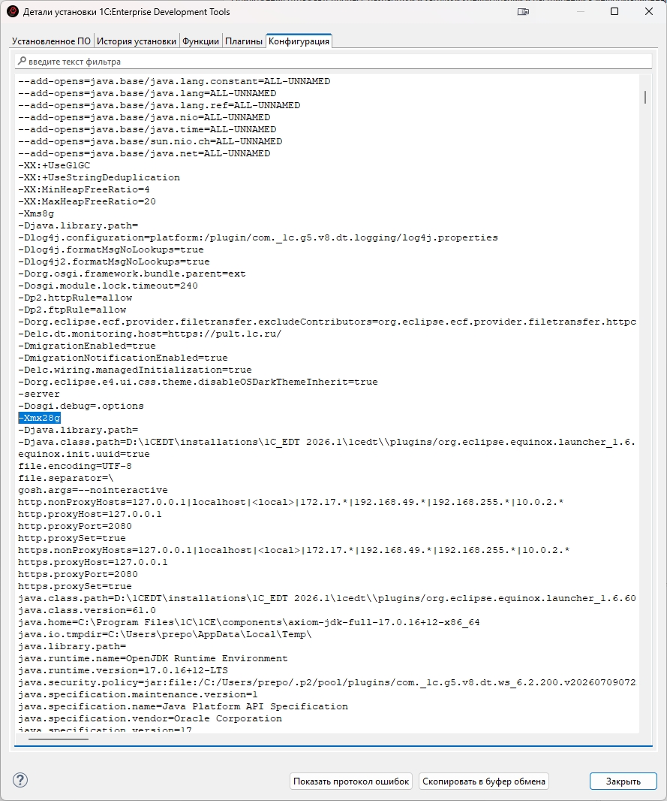
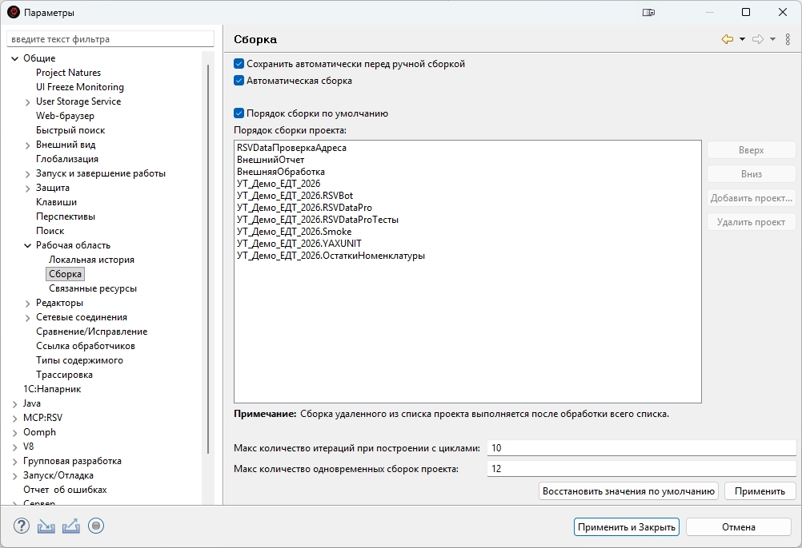
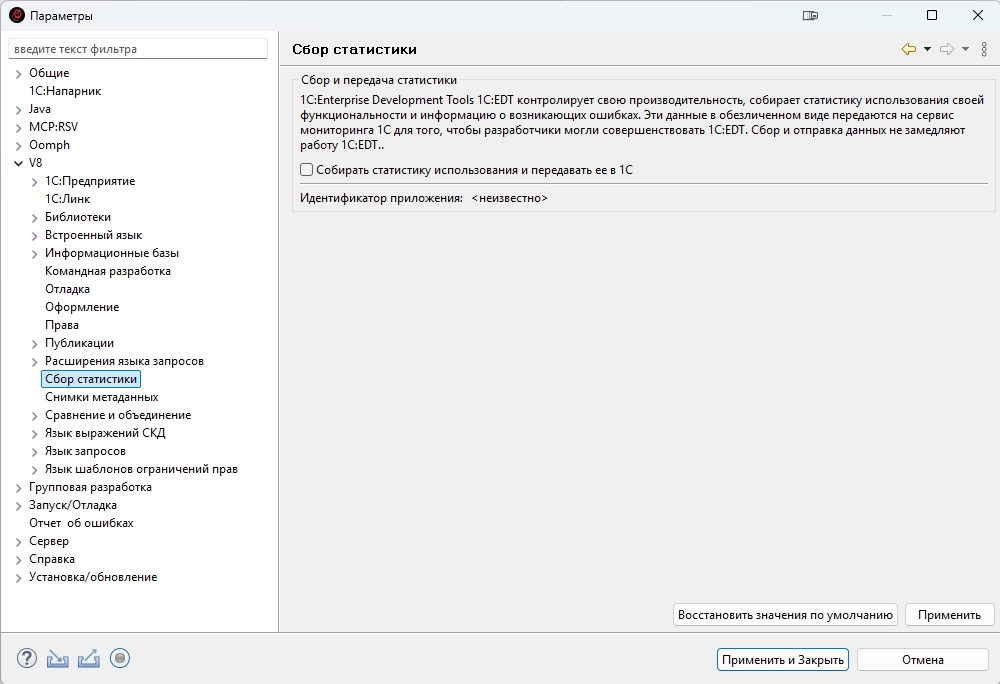
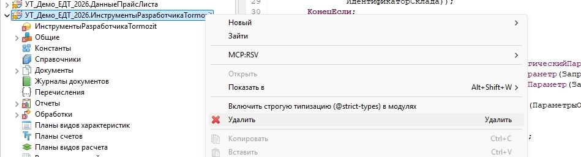
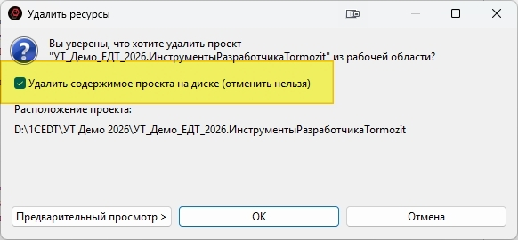
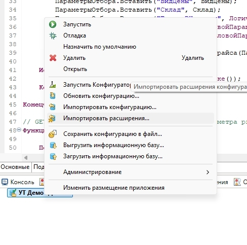
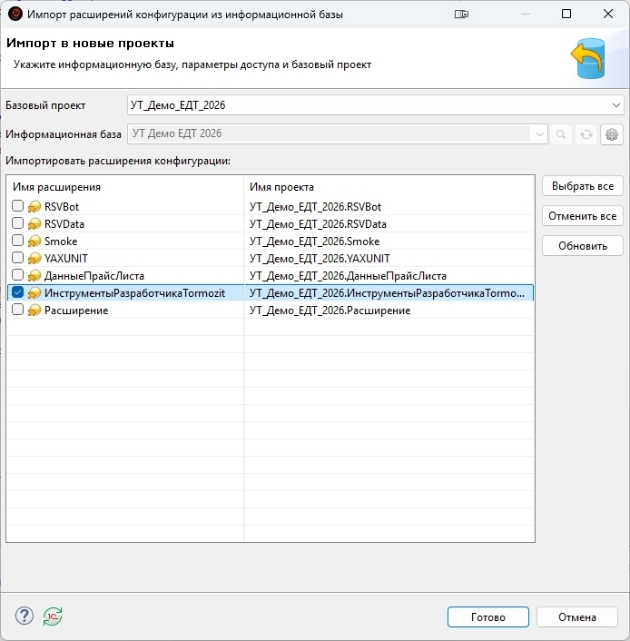

Руководство пользователя
Автор: Радзивиллович Сергей (prepod2003@yandex.ru, Telegram: @Prepod2003, ТГ канал: edt_ai_1c)
Что такое плагин
MCP:RSV Server — плагин для 1C:EDT, встраивающий MCP-сервер (Model Context Protocol) прямо в среду разработки. Плагин даёт ИИ-ассистентам (Claude Code, Cursor, Windsurf, Roo Code, Gemini CLI, Qwen Code) прямой доступ к конфигурациям 1С: метаданным, коду, формам, справке платформы, валидации и даже отладчику.
Плагин запускает HTTP-сервер на 127.0.0.1:8770 внутри EDT. ИИ-ассистент подключается по протоколу MCP (JSON-RPC 2.0 over HTTP) и получает 28 инструментов, распределённых по 4 профилям.
Все данные обрабатываются локально — код конфигурации не передаётся в интернет. Сервер работает прямо внутри IDE, без внешних серверов и SaaS-посредников.
Быстрый старт
Требования
- 1C:EDT 2026.1.2 — рекомендуемая среда: она наиболее стабильна, на ней ведётся вся разработка и проверка плагина. 1C:EDT 2026.2 тестируется, полную поддержку пока не гарантируем. Поддержка 1C:EDT 2025 прекращена с релиза 7.5.0
- Java — отдельно устанавливать не нужно, входит в стандартную поставку 1C:EDT
- ИИ-ассистент: Claude Code, Cursor, Windsurf, Roo Code, Gemini CLI, Qwen Code или VS Code + Copilot
Дистрибутив плагина один и тот же для обеих версий среды — отдельной сборки под версию ставить не нужно. Сразу после установки 1C:EDT имеет смысл выполнить первоначальную настройку среды: заводские значения памяти и сборки рассчитаны на самый слабый компьютер.
Установка
- Скачать ZIP-архив плагина
edt-rsv-repository-<версия>-SNAPSHOT.zip— сразу последней версии. Ставить более ранние и обновляться по цепочке не нужно: любая версия ставится с нуля. - В EDT: Справка → Установить новое ПО...
- Добавить... → Архив... → выбрать скачанный ZIP
- Отметить MCP:RSV Server → Далее → Готово
- Перезапустить EDT
- Проверить:
curl http://localhost:8770/health
Обновление плагина. Следить за новыми версиями вручную не нужно: при запуске EDT плагин сам узнаёт о вышедшем обновлении и предлагает его установить — «Обновить / Позже / Пропустить эту версию». По кнопке «Обновить» новая версия ставится штатным механизмом EDT, останется согласиться на перезапуск. Обновление никогда не ставится молча — только по вашему согласию.
Файл правил для ИИ-ассистента
В комплекте с плагином поставляется файл правил — инструкции, которые учат ИИ-ассистента правильно работать с 1С через MCP. Файл правил:
- Запрещает ИИ читать/редактировать BSL- и MDO-файлы напрямую — только через инструменты MCP
- Объясняет профили и их ограничения
- Учит следовать паттернам конкретной конфигурации (использовать методы БСП, а не платформенные примитивы)
- Обеспечивает управление знаниями — результаты исследований сохраняются между сессиями
- Экономит токены — инструменты вызываются только при необходимости
Скопируйте содержимое CLAUDE.md из комплекта в файл правил вашего ИИ-ассистента:
| ИИ-ассистент | Файл правил | Расположение |
|---|---|---|
| Claude Code | CLAUDE.md | Корень проекта |
| Cursor | .cursor/rules/rules.mdc | Корень проекта |
| Windsurf | .windsurfrules | Корень проекта |
| Roo Code | .roo/rules/rules.md | Корень проекта |
| Gemini CLI | GEMINI.md | Корень проекта |
| Qwen Code | .qwen/rules | Корень проекта |
| Cline | .clinerules | Корень проекта |
Содержимое правил одинаковое для всех ИИ-ассистентов — меняется только расположение файла.
При работе с проектом ИИ-ассистент автоматически создаст в папке .ai/ два файла:
| Файл | Назначение |
|---|---|
.ai/project-knowledge.md | Знания о конфигурации: тип, версия, паттерны кода, ключевые модули |
.ai/current-task.md | Текущая задача: план, статус шагов, хронология |
Рекомендация: добавьте
.ai/в.gitignoreили оставьтеproject-knowledge.mdв репозитории — он может быть полезен всей команде.
Эти два файла — основа работы над задачами, которые не помещаются в один разговор с ассистентом: как их вести, как передавать работу из чата в чат и что ещё дописать в файл правил — раздел Метод разработки.
Первоначальная настройка EDT
1C:EDT ставится с заводскими настройками, рассчитанными на самый слабый компьютер: среде отводится 4 ГБ памяти, проекты собираются по одному, сбор статистики включён. На реальной конфигурации это видно сразу — среда задумывается, сборка проекта идёт долго, ИИ-агент ждёт ответа на каждом вызове. Три настройки ниже делаются один раз после установки среды и дальше внимания не требуют.
Они относятся к самой 1C:EDT, а не к плагину: полезны любому, кто работает в этой среде, и не зависят от того, установлен ли MCP:RSV Server.
Проще всего поручить это ИИ-агенту
Правильные значения зависят от компьютера — сколько оперативной памяти, сколько у процессора ядер. Считать самому не нужно: ИИ-агент, который у вас уже подключён, видит конфигурацию машины и умеет править текстовый файл настроек среды. Дайте ему такую задачу:
«Посмотри, сколько на этом компьютере оперативной памяти и сколько у процессора физических ядер. Найди файл
1cedt.iniв каталоге установки 1C:EDT, сделай его копию рядом. Подбери под эту машину параметры-Xmx(наибольший объём памяти среды) и-Xms(начальный): примерно половина оперативной памяти компьютера, но не больше 28 гигабайт. Покажи, что собираешься записать, до записи в файл. EDT перед правкой должна быть закрыта. Заодно скажи, сколько одновременных сборок проекта имеет смысл поставить при таком числе ядер и такой памяти.»
Агент правит файл настроек, а две оставшиеся настройки — галочки в окне параметров среды, их ставят руками: это две минуты.
1. Память среды
Настройка живёт в файле 1cedt.ini рядом с 1cedt.exe в каталоге установки среды. Заводские значения — -Xms80m и -Xmx4096m, то есть не больше 4 ГБ на всю работу среды. Для конфигурации масштаба ERP или УТ этого мало: среда упирается в потолок памяти и начинает подолгу молчать.
Сколько ставить — зависит от объёма оперативной памяти компьютера:
| Оперативная память компьютера | -Xms | -Xmx | Что это даёт |
|---|---|---|---|
| 16 ГБ | -Xms2g | -Xmx8g | Нижняя граница, с которой можно работать. Меньше 16 ГБ на компьютере для 1C:EDT лучше не иметь вовсе |
| 32 ГБ | -Xms4g | -Xmx16g | Рабочий вариант для типовых конфигураций |
| 64 ГБ и больше | -Xms8g | -Xmx28g | Запас для ERP и для двух сред одновременно |
Правило простое: примерно половина оперативной памяти компьютера, потому что рядом работают платформа 1С, сервер, браузер и сама операционная система. Верхняя граница — 28 ГБ, и поднимать выше нет смысла: примерно до 32 ГБ Java хранит ссылки в сжатом виде, а за этой границей объекты в памяти становятся крупнее, и прибавка съедается сама собой.
Как править:
- Закрыть EDT.
- Открыть
1cedt.iniв текстовом редакторе и сделать копию файла рядом — понадобится, если что-то пойдёт не так. - Найти строки
-Xmsи-Xmxи заменить значения. Они идут ниже строки-vmargs, каждое на отдельной строке. Если такой строки нет — дописать её ниже-vmargs; второй-Xmxк уже существующему не добавлять. - Запустить EDT.
Проверить, что значение применилось: Справка → Детали установки → вкладка «Конфигурация» — в списке видно, с какими параметрами запущена среда.

-Xmx, с которым работает среда.Обновление среды перезаписывает
1cedt.ini. После установки новой версии 1C:EDT настройка возвращается к заводским 4 ГБ. Если среда снова стала задумчивой — первым делом посмотрите этот файл.
Держите две среды открытыми одновременно (например, 2026.1 и 2026.2) — память делится между ними: при 64 ГБ разумно оставить -Xmx28g основной и поставить -Xmx20g второй.
2. Одновременные сборки проектов
Параметры → Общие → Рабочая область → Сборка, поле «Макс количество одновременных сборок проекта». Заводское значение — 1: проекты собираются строго по очереди, даже если процессор простаивает.

Ставится по числу физических ядер процессора — не потоков. У процессора на 12 ядер и 24 потока это 12.
| Физических ядер | Значение |
|---|---|
| 4 | 4 |
| 8 | 8 |
| 12 и больше | 12 |
Две оговорки. Первая: настройка работает, когда в рабочей области несколько проектов — конфигурация, расширения, внешние обработки и отчёты. Если проект один, собираться параллельно нечему, и значение ничего не изменит. Вторая: каждая одновременная сборка занимает память, поэтому число сборок поднимают вместе с памятью среды, а не вместо неё — при 8 ГБ памяти больше четырёх ставить не стоит.
3. Сбор статистики
Параметры → V8 → Сбор статистики — снять галочку «Собирать статистику использования и передавать её в 1С».

Среда перестаёт обращаться к внешнему сервису из рабочего сеанса. В сети без выхода наружу или с жёстким прокси это лишние попытки соединения, которые ничего не дают вам и только засоряют журналы.
Подключение ИИ-ассистента
Сервер плагина поднимается вместе с EDT и слушает адрес 127.0.0.1, порт 8770. Подключение агента — один блок в конфиге клиента. В этом разделе собраны все сценарии: базовая настройка, несколько EDT и несколько конфигураций, подключение агента с другого компьютера.
Конфигурация для вашего ИИ-клиента
Claude Code (файл .mcp.json в корне проекта; то же самое делает команда claude mcp add --transport http 1c-rsv http://127.0.0.1:8770/mcp):
{
"mcpServers": {
"1c-rsv": {
"type": "http",
"url": "http://127.0.0.1:8770/mcp"
}
}
}Claude Desktop — это отдельная программа, и настраивается она иначе, чем Claude Code. Файл %APPDATA%\Claude\claude_desktop_config.json (в самой программе: Настройки → Разработчик → Изменить конфигурацию), на macOS — ~/Library/Application Support/Claude/claude_desktop_config.json. Нужен установленный Node.js:
{
"mcpServers": {
"1c-rsv": {
"command": "npx",
"args": ["-y", "mcp-remote", "http://127.0.0.1:8770/mcp",
"--transport", "http-only", "--allow-http"]
}
}
}Claude Desktop понимает в этом файле только серверы, которые он запускает сам как программу, а строку с адресом и транспортом пропускает без сообщения — поэтому подключение по адресу напрямую здесь не работает. Роль переходника выполняет
mcp-remote: Claude Desktop запускает его, а он обращается к серверу плагина по адресу. Раздел «Пользовательские коннекторы» в настройках для локального сервера тоже не подходит — такой коннектор подключается со стороны облака и требует адрес, доступный из интернета по https. После правки файла закройте Claude Desktop полностью и запустите заново.
Cursor / Windsurf (файл .cursor/mcp.json):
{
"mcpServers": {
"1c-rsv": {
"url": "http://127.0.0.1:8770/mcp"
}
}
}Roo Code (VS Code) (файл .roo/mcp.json или настройки Roo Code):
{
"mcpServers": {
"1c-rsv": {
"type": "streamable-http",
"url": "http://127.0.0.1:8770/mcp"
}
}
}Gemini CLI (глобально ~/.gemini/settings.json, или для проекта .gemini/settings.json):
{
"mcpServers": {
"1c-rsv": {
"httpUrl": "http://127.0.0.1:8770/mcp",
"trust": true
}
}
}Для Gemini CLI используется ключ
httpUrl(неurl). Глобальный конфиг~/.gemini/settings.jsonподключает MCP-сервер во всех проектах сразу.
Qwen Code CLI (глобально ~/.qwen/settings.json, или для проекта .qwen/settings.json):
{
"mcpServers": {
"1c-rsv": {
"httpUrl": "http://127.0.0.1:8770/mcp"
}
}
}Сервер автоматически согласует версию MCP-протокола с клиентом — совместим как с новыми (2025-11-25), так и со старыми (2024-11-05) клиентами.
Несколько EDT и несколько конфигураций
Если ИИ-ассистенту нужны сразу две базы — например, при разработке обмена между ERP и Бухгалтерией, — держите их как вам удобнее: обе в одном EDT (в одном workspace) или каждую в своём EDT. Работает одинаково и одинаково без настройки: подключение у агента одно, набор инструментов один — контекст чата вторая база не раздувает, — а нужную конфигурацию агент выбирает по имени проекта: «сравни структуру документа Реализация в ERP и в Бухгалтерии» — и он сам обратится к обеим.
Разнести конфигурации по разным EDT бывает и практичнее: операции уровня workspace — пересборка, очистка проектов — идут по всем его проектам сразу, и соседняя тяжёлая конфигурация замедляет их просто своим присутствием. В отдельных EDT каждая живёт своей жизнью.
Несколько запущенных EDT не требуют настройки — порты плагин разводит сам:
- Порты назначаются автоматически. Первый EDT занимает основной порт —
8770по умолчанию, его можно поменять в настройках, — каждый следующий берёт соседний свободный (8771, 8772…). Сервер работает в каждом открытом EDT, но прописывать эти соседние порты ИИ-ассистенту не нужно. - Подключение остаётся одно — через основной порт. Конфиг ИИ-ассистента не меняется: агент всегда обращается к одному адресу, и всё взаимодействие идёт через него. Вызов с именем проекта сам попадает в тот EDT, где этот проект открыт: если в EDT на основном порту такого проекта нет, запрос передаётся нужному EDT, а ответ возвращается агенту. Со стороны ассистента это один MCP-сервер, который видит все запущенные EDT. Список проектов всех запущенных EDT агент получает одной командой («покажи проекты workspace»).
- Одинаковые имена проектов не путаются. Копии одной конфигурации в двух EDT помечаются в списке; если имя есть в нескольких EDT, плагин не выбирает наугад — просит агента уточнить адрес (путь workspace или имя его папки).
- Закрыли EDT — подключение живёт. Его адрес в течение нескольких секунд подхватывает один из оставшихся EDT, перенастраивать ничего не нужно.
- Порт занят посторонней программой — у значка MCP:RSV в строке состояния появится предупреждение с объяснением, что сделать; как только порт освободится, плагин подхватит его сам.
Ручная разводка портов при этом никуда не делась — она может быть удобна, если хотите жёстко закрепить за каждым EDT свой порт: Окно → Настройки → MCP:RSV Server, поле MCP Server Port, «Применить» — сервер перезапустится сам, EDT перезапускать не нужно. В этом случае в конфиге ИИ-ассистента будет несколько MCP-серверов — по одному на каждый EDT (например, два окна VS Code, в каждом свой чат со своей базой).
Один сервер на несколько разработчиков
Отдельный случай — когда за одним сервером (например, по RDP) работают несколько человек: у каждого свои окна EDT и свой VS Code. Здесь важно понимать одну вещь: порты на сервере общие для всех. Каждый сидит в своём сеансе RDP, но сетевые порты сеанс не разделяет — порт 8770 на сервере ровно один, и занять его может только кто-то один.
Поэтому раздавать разработчикам порты подряд (8771, 8772, 8773…) нельзя. Если у человека открыто несколько окон EDT, первое занимает свой порт, а каждое следующее — соседний свободный (плагин делает это сам). Второе окно первого разработчика уедет на 8772 — то есть на порт второго. В итоге ИИ-агент второго, обращаясь к своему порту, попадёт в чужой EDT и увидит чужие проекты.
Решение — дать каждому разработчику свой порт с запасом, через 10. Тогда лишние окна EDT каждого остаются в его коридоре и к соседу не залезают:
| Разработчик | Его порт | Коридор его окон EDT |
|---|---|---|
| 1-й | 8770 | 8770–8779 |
| 2-й | 8780 | 8780–8789 |
| 3-й | 8790 | 8790–8799 |
| 4-й | 8800 | 8800–8809 |
| 5-й | 8810 | 8810–8819 |
Настройка — два шага, каждый разработчик делает их у себя:
- В EDT: Окно → Настройки → MCP:RSV Server, поле MCP Server Port — вписать свой порт (первый — 8770, второй — 8780, третий — 8790 и так далее), «Применить». Сервер перезапустится сам, EDT перезапускать не нужно. Порт задаётся один раз в каждом окне EDT этого разработчика.
- В своём VS Code: в конфиге ИИ-ассистента (
.mcp.json) указать тот же порт.
Первый разработчик — порт 8770:
{
"mcpServers": {
"1c-rsv": {
"url": "http://127.0.0.1:8770/mcp",
"transport": "http"
}
}
}Второй разработчик — порт 8780 (меняется только номер порта):
{
"mcpServers": {
"1c-rsv": {
"url": "http://127.0.0.1:8780/mcp",
"transport": "http"
}
}
}Дальше по таблице — третий 8790, четвёртый 8800 и так далее. Больше настраивать нечего: у каждого свой независимый сервер, а все окна EDT одного разработчика его агент по-прежнему видит через один порт (лишние окна плагин разводит внутри коридора сам).
Удалённый доступ: агент на одном компьютере, EDT — на другом
Типичная ситуация: EDT стоит на сервере рядом с базой (так быстрее), а VS Code с ИИ-агентом — на вашем ноутбуке. Напрямую подключиться не получится: сервер плагина принимает соединения только с адреса 127.0.0.1 — то есть только от программ на той же машине. По сетевому адресу порт не отвечает вовсе, и это не сбой: у сервера нет пароля, и открывать его всей сети было бы небезопасно. Кого пускать снаружи — решает операционная система, штатным «мостиком» (проброс порта).
Настройка на машине с EDT (Windows) — два действия в PowerShell от имени администратора. Для мостика возьмите порт подальше от 8770 — например, 9770: соседние порты (8771, 8772…) плагин раздаёт следующим запущенным EDT, и пусть они остаются свободными.
1. Мостик: соединения на сетевой порт 9770 передаются локальному серверу плагина на 8770 (подставьте свой IP сервера):
netsh interface portproxy add v4tov4 listenaddress=192.168.10.70 listenport=9770 connectaddress=127.0.0.1 connectport=87702. Разрешение в брандмауэре — и только для компьютера, с которого подключается агент (подставьте IP своего ноутбука):
netsh advfirewall firewall add rule name="MCP:RSV remote" dir=in action=allow protocol=TCP localport=9770 remoteip=192.168.10.50Проверка: на ноутбуке откройте в браузере http://192.168.10.70:9770/mcp — ответ «HTTP ERROR 405» означает, что сервер достижим (он просто не разговаривает с браузером). Дальше в конфиге ИИ-ассистента укажите этот адрес вместо локального:
{
"mcpServers": {
"1c-rsv": {
"url": "http://192.168.10.70:9770/mcp",
"transport": "http"
}
}
}Посмотреть настроенные мостики — netsh interface portproxy show all, убрать — та же команда с delete вместо add (и без connectaddress/connectport).
Безопасность: пробрасывайте порт только в доверенной сети — локальной или через VPN. Наружу в интернет порт не выставляйте: сервер отвечает любому, кто до него дотянулся, а правило брандмауэра с
remoteip— ваша единственная дверь. Альтернатива для тех, кто дружит с ssh, — туннельssh -L 8770:127.0.0.1:8770 пользователь@сервер: тогда на ноутбуке агент подключается к обычномуhttp://127.0.0.1:8770/mcp, а трафик идёт шифрованным.
Коротко о перезапусках: при смене порта или профиля саму EDT перезапускать не нужно — сервер обновляется на месте. Переподключить нужно только ИИ-ассистента (перезапустить чат или VS Code), чтобы он увидел новый сервер или новый набор инструментов.
Лицензирование
Тарифные планы
MCP:RSV Server распространяется по подписке. Доступны четыре тарифа:
| Тариф | Инструментов | Доступные группы |
|---|---|---|
| Аналитик | 12 | Анализ метаданных, Анализ кода, Поиск и навигация |
| Разработчик | 22 | + Редактирование кода и отладка, Валидация, Сборка и управление (вкл. экспорт), Диагностика |
| Архитектор | 25 | + Редактирование метаданных (более 180 операций), Юнит-тесты YAxUnit, Сценарное тестирование Vanessa |
| Архитектор Про | 28 | + Обновление конфигураций (update_configuration, включая реестр доработок), Журнал версий проекта (git), привязка информационных баз к проекту (manage_infobase), доработка конфигураций на обычных формах: запись модулей обычных форм, обновление базы конвейером, перенос форм из базы, снятие замка поддержки |
Подписка платная. Информация об оформлении и оплате — в Telegram-канале @edt_ai_1c.
Пробный период — бесплатно
При первом запуске EDT после установки автоматически открывается диалог активации. Нажмите «Получить пробный период» — плагин активируется с тарифом Архитектор на 14 дней.
Активация подписки
- Оформите подписку на нужный тариф — подробности в Telegram-канале @edt_ai_1c
- Получите код активации (формат:
ACT-DEV-XXXXXXXX) - В EDT откройте Окно → Настройки → MCP:RSV Server → Лицензия → нажмите «Активировать новый код...»
- Введите код → нажмите «Активировать»
Привязка к компьютеру происходит автоматически.
Привязка к компьютеру
Лицензия привязывается к рабочему месту через Machine ID — технический идентификатор, который считается из аппаратных характеристик устройства и учётной записи операционной системы, под которой запущена EDT.
Несколько пользователей на одном компьютере или сервере. У каждой учётной записи ОС свой Machine ID, поэтому лицензия, активированная под одной учётной записью, под другой не действует — в том числе при работе через удалённый рабочий стол. Подписка нужна на каждое рабочее место, с которого запускается EDT; одновременная работа нескольких человек по одной подписке не предусмотрена. Файл лицензии копировать между учётными записями бесполезно: в нём записан Machine ID, для которого лицензия выдана, и сервер сверяет его при каждом запуске. Купленная подписка при этом переносится — не копированием файла, а вводом кода активации под нужной учётной записью: лицензия переедет с сохранением срока и тарифа, как и при переезде на другой компьютер.
Пробный период выдаётся один на компьютер — он привязан к оборудованию. Под второй учётной записью того же компьютера получить ещё один пробный период нельзя, и перенести его тоже нельзя: кода активации у пробного периода нет, а переезд лицензии делается именно кодом. Если знакомитесь с продуктом на общем сервере, активируйте пробный период сразу под той учётной записью, под которой собираетесь работать.
При переустановке операционной системы или смене компьютера Machine ID изменится. В этом случае введите свой код активации на новой машине: лицензия автоматически перенесётся с сохранением оставшегося срока и тарифа. Дополнительный код получать не нужно, и подойдёт любой ваш код — не обязательно последний.
Так же работает возвращение обратно. Если вы работаете то на одном компьютере, то на другом — вводите свой код на том, за которым сидите сейчас. Число переездов не ограничено; одновременно лицензия действует на одной машине — той, где код введён последним.
Если у вас несколько подписок на разные рабочие места, каждая остаётся на своём компьютере: перенести одну поверх действующей другой нельзя — так вторая оплата не пропадает.
Если перенос не сработал (например, срок подписки истёк) — напишите в поддержку:
- Telegram: @Prepod2003
- Email: prepod2003@yandex.ru
Управление лицензией
Окно → Настройки → MCP:RSV Server → Лицензия
| Поле | Описание |
|---|---|
| Статус | АКТИВНА / ИСТЕКЛА / НЕ АКТИВИРОВАН |
| Тариф | Аналитик / Разработчик / Архитектор / Архитектор Про |
| Действует до | Дата окончания подписки |
| ID компьютера | Технический идентификатор для поддержки |
| Файл лицензии | Путь к локальному кэшу (~/.edt-rsv/license.json) |
Продление подписки
По истечении срока MCP-сервер перестанет запускаться. Для продолжения:
- Приобретите новый код активации
- Введите через «Активировать новый код...» на странице лицензии
Интерфейс управления в EDT
Индикатор в строке состояния
В нижней строке состояния EDT появляется значок MCP:RSV Server с цветным индикатором:
| Цвет | Значение |
|---|---|
| Зелёный | Сервер работает, инструменты доступны |
| Серый | Сервер не запущен |
При наведении отображается порт, количество активных инструментов и URL для подключения.
Контекстное меню (клик по индикатору)
1. Управление сервером: Запустить / Перезапустить / Остановить
2. Профили — быстрое переключение набора инструментов:
- Аналитик [3 группы] — 12 инструментов
- Разработчик [7 групп] — 23 инструмента
- Архитектор [10 групп] — 26 инструментов
- Архитектор Про [все 12 групп] — 28 инструментов
Активный профиль отмечен галочкой. При переключении реестр инструментов мгновенно перезагружается — перезапуск EDT не требуется.
Профиль и тариф — разные вещи. Тариф лицензии — это потолок доступа, определяемый подпиской. Профиль — пользовательская настройка в рамках тарифа. Например, пользователь с тарифом «Архитектор» может выбрать профиль «Аналитик», чтобы ограничить набор инструментов для ИИ. Профиль следует за сменой тарифа сам: купили более высокий — новые инструменты появятся при следующем запуске EDT; сознательно выбранный профиль ниже тарифа плагин при этом не трогает.
3. Группы инструментов — тонкая настройка. Каждая группа имеет чекбокс для включения/отключения независимо от профиля.
Страница настроек
Окно → Настройки → MCP:RSV Server — порт сервера (1024–65535, по умолчанию 8770) и управление группами.
Что умеет плагин — примеры запросов
Главное преимущество MCP-сервера — вы общаетесь с ИИ-ассистентом на естественном языке. Не нужно знать имена инструментов и их параметры. Просто опишите задачу — ассистент сам подберёт нужные инструменты.
Аналитик — изучение конфигурации
Знакомство с конфигурацией:
«Расскажи, что это за конфигурация — тип, версия, какие подсистемы есть, сколько объектов»
«Покажи все справочники, в имени которых есть "Контрагент"»
«Какие реквизиты у документа РеализацияТоваровУслуг? Покажи табличные части с колонками»
Анализ кода:
«Проанализируй подсистему Продажи — какие объекты входят, как связаны, где основная логика»
«Покажи структуру модуля менеджера справочника Номенклатура — какие методы, экспортные ли»
«Кто вызывает метод ПересчитатьСумму в документе ЗаказКлиента? Покажи цепочку вызовов»
«Что изменилось в модуле объекта документа ЗаказКлиента с прошлого коммита?»
Поиск по коду:
«Найди все места, где используется справочник Номенклатура — включая СправочникСсылка и СправочникОбъект»
«Найди в коде все обращения к регистру ЦеныНоменклатуры»
Справка платформы:
«Найди в справке платформы какие параметры принимает ВычислитьВыражениеСГруппировкойМассив»
«Покажи документацию по типу HTTPСоединение — конструктор, методы, свойства»
«Какие есть функции языка запросов 1С для работы с датами?»
Формы и справка:
«Покажи, как выглядит форма списка справочника Партнеры — хочу увидеть картинку»
«Прочитай встроенную справку документа ЗаказКлиента»
«Найди на форме заказа поле со скидкой — я не знаю, в какой оно группе»
«Покажи, какие поля формы заказа имеют составной тип»
«Найди справочник Партнеры — не помню, в конфигурации он или в каком-то из расширений»
«Покажи состав журнала документов Продажи — какие документы входят и какие графы»
Разработчик — код, валидация, отладка
Написание кода:
«Найди в конфигурации примеры использования Запрос.Выполнить и напиши аналогичный метод для выборки цен по номенклатуре»
«Добавь в модуль объекта документа ЗаказКлиента процедуру ПроверитьЗаполнение, которая проверяет наличие строк в табличной части»
«Замени метод ПересчитатьИтоги в модуле формы — вместо прямого расчёта используй вызов серверной функции»
«В большом общем модуле УчётНДФЛ найди строку, где формируется удержанный налог, покажи её с соседними и поправь» —
findнаходит место по тексту в модуле на десятки тысяч строк, не вычитывая его целиком, и отдаёт точные номера строк для правки.
Валидация:
«Проверь ошибки в документе ЗаказКлиента и исправь автоматически где возможно»
«Покажи все ошибки уровня ERROR в проекте — топ-10 самых частых»
Проверка запросов 1С (validate_query):
«Проверь синтаксис этого запроса: ВЫБРАТЬ Наименование ИЗ Справочник.Номенклатура ГДЕ ЭтоГруппа = ЛОЖЬ»
«В процедуре ПодготовитьЗапросПоТоварам модуля менеджера отчёта ОстаткиТоваров есть запрос — прочитай его и прогони через validate_query»
«Пройдись по менеджер-модулю отчёта Продажи — там несколько запросов в разных процедурах, проверь каждый, покажи ошибки с номерами строк»
«Проверь запрос из набора данных НаборПродаж в схеме компоновки отчёта АнализПродаж — это DCS, передай isDcs=true»
«Напиши метод ПолучитьТоварыПоАртикулу(ПрефиксАртикула) с запросом к справочнику Товары и параметром отбора. Перед тем, как вставить в модуль менеджера, проверь запрос через validate_query»
«Проверь запрос по моему регистру, который я завёл в расширении» — в проекте расширения проверка видит и его собственные таблицы, и его реквизиты на заимствованных объектах.
Отладка:
«Поставь точку останова в ПриСозданииНаСервере документа ЗаказКлиента и запусти базу в режиме отладки. Я открою документ — покажи значение Объект.Партнер»
«Запусти юнит-тесты в режиме отладки и остановись на пятой итерации цикла в РасчётСкидки — покажи все переменные»
«Поймай момент возникновения ошибки "Деление на 0" и покажи стек вызовов»
«Вычисли выражение Объект.Товары.Количество() в контексте отладки»
«Подмени значение Коэффициент на 2 и продолжи выполнение»
Сборка:
«Обнови информационную базу из проекта»
«Очисти кэш и пересобери проект — в валидации ложные ошибки»
Внешние обработки и отчёты:
«Собери внешнюю обработку ПроверкаКурсов в файл D:/Обмен/ПроверкаКурсов.epf»
«Выгрузи отчёт АнализПродаж в .erf — путь спросишь у меня»
Проверка кода и запросов — почти на автомате
После записи кода write_module_source сам дожидается проверки EDT и возвращает её результат в том же ответе: список ошибок со строками и готовую подсказку «N ошибок — исправь перед продолжением» либо «0 ошибок — код корректен». Поэтому ИИ-ассистент видит свои ошибки сразу и исправляет их сам, без вашего участия и без отдельного запроса — цикл «записал → проверил → исправил» замыкается автоматически.
Запросы проверяются настоящим парсером 1С (как в редакторе EDT) — достаточно попросить: «проверь запрос», «в процедуре N модуля M есть запрос — проверь его», «пройдись по менеджер-модулю отчёта X и проверь каждый запрос». Проверяется не только синтаксис: запрос разрешается против объектов вашей конфигурации — существование таблиц и полей, разыменование через точку, виртуальные таблицы с параметрами, соответствие СГРУППИРОВАТЬ ПО. Работает и для расширений (видны объекты основной конфигурации), и для внешних обработок и отчётов.
Можно поставить на автомат. Чтобы не просить каждый раз, пропишите в правилах своего ИИ-ассистента (в Claude Code — CLAUDE.md проекта, в Cursor — Rules for AI, в Windsurf — memories): «перед каждой записью модуля, если в коде есть запрос (присваивание Запрос.Текст = "…"), сначала проверь его и, если есть ошибки, исправь — только потом записывай». Сильные модели соблюдают такое правило стабильно.
Архитектор — создание объектов, форм, отчётов
Создание объектов:
«Создай справочник Товары с реквизитами Наименование (Строка 150), Артикул (Строка 25) и Цена (Число 15,2). Добавь табличную часть Характеристики с колонками Наименование и Значение. Создай форму элемента и установи её основной»
«Создай документ ЗаказПоставщику с реквизитами Контрагент (СправочникСсылка.Контрагенты), Склад, Сумма и табличной частью Товары (Номенклатура, Количество, Цена, Сумма)»
«Создай регистр накопления ОстаткиТоваров с измерениями Номенклатура и Склад, ресурсом Количество, регистратор — ПриходнаяНакладная»
«Добавь документу реквизит Плательщик — чтобы можно было выбрать и контрагента, и физлицо»
«В критерий отбора добавь ещё один вид документа, остальные не трогай»
«Перенеси подсистему Склад внутрь раздела Закупки»
«Вот файл расширения от заказчика — заведи из него проект и привяжи к нашей конфигурации»
«Сделай копию расширения Доработки под именем ДоработкиТест, поставь в базу и включи»
Работа с формами:
«Добавь на форму элемента справочника Товары группу "Основное" с полями Наименование и Артикул, и группу "Цены" с полем Цена»
«Добавь кнопку "Рассчитать итоги" на форму документа ЗаказКлиента и создай для неё обработчик на сервере»
«Подбери стандартную картинку для подсистемы Склад и установи её»
«Добавь на форму таблицу динамического списка по регистру ОстаткиТоваров»
«Положи на форму обработки поле HTML-документа ПревьюОтчёта во всю ширину»
«В поле Характеристика показывай только характеристики выбранной в строке Номенклатуры» — настройка «Связей параметров выбора» (отбор по соседнему реквизиту строки, типичный случай — подчинённый справочник); работает и для поля формы, и для реквизита объекта/табличной части.
«В поле Папка разреши выбирать только группы» — «Параметры выбора» (постоянный отбор фиксированным значением).
«Покажи форму заказа так, как её видно в редакторе форм, и подсветь поле Скидка»
«Открой форму справочника Товары в 1С и сделай скриншот — хочу увидеть её глазами пользователя»
«У полей на форме списка вместо подписей технические имена — поправь по всему проекту»
«Сделай кнопку Провести шире и растяни таблицу товаров по высоте»
«Переименуй на форме поле СуммаДок в СуммаДокумента»
«Убери у поля Контрагент обработчик ПриИзменении, само поле оставь»
«Сделай на форме заказа дату без секунд, а сумму — с разделителем тысяч»
«Сделай форму документа ЗаказПоставщику как у типовых документов нашей конфигурации» — форма собирается одним обращением по готовому рецепту, с оглядкой на образец в вашей конфигурации
«Выведи под таблицей товаров итоги по количеству и сумме» — итоговая строка самой таблицы, как в типовых формах
Макеты и печатные формы:
«Создай документу Накладная макет печати с шапкой (номер, дата, контрагент), строками товаров и итогом по сумме»
«Сделай отчёт продаж товаров по месяцам: слева список товаров, сверху Январь/Февраль/Март, в ячейках суммы, снизу итоги по каждому месяцу»
«Добавь справочнику Контрагенты макет визитки и именованную область ДанныеКонтакта»
«Возьми готовый макет из файла C:\Печатные формы\Счёт.mxl и положи его в обработку ПечатьСчёта»
Типы данных и определяемые типы:
«Добавь справочнику Контрагенты реквизит Фото типа ХранилищеЗначения»
«Создай определяемый тип ПользовательСистемы из Справочник.Пользователи и Справочник.ВнешниеПользователи, и добавь его реквизитом документу Поручение»
«Добавь в регистр накопления ТоварыНаСкладах реквизит Комментарий» — реквизиты теперь работают во всех 4 видах регистров
Роли и права доступа:
«Создай роль Менеджер: полные права на документ ЗаказПоставщику, чтение справочника Партнёры — но только записей, где Ответственный совпадает с текущим пользователем» — права с автоматическими зависимостями плюс ограничение доступа на уровне записей (РЛС).
Планы видов характеристик:
«Сделай у плана видов характеристик ДополнительныеРеквизиты тип значения — строка 150 и булево»
«Поменяй тип реквизита Артикул справочника Товары на число 12,0 — не удаляй и не пересоздавай его»
«Собери дополнительные значения характеристик: создай справочник ЗначенияСвойств, подчини его плану видов характеристик ДополнительныеРеквизиты и привяжи как дополнительные значения»
Планы счетов, планы обмена, XDTO:
«Свяжи план счетов Хозрасчетный с планом видов характеристик ВидыСубконто и назначь счёту 41 «Товары» субконто Номенклатура» — план счетов заработает с аналитикой, движения можно заполнять по субконто
«Наполни план обмена ОбменСФилиалами: Номенклатуру и Контрагентов с авторегистрацией, документ Заказ — без авторегистрации»
«Собери XDTO-пакет ОбменДанными: пространство имён http://my/exchange, тип объекта Контрагент со свойствами Наименование (строка) и ИНН (строка)» — типы сразу работают через ФабрикуXDTO
Отчёты СКД:
«Создай отчёт ПродажиПоКонтрагентам с группировкой по контрагентам и сортировкой по сумме»
«Добавь в отчёт условное оформление: если сумма больше 100000, выделить строку жёлтым»
«Добавь в отчёт отбор по периоду и контрагенту»
«В отчёте ПродажиПоКонтрагентам переименуй набор данных и убери лишний отбор по складу, остальное не трогай» — точечная правка готовой схемы, без пересборки
«Свяжи в отчёте набор Продажи с набором РеквизитыОрганизаций по полю Организация»
«Сделай у отчёта второй вариант "Продажи по номенклатуре" — скопируй текущий и поменяй группировку на номенклатуру»
«Вынеси в шапку отчёта быстрые настройки: период и отбор по организации»
Расширения:
«Заимствуй документ ЗаказКлиента в расширение и добавь реквизит КодПроекта»
«В моё расширение заимствуй документ ПоступлениеТоваров и допиши в его объектный модуль «После Обработки проведения» — создавай движения в регистр ДопДДС» — плагин сам включит нужную галочку в расширении, код заработает в предприятии без ручной правки в EDT
«Мы обновили конфигурацию на новый релиз. Посмотри, что в моём расширении разошлось с типовой, и приведи его в порядок»
«У меня в расширении перехват «вместо» на процедуре проведения. Переведи его на контролируемое изменение, чтобы при обновлении типовой не переписывать заново»
Подписки на события:
«Подпиши проведение документов ЗаказКлиента и РеализацияТоваров на обработчик ОбщийМодульПодписок.ПриПроведенииЗаказа» — одна подписка на два документа, в общем модуле появится процедура-заглушка с правильными параметрами
«Создай серверный общий модуль ВызовСервера с разрешённым вызовом с клиента» — модуль сразу с нужными галочками контекста исполнения
HTTP-сервисы:
«Создай HTTP-сервис УправлениеПользователями с корневым URL users, шаблонами /list (GET ПолучитьСписок, POST Создать) и /users/{id} (GET Получить, DELETE Удалить)» — за один вызов появятся сервис, шаблоны, методы и заглушки обработчиков в модуле сервиса
«Добавь в HTTP-сервис ИнтеграцияERP шаблон /orders/{id} с методами GET и PUT»
Права и подсистемы:
«Создай роль ТолькоЧтениеСклад с правами Чтение и Просмотр на все складские справочники»
«Включи документ ЗаказПоставщику в подсистему Закупки»
Тестирование — юнит-тесты и сценарии Vanessa:
«Напиши юнит-тест на функцию РасчётСкидки из ОбщегоНазначенияСервер: скидка 10% от 1000 должна быть 100. Прогони и покажи результат» — код проверяется кодом, отчёт через пару секунд
«Напиши сценарий Vanessa: открыть список Контрагентов, создать элемент с наименованием "Тест", записать и проверить, что он появился в списке. Прогони» — интерфейс проверяется как живым пользователем
«Я добавил в Заказ функцию расчёта суммы со скидкой и кнопку "Пересчитать" на форме. Напиши юнит-тест на функцию и сценарий Vanessa на кнопку, прогони и то, и другое» — полный цикл: и логика, и интерфейс одним заданием. Подробнее — разделы «Юнит-тесты» и «Сценарное тестирование Vanessa»
Архитектор Про — обновление конфигураций, журнал версий, обычные формы
Обновление и объединение конфигураций:
«Обнови конфигурацию на новый релиз — файл D:\Обновления\1Cv8.cf. Доработки объединяй: по каждому спорному объекту показывай мне решение, ничего не затирай молча» — подробнее в разделе «Сравнение, объединение и обновление конфигураций»
«Сохрани реестр моих доработок, обнови на новый релиз, приняв всё из поставки, потом верни доработки из реестра и покажи, что не удалось перенести автоматически»
«У нас только файл обновления D:\Обновления\1cv8.cfu. Обнови по нему конфигурацию, доработки сохрани» — ещё задания в разделе «Готовые задания агенту»
Журнал версий проекта:
«Зафиксируй текущее состояние проекта снимком, сделай доработку по заказам в отдельной ветке, а когда проверим — вливай в основную» — подробнее в разделе «git — журнал версий проекта»
«Покажи, что изменилось в модуле проведения с последнего снимка, по методам»
Старые конфигурации на обычных формах (УТ 10.3, УПП и т. п.):
«Найди, где в форме документа ЗаказПокупателя проверяется минимальная сумма заказа, добавь исключение для VIP-контрагентов и обнови базу» — подробнее в разделе «Обычные формы»
«Я доработал форму заказа в Конфигураторе — подтяни её в проект вместе с модулем»
«Сними замок поддержки с конфигурации, эталон поставщика уложи в проект» — с обязательным подтверждением человека
Четыре профиля доступа
Набор доступных инструментов определяется профилем — он выбирается на странице настроек плагина в EDT. Полный каталог всех инструментов с описаниями — на странице «Описание инструментов».
- Аналитик — только чтение: изучение и документирование конфигурации, поиск и чтение кода, визуализация форм, справка платформы. Ничего не меняет в проекте.
- Разработчик — всё из «Аналитика» плюс запись BSL-кода с встроенной валидацией, проверка запросов, отладка через ИИ, диагностика производительности (замер, технологический журнал, журнал регистрации), сборка и экспорт внешних обработок и отчётов в .epf/.erf.
- Архитектор — всё из «Разработчика» плюс конструктор конфигурации (создание объектов, форм, отчётов СКД, макетов, расширений — более 180 операций) и полный цикл тестирования: юнит-тесты YAxUnit и сценарные UI-тесты Vanessa.
- Архитектор Про — всё из «Архитектора» плюс возможности, которых нет у других инструментов на рынке: обновление и объединение конфигураций (включая реестр доработок), журнал версий проекта (снимки, ветки, обмен с сервером), привязка информационных баз к проекту (
manage_infobase) и доработка конфигураций на обычных формах — запись модулей обычных форм, обновление базы, перенос форм из Конфигуратора, снятие замка поддержки. Чтение кода обычных форм при этом доступно во всех профилях.
Набор инструментов по умолчанию определяется тарифом. Куплен «Архитектор Про» — работает «Архитектор Про», и всё, что входит в тариф, доступно сразу, включая инструменты, которые появятся в следующих версиях: после обновления плагина ничего включать руками не нужно. Если вы сознательно выбрали профиль ниже своего тарифа — например «Аналитик», чтобы ассистент ничего не менял в проекте, — он таким и останется: обновление ваш выбор не переписывает, снятые вручную галочки групп инструментов тоже сохраняются. Сменить профиль можно там же, где и раньше — значок MCP:RSV в статусной строке EDT. А если ассистент вызвал недоступный инструмент, в ответе назван профиль, в котором этот инструмент есть, и причина: группа выключена в настройках или тариф ниже нужного.
Конструктор конфигурации — edit_metadata
Единый инструмент для создания и настройки объектов метаданных, форм, макетов печатных форм и отчётов. Содержит более 180 операций в 11 областях. Все изменения выполняются через нативные сервисы EDT — результат идентичен ручному созданию в конструкторе.
Полный список всех операций по 11 областям — на странице «Описание инструментов». Ниже — ключевые возможности конструктора.
Ключевые возможности
Картинки. Свойства setObjectProperty и setProperty принимают как стандартные картинки EDT (763 шт., поиск через listPictures), так и общие картинки конфигурации в формате CommonPicture.ИмяКартинки. В расширении общая картинка основной конфигурации подключается попутно, самим назначением значка, — отдельный вызов не нужен. Значок кнопки, закладки и подменю задаётся сразу при создании элемента, в том числе в пакете операций.
Пакетный режим. Большинство операций поддерживают создание нескольких элементов за один вызов. Справочник с 10 реквизитами, табличной частью и формой — за 3–4 вызова вместо 15. createObject умеет сразу создавать реквизиты и табличные части (с их колонками), так что полноценный справочник или документ собирается одним вызовом.
Идемпотентность конструктора метаданных. Добавление реквизитов, табличных частей, колонок, значений перечисления, полей регистра и прав роли с тем же именем повторно не создаёт дубль — возвращается alreadyExists: true, ничего не меняется. В пакетном режиме совпавшие имена попадают в skipped, новые — в created, агент получает полную картину. Это позволяет безопасно прерывать генерацию и продолжать — повторные вызовы после остановки не плодят одноимённых элементов в .mdo.
Режим предпросмотра. К любой операции конструктора метаданных можно добавить параметр dryRun=true — плагин выполнит её в транзакции и откатит. В ответе будет видно, что получилось бы (созданные реквизиты, формы, элементы), но в проекте ничего не меняется. Полезно для перепроверки сложных пакетных вызовов или когда неуверен в правильности типа. Не применяется только к операциям заимствования и удаления реквизитов/ТЧ — там плагин честно говорит, что режим предпросмотра невозможен.
Реквизиты по умолчанию. Тип реквизита можно не указывать — поставится Строка длиной 10, ровно как при нажатии кнопки «+ Реквизит» в EDT. Работает для всех объектов с реквизитами (справочники, документы, все 4 вида регистров, планы счетов, планы видов характеристик и расчёта, бизнес-процессы, задачи, планы обмена).
Типы данных. Принимаются русские и английские имена — Строка/String, Число/Number, ХранилищеЗначения/ValueStorage, ДвоичныеДанные, УникальныйИдентификатор, ссылочные (CatalogRef.X/СправочникСсылка.X), а также определяемые типы (DefinedType.X/ОпределяемыйТип.X).
Составной тип — сразу и потом. Реквизит «и контрагент, и физлицо» создаётся одним вызовом: список типов передаётся вместе с реквизитом, у каждого своя длина строки, точность числа и состав даты. Работает и внутри пакетного создания объекта, и для колонок табличных частей, полей регистров и реквизитов формы. Принимаются обобщённые записи СправочникСсылка, ДокументСсылка, ЛюбаяСсылка, а также ссылка на сам создаваемый объект (договор с реквизитом «главный договор» — за один вызов). У уже существующего реквизита состав типов правится точечно: changeAttributeType добавляет один тип или убирает отдельный, не перечисляя весь состав заново — «добавь в критерий отбора ещё один вид документа» → один вызов. Полная замена делается только явным указанием, поэтому случайно стереть остальные типы нельзя. Тем же вызовом меняется тип колонки, существующей только на форме, — по пути «реквизит формы → табличная часть → колонка», без удаления и пересоздания колонки. И там же ставится признак «Неотрицательное» у числового реквизита.
Расширения. При добавлении реквизитов со ссылочными типами инструмент автоматически заимствует связанные объекты. При записи кода через write_module_source в модуль заимствованного объекта (объектный, менеджера, набора записей и т.д.) плагин автоматически включает участие этого модуля в расширении — ту самую галочку на вкладке «Расширение» в редакторе объекта в EDT. Без неё файл модуля на диске есть, но платформа при исполнении его игнорирует — получался тихий баг. Теперь не нужно лазить в EDT после каждой записи кода в заимствованный модуль. Если модуль нужно включить без записи кода (например, чтобы унаследовать базовое поведение as-is) — отдельная операция adoptModule.
Обновление заимствованного из изменившейся базы. Когда основная конфигурация изменилась после заимствования (например, обновили типовую), копия объекта или формы в расширении устаревает. Операция updateAdopted обновляет её слиянием: изменения базы добавляются, доработки расширения сохраняются. У формы устаревание видно заранее — в просмотре формы через get_form_image есть признак «базовая форма изменилась» со списком того, что добавилось в базе. Долгие обновления на больших конфигурациях не обрываются: если ответ сообщает, что работа продолжается, повторный такой же вызов забирает готовый результат. Снять заимствование дочернего элемента — unadoptChild, объекта целиком — обычный removeObject (уходит только копия из расширения, основная конфигурация не меняется).
Подписки на события. Подписка создаётся одним вызовом createObject: источник (один тип или массив), имя события (ОбработкаПроведения / Posting, ПриЗаписи / OnWrite и т.д.) и обработчик ОбщийМодуль.Метод. Сразу после создания в общий модуль автоматически дописывается процедура-заглушка с правильной сигнатурой — первым параметром идёт Источник, остальные берутся из описания события, в конце стоит Экспорт. Агенту остаётся написать только тело. Если общий модуль создали позже подписки или изменилось имя метода — отдельная операция addEventSubscriptionHandler допишет заглушку по готовой подписке.
Общие модули. У createObject общего модуля теперь есть параметры-флаги контекста исполнения: server, serverCall, clientManagedApplication, clientOrdinaryApplication, externalConnection, privileged, global и returnValuesReuse (с русскими алиасами «НеИспользовать» / «НаВремяВызова» / «НаВремяСеанса»). Агент явно указывает, какой модуль ему нужен — «серверный с вызовом с клиента», «клиент-серверный без экспортных вызовов» и т.д. — и получает модуль с правильными галочками сразу, без ручной правки в EDT.
Бизнес-процессы и задачи. Бизнес-процесс собирается через агента целиком: карту маршрута — точки (Старт, Действие, Условие, Завершение и др.) и переходы между ними — рисует одна команда createRouteMap, плагин сам расставляет точки ярусами и заводит в модуле заготовки обработчиков с правильной сигнатурой. У задачи настраивается адресация (setTaskAddressing): регистр адресации, реквизиты адресации, основной реквизит и параметр сеанса «текущий исполнитель». Карта маршрута и адресация видны и при чтении объекта через get_object_details / ai_context.
Макеты печатных форм. Полный цикл сборки макета: создание объекта, рисование ячеек с оформлением, объединения, ширины колонок, высоты строк, именованные области (Шапка, СтрокаТовара, Подвал). drawTemplate делает всё одним пакетным вызовом — готовый макет, идентичный нарисованному вручную в EDT. Точечно текст в ячейку ставит setTemplateCell.
Вёрстка макета без дописывания кодом. Ячейке задаётся не только шрифт, цвет и выравнивание, но и размещение текста (textPlacement: переносить по словам, обрезать, забивать, выходить на соседние ячейки), формат данных обычной строкой формата платформы (dataFormat: ЧЦ=15; ЧДЦ=2, ДФ=dd.MM.yyyy), отступ, поворот текста (вертикальные заголовки узких колонок), узор заливки с цветом, выделение отрицательных значений и защита ячейки от редактирования в пользовательском режиме. Формат суммы и даты больше не нужно задавать кодом при заполнении.
Высота строки под содержимое. Перенос по словам сам по себе ничего не даёт: текст переносится, а строка прежней высоты показывает одну строчку. Поэтому у высоты три способа задания — по содержимому без ограничения (autoHeight), по содержимому но не выше заданного предела (autoHeight вместе с height) и жёстко заданная высота (height). Помните обратное: жёсткая высота автоподбор выключает, поэтому если нужно, чтобы текст помещался сам, высоту числом задавать не надо. Ширине колонки тоже доступен автоподбор по содержимому и весовой коэффициент — доля, в которой между колонками делится свободное место.
Именованные области — все три вида. Строки, колонки и прямоугольник платформой разрешены и работают. Для секций печатной формы берут строчные: вывод области кладёт её со следующей строки и всегда от первой колонки, а у прямоугольной при выводе теряется горизонтальное смещение. Прямоугольные удобны для присоединения и для блоков внутри строки. Ограничение по виду ровно одно: повторяемые при печати строки принимают только строчную область, повторяемые колонки — только колоночную.
Печатная форма внешней обработки. Собирается теми же средствами, вплоть до готового файла .epf. Одно отличие стоит знать заранее: стандартных команд объекта — провести, записать, пометить на удаление — у внешней обработки нет, поэтому кнопка печати делается своей командой со своим обработчиком. Базовые команды самой формы (справка, настройка формы, закрытие, сохранение и восстановление настроек) платформа заводит и здесь, и кнопка для них ставится обычным вызовом. Готовый порядок сборки — в справке через help topic=externalObjectsWorkflow.
Содержимое макетов. addTemplate теперь не только создаёт макет, но и сразу наполняет его: текстовому — текст, HTML-макету — разметку, а внешней компоненте, двоичному макету и графической/географической схеме — путь к файлу-источнику на диске. У готового макета содержимое можно прочитать и заменить (getTemplateContent / setTemplateContent) — удобный сценарий «поправить кусок текста»: агент читает текущее содержимое, меняет нужное и записывает обратно. Для табличного макета getTemplateContent возвращает полную карту — ячейки с текстами, параметрами и оформлением (шрифт, цвета, выравнивание, границы, размещение текста, формат, отступ, поворот, узор, защита), объединения, именованные области с их видом, ширины колонок с признаком автоподбора и высоты строк с расшифровкой словами, — а операции правки сообщают, что именно перезаписывают. Цвета приходят в привычной записи цвета, а не служебными номерами; оформленные ячейки без текста из карты не пропадают. Так собственная правка сверяется чтением, а не глазами в EDT. Вместе с режимом предпросмотра dryRun это даёт безопасную точечную правку: посмотрел карту → прогнал изменение вхолостую → применил.
Отчёты СКД. Полный цикл: схема, наборы данных, параметры, ресурсы, группировки, таблицы, диаграммы, отборы, сортировки, условное оформление, варианты настроек. Минимальный отчёт — 6 вызовов. В справке есть готовый рабочий сценарий для матричных отчётов («товары × месяцы»). Схему можно не только собрать с нуля, но и править точечно — у каждого элемента есть «создать / изменить / удалить»: переименовать набор, поменять формулу итога, убрать лишний отбор, не пересобирая отчёт целиком.
Параметр отчёта «только дата» или «только время». Параметру отчёта и вычисляемому полю задаётся состав даты — «Дата», «Время» или «Дата и время» — при создании и при изменении. В шапке отчёта пользователь видит поле только с датой или только со временем, и в отчёт уходит ровно то, что он видит. При чтении отчёта состав даты виден у каждого параметра.
Значения в настройках отчёта. Самая дорогая ошибка в СКД — значение, записанное не тем типом: схема выглядит совершенно правильной, проверка проекта молчит, а отчёт отдаёт ноль строк. Поэтому значение отбора, условия условного оформления и параметра настроек записывается так же, как его хранят типовые конфигурации. Ссылочное пишется привычным адресом — Перечисление.СтатусыЗаказов.Закрыт, для пустой ссылки Справочник.Валюты.ПустаяСсылка; опечатка в имени значения не уходит в схему молча, а встречает отказ с перечнем допустимого. Дата сохраняется датой, принимаются записи ГГГГ-ММ-ДД, ГГГГ-ММ-ДД ЧЧ:ММ:СС и ДД.ММ.ГГГГ. Конкретный элемент базы по идентификатору отклоняется с объяснением: схема живёт в конфигурации, а элементы у каждой базы свои — такой отчёт работал бы ровно в одной базе. При чтении рядом со значением приходит его вид (дата, число, булево, строка, ссылка, список значений, стандартный период), так что ошибку типа теперь видно чтением, а не только запуском отчёта. Подробности — help topic=dcsReferenceValues.
Состав полей набора данных. При включённом автозаполнении описаний полей в схеме нет вовсе — состав платформа берёт из текста запроса, ровно как в типовых отчётах; поэтому «полей 0» здесь норма, и ответ прямо это называет. Автозаполнение выключают (autoFillAvailableFields), чтобы в отчёт не попали служебные колонки запроса: тогда доступны ровно объявленные поля. Выключить его можно и у готового набора, не пересоздавая. Правка текста запроса режим не переигрывает: признак автозаполнения не трогается, объявленные поля остаются, служебные колонки не возвращаются — пересобрать поля из нового запроса можно, включив автозаполнение явно. Пакетный запрос (несколько запросов через «;» с временными таблицами) сверяется с последним запросом пакета — тем, результат которого набор и отдаёт наружу.
Удаление не оставляет обломков. Настройки вариантов отчёта ссылаются на поля и параметры схемы, и запись, оставшаяся без своего поля, схему на вид не портит — а отчёт после этого не собирается вовсе. Поэтому вместе с полем убираются все записи, которые на него ссылались: в группировке, в выбранных полях, в отборе, в сортировке, в условном оформлении, во всех вариантах; ответ перечисляет убранное поимённо, а правило оформления, у которого не осталось ни одного поля, снимается целиком. То же при удалении параметра схемы. Поверх этого работает страховка состава: если операция, которая ничего не должна удалять, уменьшила число наборов, параметров, итоговых и вычисляемых полей, связей или вариантов — правка отменяется целиком, а ответ называет, что именно ушло. Перед крупной правкой схемы плагин делает снимок проекта и возвращает короткую команду возврата.
Связи наборов данных. Когда отчёт собирает данные из нескольких источников (продажи в одном наборе, реквизиты организаций в другом, связь по «Организация»), связь можно создать, изменить и удалить. Плагин сам поддерживает порядок: при удалении набора висящие на нём связи убираются, при переименовании — переключаются на новое имя, без ручной чистки.
Варианты отчёта. Вариант можно добавить, скопировать целиком под новым именем (со всеми группировками, отборами и оформлением), переименовать и удалить. Любую настройку можно адресовать конкретному варианту — многовариантные отчёты («Продажи по организациям» и «Продажи по номенклатуре») собираются полностью через MCP.
Быстрые настройки и точечная правка запроса. Любую настройку (отбор, сортировку, оформление, параметр) можно вынести в шапку отчёта быстрыми настройками или спрятать — пользователю не придётся лезть в «Изменить вариант…». А чтобы добавить в запрос набора одно поле или условие, больше не нужно передавать весь текст запроса заново — есть точечные операции, остальной запрос остаётся нетронутым.
Схема компоновки — не только для отчётов. Схему компоновки данных (с запросом, группировками, ресурсами, отборами) теперь можно создавать не только в отчётах, но и в обработках, справочниках, документах, планах счетов, бизнес-процессах, задачах и планах обмена — везде, где в 1С бывают макеты типа «Схема компоновки данных». Открывается типовой сценарий «обработка с настраиваемыми отборами»: AI собирает в обработке макет со схемой, форму с реквизитом-композитором и кнопкой «Сформировать» — пользователь в режиме предприятия задаёт отборы и группировки сам.
HTTP-сервисы. Полный цикл сборки сервиса из 1С: сам сервис с корневым URL, URL-шаблоны вида /users/{id}, HTTP-методы (GET, POST, PUT, DELETE, PATCH и другие). Можно собирать по частям («добавь шаблон, добавь метод»), а можно одним вызовом createObject — пустой сервис превращается в готовый REST-API со всеми шаблонами, методами и заглушками обработчиков за один проход. В модуле сервиса автоматически появляется процедура с правильной сигнатурой на каждый HTTP-метод и пометкой Экспорт — после обновления информбазы сервис уже отвечает (пустым ответом), тело обработчика дописывается обычной фразой агенту через write_module_source.
Композитор настроек на форме. Операция setupSettingsComposerOnForm одним вызовом добавляет на любую форму (обработки, отчёта, общей формы) реквизит типа КомпоновщикНастроек, UI-таблицы настроек (дерево группировок, отборы, сортировка, условное оформление — через параметр standardItems; алиас full = все четыре) и привязку ExtInfo формы. Работает как галочка «Настройки на форме» в мастере EDT, но доступно не только для отчётов. В ответе возвращается готовый BSL-пример для обработчика ПриСозданииНаСервере — с корректной инициализацией композитора из макета со схемой. Полный пошаговый сценарий — в справочнике через help topic=composerWorkflow.
Подсистемы и поиск объекта в меню. Типовой вопрос пользователя: «в каком разделе интерфейса найти этот документ/отчёт?». Один вызов get_object_details на объект даёт поле subsystems со всеми полными путями подсистем, в которых он числится. Агент сразу отвечает: «этот документ лежит в разделе Продажи → Документы». Для самой подсистемы get_object_details возвращает content (включённые объекты), children (вложенные подсистемы) и parent (путь к родителю). В имени принимается полный путь Subsystem.A.Subsystem.B на любую глубину. Бонусом: createObject с тем же форматом пути сразу создаёт новую подсистему как вложенную. А уже существующую подсистему можно перенести под другой раздел или обратно на верхний уровень — nestSubsystem; вместе с ней переезжают её состав, свойства и вложенные подсистемы, на любую глубину. Работает и в расширении, включая случай, когда свой раздел вкладывается в заимствованный типовой.
Роли и права доступа. Роль настраивается через агента целиком. Состав читается полностью (get_object_details / ai_context): флаги роли, права по каждому объекту — вплоть до отдельных реквизитов, табличных частей и команд, — ограничения доступа к данным и шаблоны ограничений. Права назначаются как в редакторе прав EDT: вместе с правом автоматически проставляются зависимые (дали «Изменение» — «Чтение» встанет само), права ставятся и на конфигурацию целиком. Поддержаны ограничения доступа на уровне записей (РЛС): условием может быть запрос на языке ограничений, макрос вида #ЗначениеРазрешено(…) или шаблон роли; для права «Чтение» ограничение сужается до конкретных полей, а имена полей проверяются до записи — при опечатке агент получает список доступных полей, а не сломанную роль.
Права ролей, потерявшие смысл. Права хранятся отдельно от самой роли, поэтому в проекте накапливаются записи, указывающие в пустоту: права на объекты, которых больше нет, и права ролей, которых больше нет самих. Берутся они от прежних версий конфигурации, от переключения веток в системе контроля версий, от удаления файлов мимо среды разработки. Для проекта это тихая мина: обновление информационной базы после такого перестаёт проходить — платформа выгружает права по каждой роли отдельно, не находит роль и прерывает обновление, не называя виновника; перезапуск среды не помогает. Теперь отказ обновления называет виноватые роли поимённо и даёт готовый вызов лечения — repairRoleRights. Операция снимает только потерявшие смысл записи, по всему проекту или по одной роли; права на живые объекты не трогаются ни при каких условиях, а режим предпросмотра показывает находки, ничего не меняя.
Расширяемый справочник платформы. Встроенная документация EDT по некоторым темам только отсылает на 1С:ИТС без конкретики — например, параметры форматной строки ЧН, ЧДЦ, ДФ, БИ там не описаны. Плагин дополняет синтаксис-помощник собственным слоем справок: get_platform_docs typeName=ФорматнаяСтрока возвращает полный справочник параметров с типовыми кейсами, сверенный с официальным международным порталом 1С:Предприятие. А setProperty при установке свойств format/editFormat сразу возвращает маяк formatHelp с короткой подсказкой про самую частую ловушку (ЧН не указан — ноль скрывается; ЧН=0 — ноль показывается как «0») и указателем на справочник. Механизм расширяемый — в будущем таким же способом можно дополнять и другие темы.
Динамические списки на форме. Список создаётся из справочника, документа, регистра или произвольного запроса — колонки подбираются автоматически из полей запроса или объекта-источника. Доступна полная настройка как у отчёта (отбор, порядок, группировка, условное оформление, выбранные и вычисляемые поля, параметры), смена запроса, основной таблицы, ключей и режимов работы, а также добавление, переименование и удаление колонок. Колонку можно добавить по пути в обоих видах — Список.Поле и ровно так, как путь показан в просмотре формы ([Список, Поле]); в ответе возвращаются фактические имена созданных колонок. Сам текст запроса списка виден в просмотре формы через get_form_image (длинный — читается частями). Сценарий — help topic=dynamicListSettings.
Запрос списка проверяется до записи. Ошибка в запросе динамического списка доживает до пользователя, и ломается не колонка, а открытие формы целиком. Поэтому запрос сверяется с конфигурацией до записи — и при создании списка, и при правке его свойств: неразрешённое имя отклоняет операцию, форма не меняется, а в ответе сказано, какое имя не разрешилось, в какой строке и колонке и какие поля у этой таблицы есть. Заведомо неполный запрос (например, написанный под объект, которого в проекте пока нет) записывается параметром validateQueryBeforeWrite.
Что платформа в динамическом списке не разрешает. Настройки, которых платформа у динамического списка не принимает, отклоняются до записи — чтобы не выяснять их потом звонком пользователя. Форма остаётся нетронутой, а в каждом отказе назван рабочий путь к тому же результату, обычно готовым вызовом. Так же отсекаются настройки, которые платформа примет, но список от них у пользователя не заработает. У отчётов и схем компоновки этих ограничений нет: они свойства именно динамического списка.
Список в расширении. Таблица, по которой список читает данные, приезжает в расширение сама — ровно в том объёме, в каком она нужна списку, и не больше. Что реально приехало, ответ перечисляет поимённо. Таблицы, которые запрос только присоединяет, при необходимости заимствуются вызовом adoptObject.
Колонки, которые не дойдут до пользователя, названы при записи. Список на форме бывает заведён верно, а часть колонок у пользователя всё равно не показывается. Раньше это выяснялось в работающей программе, иногда от самого пользователя. Теперь такие колонки инструмент называет заранее, прямо в ответе на запись, — и видно, что именно не дойдёт, пока форма ещё у вас.
Снимок показывает результат действия, а не только форму. Кадр работающей программы снимается не только с пустой формы: карточка существующего элемента открывается по тому, как он виден в списке — по наименованию, номеру документа или значению колонки; в кадр попадает содержимое нужной закладки; раздел программы снимается целиком. Кнопку можно нажать тем же вызовом и получить кадр того, что получилось, — сформированный отчёт или напечатанный документ. Внешний отчёт и внешняя обработка открываются наравне с обычными объектами.
Динамический список без основной таблицы. Список на форме можно отвязать от конкретного объекта — оставить на произвольном запросе без «основной таблицы». Тогда на его таблице не появляются лишние кнопки объекта (Создать, Провести, Пометить на удаление), и список работает чисто на своём запросе. Такой список корректно отображается и в собранной внешней обработке (.epf) — его колонки видны в 1С:Предприятии.
Планы видов характеристик — тип значения и дополнительные значения. Операция setValueType задаёт «Тип значения характеристик» плана видов характеристик, а также тип реквизита, колонки табличной части, измерения или ресурса регистра и значение константы — один тип или составной, с уточнением длины строки, точности числа и состава даты. changeAttributeType меняет тип уже существующего реквизита без удаления и пересоздания — порядок и ссылки на реквизит сохраняются. Отдельно собирается механизм «дополнительных значений»: через setObjectProperty справочник делается подчинённым плану видов характеристик (свойство owners) и указывается как «Дополнительные значения характеристик» (свойство characteristicExtValues). Готовый сценарий «создать справочник значений → подчинить плану видов характеристик → привязать как дополнительные значения → включить в тип значения» — в справке через help topic=characteristicExtValuesWorkflow. В расширении ссылочные типы при установке заимствуются автоматически.
Виды поля формы. Полю на форме задаётся конкретный вид: поле HTML-документа, текстового, табличного или форматированного документа, поле картинки, календарь, поле периода, индикатор, полосу регулирования, диаграмму, графическую и географическую схему и другие. Достаточно сказать «положи на форму поле HTML-документа» — вид задаётся при создании параметром fieldType или меняется у существующего поля свойством view. Особенно полезно поле HTML-документа: в нём отображается размеченный HTML и работает встроенный JavaScript — удобно для дашбордов и нестандартного интерфейса прямо на форме обработки. Плагин проверяет совместимость вида с типом реквизита (календарь — для даты, HTML-поле — для строки) и при несоответствии честно сообщает, какие виды доступны, а не оставляет форму в неожиданном состоянии.
Итог под колонками таблицы. Итог «всего по документу» под суммой, весом, количеством выводится итоговой строкой самой таблицы — как в типовых формах, без отдельных полей под таблицей. Настройку итога у каждой колонки видно при чтении формы (get_form_image), а итог, привязанный к несуществующему реквизиту, отклоняется сразу, до записи.
Форма документа как у типовых. Форма документа — закладки под табличные части, шапка, таблицы с итогами, командная панель — собирается одним обращением по готовому рецепту из справки инструмента; где его взять, инструмент называет сам в ответе на создание формы. Образец из вашей конфигурации главнее рецепта: агент сначала смотрит, как сделано у вас.
Снять значение свойства. Пустое значение возвращает свойство элемента формы в состояние «не задано», как у только что созданного элемента, — это не то же самое, что «Ложь». Пустые группы и закладки, которых пользователь не увидит, операция создания и чтение формы помечают сразу.
Кнопки стандартных команд платформы. Готовое поведение платформы ставится кнопкой без единой строки кода: addButton standardCommand=…. Базовые команды формы — справка, настройка формы, закрытие, кнопки диалога, сохранение и восстановление настроек, открытие онлайн и автономно — платформа заводит у любой формы, поэтому кнопка ставится и на форме справочника, и на форме отчёта, и во внешней обработке. Команды редактора отбора и компоновки принадлежат не форме, а таблице — тогда кнопка создаётся указанием parent с именем этой таблицы. Имя команды сверяется с составом команд источника до правки формы: несуществующее имя — отказ с перечнем того, что у формы действительно есть, а не кнопка, которая ничего не делает. Полный каталог применимых команд формы и её таблиц отдаёт ai_context по форме.
Место кнопки стандартной команды выбирает платформа. Это стоит знать до того, как начнёте двигать кнопку: куда она попадёт, решает платформа — по самой команде, а не по указанному размещению. Кнопка создаётся и работает, но на видимую панель выходит лишь часть команд: из девяти стандартных команд формы списка на панели видна «Создать», остальные платформа держит в меню «Ещё». Ответ операции говорит об этом сразу. Нужна кнопка именно на панели — делайте свою команду формы со своим обработчиком: её размещением вы управляете полностью.
Параметры открытия формы. Кроме реквизитов у формы можно создать параметр открытия (addFormParameter) — «вход», через который значение передают форме в момент её открытия (например, открыть форму заказа сразу с нужным заказом — оно придёт в обработчик ПриСозданииНаСервере). Это не то же, что реквизит: реквизит хранит данные внутри формы, а параметр принимает их при открытии; при необходимости параметр помечается «ключевым».
Синонимы на разных языках. Если в конфигурации несколько языков, синонимы объектов и реквизитов видны и задаются на каждом. При чтении (get_object_details) возвращается синоним на основном языке и полный набор по языкам; при установке (setObjectProperty со свойством synonym) можно передать одну строку — запишется на основном языке — или набор «язык → значение» сразу на нескольких языках.
Планы счетов с субконто. План счетов поддерживается вместе с субконто — аналитикой на счетах. Плагин связывает план счетов с планом видов характеристик, где описаны виды субконто (свойство extDimensionTypes), и назначает конкретному счёту или субсчёту его виды субконто — то, что в конфигураторе настраивается в табличной части «Виды субконто» счёта (операция addAccountExtDimensionType, можно пометить субконто оборотным). Благодаря этому документ проводится в хозрасчётный регистр и пишет движения со счетами дебета и кредита, суммой и аналитикой по субконто. Если чего-то не хватает (не задан план видов характеристик, нет такого счёта или вида субконто, превышен лимит) — плагин сразу честно сообщает, что сделать. Назначенные субконто и предопределённые счета видны и при чтении через get_object_details; настройки можно менять и удалять (removeAccountExtDimensionType, removePredefined).
Планы обмена с составом. План обмена наполняется составом одной серией команд: операция addExchangePlanContent указывает, какие справочники, документы и регистры участвуют в обмене, и задаёт каждому авторегистрацию изменений — Allow (изменения автоматически попадают в очередь на выгрузку узлам) или Deny. Объекты добавляются по одному или списком с разной авторегистрацией; повторное добавление обновляет авторегистрацию, обратная операция убирает объект из состава. План обмена помечается как распределённая ИБ (РИБ) свойством distributedInfoBase. После наполнения в нём можно заводить узлы и регистрировать изменения. Состав виден и при чтении через get_object_details.
XDTO-пакеты. XDTO-пакет создаётся и наполняется целиком через агента: пространство имён (setXdtoNamespace), типы объектов со свойствами (addXdtoObjectType) и типы значений на базе XSD (addXdtoValueType), а каждому типу объекта — свойства (addXdtoProperty) с типом-примитивом, ссылкой на другой тип пакета, кратностью (необязательное, список) и формой представления в XML (элемент, атрибут, текст). Раньше пакет можно было только создать пустым. Готовые типы сразу работают во встроенном языке через ФабрикаXDTO — по ним создаются объекты, заполняются свойства, сериализуются в XML и читаются обратно. Содержимое видно при чтении и меняется симметрично (removeXdtoType, removeXdtoProperty).
Справочная информация объекта. Та самая страница, которую пользователь 1С:Предприятия открывает кнопкой «?» (F1). Агент описывает работу с объектом обычным текстом или markdown, а плагин превращает это в страницу справки в фирменном стиле платформы. Править её можно на месте, не пересылая целиком: дописать в конец, дописать в начало или заменить найденный фрагмент (mode и find). Фрагмент задаётся дословным куском текста страницы; если он не найден или встречается несколько раз, операция отказывает и страницу не трогает. Оформление при такой правке раскладывается только по новому куску, поэтому страница не разрастается с каждым вызовом. Чтение большой справки идёт частями: ответ показывает полный размер страницы и место, с которого читать дальше, а у объекта с несколькими страницами нужную можно назвать по имени. Заимствованному объекту базовой конфигурации справку записать нельзя — платформа не относит её к свойствам, которые расширение вправе менять, и операция честно отказывает вместо успеха без результата.
Проект из файла .cf, .cfe, .epf, .erf. Прислали файл конфигурации, расширения или внешней обработки — importProject делает из него готовый проект в рабочей области, с которым дальше работают все остальные инструменты. Для расширения указывается проект базовой конфигурации, к которому его привязать; на большой конфигурации загрузка идёт в фоне и результат забирается повторным вызовом. Переименовать можно и сам корень — конфигурацию или расширение целиком (renameObject): два расширения с одинаковым именем в одной информационной базе не уживаются, поэтому копию доработки приходится переименовывать. Вместе с установкой в базу (installExtension) и галочкой «Используется» (setExtensionActive) закрывается частый сценарий «сделать копию расширения под новым именем и включить её в базе» — минуты вместо ручного обхода.
Подписи полей формы — пакетно. Поля, добавленные на форму программно, иногда получают техническое имя вместо человеческой подписи. repairFormTitles проходит одну форму, все формы объекта или весь проект и возвращает полям нормальные подписи — ровно те, что подставил бы редактор форм. Подписи, заданные разработчиком руками, не трогаются; сначала можно посмотреть отчёт «что будет исправлено», и только потом применить. Заодно чинится частая причина расхождения «в редакторе имена, а в программе подписи» — язык расширения, заведённый без кода языка.
Внешние обработки и отчёты. Внешнюю обработку или внешний отчёт можно не только создать и наполнить, но и удалить из проекта — removeObject убирает объект вместе с его формами, макетами и модулями, а проект-контейнер остаётся на месте.
Переименование элемента формы. Имя поля, колонки, группы, кнопки или таблицы меняется операцией renameItem без пересоздания элемента: заголовок, формат, место на форме и остальные свойства сохраняются. Имя проверяется на уникальность в пределах формы. Обращения к элементу в модуле формы правятся отдельно — ответ об этом напоминает.
Обработчик можно снять, не ломая форму. Операции removeEventHandler и removeCommandHandler снимают привязку обработчика события или кнопки: элемент остаётся на месте со всеми свойствами. Процедура в модуле по умолчанию сохраняется, убрать её вместе с привязкой — параметр removeProcedure. Так же снимается привязка на процедуру, которой в модуле уже нет, — из-за такой формы у пользователя падали с сообщением о неопределённой процедуре.
Формат числа и даты — свойством поля. Дата без секунд, число с разделителем тысяч, ноль вместо пустой клетки задаются как обычные свойства формы, а не выносятся в модуль, где следующий человек их не находит.
Вид группы выбирается по месту. Если вид не задан, берётся тот, которым это место заполняет сам редактор форм: внутри таблицы — группа колонок, внутри набора страниц — страница, в панели кнопок — подменю. Выбранный вид приходит в ответе, а недопустимый в этом месте — понятный отказ с перечнем того, что здесь можно. Группа колонок с заголовком сразу показывает общую шапку над колонками у пользователя.
Готовый макет и готовая схема компоновки — из файла. addTemplate с параметром contentFile кладёт в проект готовую печатную форму целиком: содержимое, оформление и именованные области доезжают такими же, как в исходном файле; схема компоновки переносится вместе с наборами данных, параметрами и вариантами отчёта. Обратная операция — removeTemplate: макет удаляется вместе со ссылками на него, а в ответе перечислено, что у объекта осталось.
Подбор по строке у нового объекта. Созданный справочник или документ сразу подбирается по набранной части названия — справочник по коду и наименованию, документ по номеру, ровно как от мастера создания в EDT. Свой состав (например подбор по артикулу) задаётся свойством inputByString.
Тип «Характеристика». Реквизит или колонка, принимающая «то, что вводят по выбранному виду характеристики», заводится обычным заданием типа — Характеристика.ИмяПланаВидовХарактеристик, в русском и английском написании. В расширении нужный план видов характеристик подтягивается сам.
Порядок подразделов в меню. Порядок задаётся не только для разделов верхнего уровня, но и для подразделов внутри раздела — в том числе в разделе расширения. Чтение командного интерфейса показывает, задан порядок или оставлен по умолчанию.
Настройки названного варианта отчёта. Снять отбор, порядок или поправить условное оформление можно в конкретном варианте — имя варианта принимают и операции добавления, и операции снятия. Работать с тем вариантом, который окажется первым, больше не приходится.
Записи о пропавших объектах. Если объект исчез мимо среды разработки — другая ветка, слияние, ручная чистка, — запись о нём остаётся в составе подсистемы или функциональной опции, и на ней отбивается обновление информационной базы. Такая запись видна прямо в составе с пометкой, что объекта нет, и снимается одним вызовом: по имени её уже не достать, потому что имени нет.
Встроенная справка
У инструмента есть собственный справочник, который ИИ-ассистент запрашивает при необходимости:
help— список всех операцийhelp topic=<операция>— подробная справка с примерамиhelp topic=types— каталог типов данных для реквизитовhelp topic=objectTypes— типы объектов, которые можно создатьhelp topic=formTypes— типы формhelp topic=workflow— типичный сценарий работы от создания объекта до обработчиковhelp topic=matrixWorkflow— рабочий сценарий для матричных отчётов (товары × месяцы)help topic=composerWorkflow— обработка или отчёт с композитором настроек на форме: отборы, группировки, BSL-код инициализацииhelp topic=dynamicListSettings— настройка динамического списка на форме: запрос, отбор, порядок, оформление, выбранные поляhelp topic=characteristicExtValuesWorkflow— план видов характеристик с дополнительными значениями: подчинённый справочник, тип значения, привязкаhelp topic=schedule— расписание регламентного задания: периодичность, дни недели, дневные интервалы, типовые случаи с примерамиhelp topic=dcsReferenceValues— значения в настройках отчёта: ссылки на элементы перечислений и справочников, пустые ссылки, даты, что делать, когда элемент выбирает пользовательhelp topic=externalObjectsWorkflow— внешняя обработка и внешний отчёт: сборка от объекта до файла, печатная форма, кнопка своей командой
ИИ-ассистенту не нужно знать внутреннее устройство EDT — он спрашивает у инструмента, что доступно, и получает готовые примеры.
Разработка формы по техническому заданию или макету
Обычно агент собирает форму «вслепую»: положил поля и группы, отчитался, что готово, — а как она выглядит на самом деле, никто не смотрел. Пока форма простая, этого хватает. Но когда есть техническое задание с точной раскладкой, макет от аналитика или скриншот формы из другой системы, которую нужно повторить, — сходства «примерно» мало. Тут агенту нужно не описание, а возможность посмотреть на форму глазами и сверить её с исходником.
С версии 7.2.0 такая возможность есть, причём в двух видах.
Два снимка одной формы
Снимок работающей программы — форма открывается в 1С:Предприятии и снимается так, как её увидит пользователь: реальные подписи полей, картинки кнопок, ширины колонок, условное оформление, влияние функциональных опций. Это тот самый вид, с которым имеет смысл сверять макет или скриншот из другой системы. Делается операцией снимка экрана в инструменте сценарного тестирования — сценарий писать не нужно, достаточно назвать объект. Пока 1С поднимается, ответ честно говорит, что снимок ещё не готов, — агент забирает его повторным запросом.
Снимок редактора формы — форма снимается такой, как её видит разработчик в редакторе форм: дерево элементов, вложенность групп, порядок и состав. Это нужно, когда сверяется не внешний вид, а структура — «поле должно лежать в группе Основное, а не рядом с ней». Можно попросить выделить конкретный элемент и прокрутить к нему, чтобы увидеть то, что ниже первого экрана.
Какой брать: раскладка, подписи, внешний вид — снимок работающей программы; состав и структура элементов — снимок редактора. В сложной задаче полезны оба: сначала структура, потом внешний вид.
Цикл «снял → сравнил → поправил»
Дальше техника простая и повторяемая:
- Агент собирает форму по заданию.
- Делает снимок и сам сравнивает его с макетом, скриншотом или пунктами ТЗ.
- Находит расхождения — не та группа, поле не на месте, нет подписи, кнопка без картинки, колонка узкая.
- Правит форму и снимает снова.
И так, пока снимок не совпадёт с исходником. Разница с обычной работой в том, что расхождения ловит агент, а не вы на приёмке.
«Собери форму заказа по этому макету (файл прикреплён). После сборки открой её в 1С, сделай снимок и сравни с макетом. Что не совпало — поправь и покажи снимок ещё раз.»
Как включить это в работу
Есть два способа — разовый и постоянный.
Разовый — прямым требованием в задании. Просто напишите это в самой задаче: «после каждой правки формы делай снимок и сверяй с макетом», «не считай форму готовой, пока снимок не совпадёт с ТЗ». Подходит, когда точное соответствие нужно в одной-двух задачах.
Постоянный — правилом работы агента. Если формы по макетам вы делаете регулярно, повторять это в каждой задаче незачем — вынесите требование в файл правил для ИИ-ассистента (см. раздел «Файл правил»). Формулировка примерно такая:
«Если в задаче есть макет, скриншот или точное описание раскладки формы — не считай работу выполненной по факту вызовов. После сборки формы сделай её снимок, сравни с исходником и перечисли расхождения. Правь и переснимай, пока не совпадёт. Для внешнего вида бери снимок работающей программы, для состава и структуры элементов — снимок редактора формы.»
После этого требование действует во всех задачах проекта, а вы получаете форму, уже сверенную с заданием, а не «вроде собрал».
Поиск по коду — code_search
Единая точка входа для всех задач поиска по коду 1С. code_search объединяет семь операций под одним инструментом — от текстового поиска до семантической навигации по вызовам и поиска по схемам компоновки данных — и заменяет несколько разрозненных инструментов с разной семантикой ответа. Слабая модель ИИ выбирает операцию по чёткому списку, не путаясь между похожими инструментами, и получает структурированный ответ в едином формате. Работает в проектах конфигурации, расширений и DT-проектах внешних обработок и отчётов — и одинаково быстро на тяжелейших конфигурациях масштаба ERP.
Возможности
Семь операций под одним вызовом:
| Операция | Что делает |
|---|---|
textSearch | Полнотекстовый поиск по BSL-коду. Поддерживает wildcards * и ?, точные совпадения по слову (без ложных срабатываний на префиксе). |
objectReferences | Все ссылки на объект метаданных с учётом всех форм обращения: Справочники.X, СправочникСсылка.X, СправочникМенеджер.X, СправочникОбъект.X и аналогично для документов, регистров, перечислений. |
methodReferences | Все ссылки на конкретный метод модуля. Точечнее, чем objectReferences — ищет именно вызовы метода, не упоминания. |
resolveSymbol | Переход к определению метода (как F12 в редакторе кода). Возвращает путь к модулю, сигнатуру с параметрами и значениями по умолчанию, исходный код метода целиком, doc-комментарий. |
callHierarchy | Кто вызывает метод (incoming) или кого вызывает он сам (outgoing), с рекурсивным обходом до 3 уровней вглубь. Строится настоящим графом EDT (как Ctrl+Alt+H) — только реальные, подтверждённые моделью кода ссылки, включая вызовы из схем компоновки и запросов динамических списков. Формат chains отдаёт цепочки вызовов плоским списком («ОбработкаПроведения → ЗаписатьДвижения → Записать») — читается сразу, без разбора дерева. Полезно перед изменением метода — оценить, что сломается. |
dcsSearch | Поиск по схемам компоновки данных объекта: тексты запросов наборов, поля, параметры, вычисляемые поля, варианты отчёта с отборами и оформлением, связи наборов. Каждое совпадение с точным адресом — какая схема, область, узел, а для текста запроса ещё и номер строки. На отчёте ERP с запросом в сотни строк — доли секунды. |
help | Встроенная справка: topic=workflow — путеводитель «какая операция подходит для моего сценария», topic=<имя_операции> — детальное описание с примерами. |
Авто-определение области поиска. Если не указан проект — плагин сам выбирает разумную область на основе модели зависимостей 1С:EDT: для объекта основной конфигурации ищет в самой конфе и во всех её расширениях / внешних обработках; для объекта расширения или внешней обработки — в проекте-владельце и его «сёстрах» по родительской конфе. Это решает классическую проблему «ИИ-агент ищет не там, где нужно». Например, общий модуль одного расширения вызывается из соседнего расширения — без авто-определения области эту ссылку легко пропустить.
Защита от ложных совпадений. При поиске ссылок на объект учитываются границы слова: InformationRegister.КурсыВалют не путается с КурсыВалютРасчетовПоДоговорам или КурсыВалютЦБ, даже если они есть в той же конфигурации.
Поиск слова целиком. Обычная работа перед переименованием или удалением — убедиться, что имя больше нигде не используется. Короткое имя находится внутри каждого длинного: Сумма даёт сотни совпадений из СуммаДокумента и ОбщаяСумма. Режим wholeWord требует, чтобы совпадение стояло на границах слова, — в выдачу попадают только настоящие вхождения имени. Работает одинаково с русскими и латинскими именами.
Где искать — задаётся вызовом. По умолчанию просматриваются код модулей, схемы компоновки данных и запросы динамических списков. Параметр searchIns задаёт другой набор: формы, макеты, синонимы и заголовки объектов метаданных, реквизиты, команды, измерения и ресурсы регистров, условия ограничений доступа ролей и другое. Так одним вызовом находятся подпись объекта, текст макета или условие ограничения доступа роли. Неизвестное значение отклоняется с перечнем допустимых — молча сузить область поиска инструмент не станет.
Ноль совпадений — ещё не «нигде нет». Именно отрицательным ответом проверяют, что ссылок не осталось, поэтому цена ошибки здесь выше обычного. Если ничего не нашлось, ответ заметным предупреждением перечисляет, что осталось за пределами просмотра: проекты рабочей области, которые не смотрели, и другие запущенные окна 1С:EDT. Для полноценного отрицательного ответа проект указывается явно. Отдельный случай — роль: она в коде почти не упоминается, её используют метаданные, поэтому по роли дополнительно просматриваются состав конфигурации или расширения и описания подсистем.
Понимание контекста. При анализе вызовов метода (callHierarchy outgoing) инструмент отделяет реальные вызовы от ключевых слов BSL (Если, Возврат, Тогда) и слов в строках-комментариях. Простые присваивания вида Менеджер = Документы.Заказ; и последующие Менеджер.Метод() распознаются — у вызова появляются поля viaVariable, targetObject (FQN объекта Document.Заказ), resolvedTarget.
Контролируемый размер ответа. Пагинация во всех операциях, возвращающих коллекцию (limit 1–500, offset), и режим compact=true для экономии контекста. Даже на 350 000 совпадений в большой типовой конфигурации инструмент по умолчанию возвращает первые 20 и подсказывает «есть ещё страницы, сужай запрос». ИИ-агент не «захлёбывается» в данных.
Отладка через ИИ-агента — launch_debugger
Инструмент launch_debugger даёт ИИ-агенту тот же отладчик 1С, которым вы пользуетесь в EDT, — только управляет им ассистент по вашей просьбе. Вам не нужно знать никаких команд и параметров: опишите словами, что хотите увидеть, — агент сам запустит базу в режиме отладки, поставит точки останова, дождётся остановки и расскажет, что происходит внутри кода.
- Запуск и завершение — агент сам запускает 1С:Предприятие под отладкой (перед запуском сам обновляет базу, если вы правили код) и сам закрывает окно 1С, когда отладка закончена. Если у проекта ещё нет конфигурации запуска — создаст её автоматически
- Точки останова — обычные, условные («остановись, когда Сумма станет больше 1000»), по счётчику срабатываний («остановись на пятой итерации цикла») и по исключению — остановка в самый момент возникновения ошибки, ещё до того как её перехватит Попытка, с фильтром по тексту ошибки
- Пошаговое выполнение — шаг через строку, вход в метод, выход из метода
- Переменные — чтение локальных переменных метода и реквизитов формы (Объект, ЭтаФорма, Элементы), а также изменение значения переменной прямо во время остановки — «а что будет, если здесь окажется другое значение?» — без правки кода
- Вычисление выражений — любое BSL-выражение в контексте точки останова
- Стек вызовов — текущая строка, метод, вся цепочка вызовов
- Управление выполнением — продолжить, приостановить, завершить
Работает и на файловых, и на клиент-серверных базах. Никакой «тихой» неработающей отладки: сервер отладки всегда доступен клиенту 1С (точки срабатывают даже на машинах с несколькими сетевыми адаптерами или системным прокси), а если база не готова к отладке — например, не обновлена после правок — агент получит понятную ошибку с подсказкой, а не молчащие точки останова.
Как этим пользоваться — примеры запросов
Сценарий первый: вы работаете в 1С, агент смотрит изнутри. Попросите поставить точку и запустить базу — дальше вы нажимаете кнопки в 1С:Предприятии, а агент докладывает:
«Поставь точку останова в ПриСозданииНаСервере документа ЗаказКлиента и запусти базу в режиме отладки. Я открою документ — покажи, что придёт в Объект.Партнер»
«Запусти базу под отладкой и поймай момент, когда возникает ошибка "Поле объекта не обнаружено". Я повторю свои действия в 1С — покажи стек вызовов и значения переменных в момент падения»
Сценарий второй: полностью автономный, без вас. Агент отлаживает код через юнит-тесты — сам ставит точку, сам запускает тесты под отладкой, сам смотрит переменные и продолжает выполнение:
«Запусти юнит-тесты в режиме отладки с точкой останова в функции РасчётСкидки — посмотри, с какими параметрами она вызывается и что возвращает»
«В процедуре ОбработатьСтроки есть цикл. Прогони тест под отладкой, остановись на пятой итерации цикла и покажи все переменные»
«Остановись в этом цикле там, где Сумма станет больше 1000, и скажи, какая строка табличной части к этому привела»
«Стоя на точке останова, подмени значение Коэффициент на 2 и продолжи — проверим, каким получится итог, не меняя код»
После остановки агент делает то, что попросите: посмотреть или изменить переменные, вычислить выражение, шагнуть дальше, продолжить выполнение или завершить сессию вместе с окном 1С.
Примеры вычислений через evaluate
| Выражение | Результат |
|---|---|
Объект.Партнер | "Дальстрой" (СправочникСсылка.Партнеры) |
Объект.Товары.Количество() | "5" (Число) |
1 + 2 + 3 | "6" (Число) |
"Привет" + " мир!" | "Привет мир!" (Строка) |
Объект.Дата | "01.10.2022 12:00:00" (Дата) |
Диагностика производительности — почему медленно
Разбор диагностики на реальном примере: замер производительности, технологический журнал, журнал регистрации. Смотреть на YouTube →
Инструмент diagnostics отвечает на вопросы «почему это работает медленно» и «что здесь вообще выполняется» цифрами, а не догадками. Внутри — три дополняющих друг друга уровня: замер производительности показывает, какая строка кода 1С съедает время, технологический журнал — что в это время происходит на уровне платформы и СУБД (запросы, блокировки, исключения), а журнал регистрации — что вообще происходило в базе: кто входил, что менял, какие ошибки ловили пользователи.
Вместе они закрывают разбор любой жалобы на скорость. Типовой сценарий «документ долго проводится»: агент замеряет проведение и находит самую долгую строку. Если это обычный код — цикл, работа с коллекциями — ответ уже готов: вот строка, вот сколько раз она выполнилась и сколько времени заняла. Если же время сидит в Запрос.Выполнить() — агент включает технологический журнал, повторяет действие и показывает сам запрос: сколько миллисекунд он шёл и какой SQL реально ушёл в СУБД. Получается полная картина: от строки кода до запроса в базе.
В обоих случаях агент получает от плагина готовый разобранный результат — топы, времена, привязку к коду, — а не сырые данные, которые нужно уметь расшифровывать.
Замер производительности — какая строка кода медленная
Тот же замер производительности, что и в Конфигураторе, только включает его и читает результат ИИ-агент. Нужна запущенная сессия отладки (агент запустит её сам), точки останова не нужны: агент включает замер, выполняется исследуемое действие — вручную в 1С:Предприятии, юнит-тестами или сценарием Vanessa — и по остановке приходит результат: самые долгие методы и строки, чистое время без вложенных вызовов, число выполнений каждой строки, где выполнялся код — на клиенте или на сервере. Классический случай «строка сама по себе быстрая, но выполнилась два миллиона раз» виден сразу.
Фоновые задания тоже под замером. Отладчик 1С по умолчанию к фоновым заданиям не подключается, поэтому обычный замер их не видит — и что происходит внутри задания, запущенного кнопкой на форме или программно, остаётся загадкой. Плагин решает это сам: на время замера включает подключение фоновых заданий к отладке, а после остановки возвращает настройку как была. Тайминги каждого задания, запущенного за время замера, приходят отдельным блоком с тем же разбором — топ строк и методов с пометкой «фоновое задание», — поэтому агент не спутает ожидание задания в основном сеансе с реальной работой внутри него. Работает и в клиент-серверной, и в файловой базе. Единственное условие — задание должно стартовать во время замера: к уже работающим заданиям отладчик задним числом не подключается.
Размер ответа замер контролирует сам. За одно действие типовая конфигурация легко запускает несколько служебных фоновых заданий — полный разбор каждого раздул бы ответ до отказа ИИ-клиента его принять. Поэтому по каждому заданию в общий ответ попадает компактная выжимка — итоги и несколько самых горячих строк, — а полный разбор конкретного задания агент добирает отдельным запросом (подсказка, как именно, есть прямо в ответе). Если ответ всё равно выходит слишком большим, плагин сокращает топы сам и явно помечает это, советуя сузить замер фильтром по имени модуля — например, по префиксу своей подсистемы.
Тот же замер отвечает и на вопрос «что здесь вообще выполняется»: карта выполнения показывает все методы, реально сработавшие за замер, а не только медленные, — удобно искать точку входа в сложный расчёт, когда непонятно, с чего он начинается. А для конкретного метода можно спросить, откуда он фактически вызывался в этом сценарии — в отличие от поиска по коду, который показывает и никогда не выполняющиеся ветки.
Примеры запросов к ИИ-ассистенту:
«Проведение документа РеализацияТоваров занимает 40 секунд. Замерь и скажи, какие строки съедают время»
«Обработка запускает расчёт фоновым заданием. Замерь и покажи, какие строки внутри задания съедают время»
«Разберись, как в этой базе на самом деле считается себестоимость: какие процедуры реально выполняются при расчёте и кто их вызывает»
Технологический журнал — запросы к СУБД, блокировки, исключения
Технологический журнал — штатный механизм платформы 1С, которым обычно пользуются эксперты по производительности: он умеет записывать всё, что происходит внутри платформы, вплоть до текста каждого запроса к СУБД. Вручную с ним работать тяжело: нужно написать файл настройки, знать имена событий, не залить диск логами и потом разобрать многомегабайтные файлы со своим форматом строк.
Плагин берёт всё это на себя. Агент включает журнал одной командой, выбрав готовый набор: долгие запросы к СУБД, вызовы сервера, исключения или блокировки — с порогом длительности, чтобы в журнал попадало только существенное. После исследуемого действия агент запрашивает анализ и получает готовый ответ: топ самых долгих событий — длительность в миллисекундах, строка кода 1С, из которой выполнялся запрос, и сам текст SQL. Знать формат журнала не нужно — плагин уже разобрал его: перевёл время в привычные единицы, вытащил из служебных свойств стек кода 1С и текст запроса, отметил служебные события СУБД, которые легко перепутать с реальными запросами. На крайний случай в ответе есть и путь к сырому файлу с номером строки — если понадобится дочитать полный текст события. Если запрошены большой топ и длинные тексты запросов разом, ответ не разрастается за лимит ИИ-клиента: события отдаются, пока помещаются, с честной пометкой — сколько показано и как получить остальное; топ отсортирован по длительности, так что под сокращение попадает хвост, а не самые долгие события.
У анализа есть прицел. Технологический журнал пишут все процессы платформы на машине, поэтому в общую картину попадает и чужое: фоновые задания, служебные обмены, другие сеансы. Анализ принимает фильтр по стеку кода события — достаточно подстроки с именем своего отчёта или обработки — и границы временного окна действия. Топ, счётчики и итоги считаются по цели, а отфильтрованное не пропадает: его сводка приходит отдельным блоком — сколько событий, сколько времени, какие события и процессы главные. Это осознанное решение: иногда систему тормозит именно фон, и по сводке это видно сразу, а полный разбор шума — тот же вызов без прицела. При прицеле ответ дополняется и окном активности — от первого до последнего события с полезной нагрузкой, готовая оценка длительности активной фазы действия.
Топ отделяет запросы от служебного. Служебные операции СУБД без текста запроса (например, удержание соединения на всё время вывода отчёта) показываются отдельным блоком и не вытесняют реальные запросы из головы топа — это не запросы, но их длительность полезна как ориентир окна действия. А рядом со счётчиками по типам событий — готовый итог времени работы с СУБД без двойного учёта: одно выполнение платформа пишет двумя слоями (на языке запросов и на языке самой СУБД), и наивная сумма этих слоёв завышала бы время примерно вдвое.
О безопасности плагин заботится сам: журнал включается только с фильтрами и автоочисткой, чужая настройка технологического журнала на время работы сохраняется и восстанавливается при выключении, а забытая включённой сессия видна даже после перезапуска EDT и выключается одной командой. Накопленные файлы агент удаляет по вашей просьбе.
Примеры запросов к ИИ-ассистенту:
«Найди самый долгий запрос к базе при проведении этого документа — покажи SQL и строку кода, откуда он выполняется»
«Замерь формирование моего отчёта по техжурналу, но отдели его запросы от фонового шума базы — и скажи, что из шума самое тяжёлое»
«Пользователи ловят "Конфликт блокировок". Включи технологический журнал на блокировки, я повторю действия — покажи, кто кого ждёт»
«Выключи технологический журнал и удали накопленные логи»
Журнал регистрации — что происходило в базе, почему упало
Журнал регистрации — летопись базы: кто входил, что менял, какие ошибки происходили. Агент читает его напрямую из файлов журнала, строго в режиме «только чтение» — база не изменяется, запускать 1С:Предприятие не нужно. Одна команда — и агент возвращает ошибки и предупреждения за выбранный период, новые первыми: время, событие, пользователь, приложение, объект и полный текст ошибки. Есть поиск по тексту («найди, где упоминается такая-то ошибка»), фильтры по пользователю, уровню и периоду.
Для общей картины есть сводка: сколько записей по уровням, самые частые события и повторяющиеся ошибки — с числом повторов и временем последнего появления. Системные события журнал показывает по-русски («Сеанс. Начало», «Данные. Проведение»), а события, записанные кодом вашей конфигурации, читаются наравне с системными. Много записей с длинными текстами ошибок не ломают чтение: ответ отдаёт столько записей, сколько помещается в лимит ИИ-клиента, с пометкой сколько показано — остальное дочитывается следующей страницей.
Примеры запросов к ИИ-ассистенту:
«Пользователь сегодня поймал ошибку, но не запомнил текст. Посмотри журнал регистрации — какие ошибки были за сегодня и у кого»
«Посмотри по журналу регистрации, когда и кем был создан и изменён документ «Реализация 000000042»
«Дай сводку по журналу регистрации за неделю: что происходило, какие ошибки повторяются чаще всего»
Внешние обработки и отчёты
Все инструменты плагина работают с проектами внешних обработок (.epf) и внешних отчётов (.erf) наравне с обычными конфигурациями и расширениями. Вы можете полностью создать внешнюю обработку в EDT с помощью ИИ-ассистента и получить готовый бинарный файл для открытия в 1С.
Полная поддержка всех инструментов
Для проектов внешних обработок и отчётов доступно всё то же, что и для обычных конфигураций:
- Конструктор форм — создание форм, реквизитов, полей, кнопок, обработчиков событий
- Работа с кодом — чтение и запись BSL-модулей, проверка синтаксиса
- Анализ — структура объектов, список модулей, иерархия вызовов
- Контекст объекта (
ai_context) — понимает имена как на английском (ExternalDataProcessor.МояОбработка), так и на русском (ВнешняяОбработка.МояОбработка)
Экспорт в бинарный файл
Готовый файл .epf / .erf собирается одной просьбой агенту за пару секунд — подробности, примеры и выгрузка конфигураций и расширений — в разделе «Экспорт в файлы поставки».
Экспорт в файлы поставки: .epf, .erf, .cf, .cfe
Инструмент export_object собирает проект в готовый бинарный файл 1С одной просьбой агенту. Что получится — определяется видом проекта:
| Проект | Файл | Типичный сценарий |
|---|---|---|
| Внешняя обработка | .epf | Передать коллеге, открыть в 1С:Предприятии |
| Внешний отчёт | .erf | То же |
| Расширение | .cfe | Загрузить в рабочую базу Конфигуратором, передать команде, объединить с хранилищем |
| Конфигурация | .cf | Перенести доработки в рабочую базу, создать базу из файла, архивная копия |
Версия платформы 1С подбирается автоматически, расширение файла — по виду проекта. Если вы не указали, куда сохранить, агент спросит.
Примеры запросов
- «Собери мою внешнюю обработку
ПроверкаКурсовв файлD:/Отчёты/ПроверкаКурсов.epf» - «Выгрузи расширение
МоиДоработкив .cfe в папкуD:/Поставки» - «Выгрузи конфигурацию в .cf на рабочий стол»
Сколько это занимает
- Обработки и отчёты — 1–2 секунды.
- Конфигурации и расширения — плагин сам выбирает путь: если к проекту привязана база и она не отстала от проекта, файл выгружается из неё за секунды; иначе файл честно собирается из самого проекта. Небольшое расширение — несколько секунд, большая конфигурация — несколько минут; долгая сборка идёт фоном, агент сам дожидается результата. В ответе всегда видно, каким путём собран файл.
Что важно знать
- Запущенная 1С и занятая база выгрузке не мешают. При сборке из проекта рабочая база не затрагивается вообще — освобождать её или закрывать сеансы не нужно.
- Обычные формы поддерживаются. Конфигурация на обычных формах (УТ 10.3, УПП и т. п.) выгружается в полноценный
.cf— платформа принимает его штатно, вплоть до создания базы из файла. - Ошибки проекта не прячутся. Если обработка или отчёт не собирается из-за ошибок в проекте, ответ перечисляет их с файлом, строкой и текстом.
- Где лежат служебные файлы сборки. Когда файл собирается из проекта, рабочие материалы (в том числе служебная база) размещаются в домашнем каталоге пользователя:
~/.edt-rsv/export-bin/<имя проекта>(в Windows —C:\Users\<вы>\.edt-rsv\export-bin\...). Каталог остаётся там до следующей выгрузки этого же проекта — тогда он пересоздаётся заново. Если нужно освободить место, каталог можно удалить вручную в любой момент — на следующую выгрузку это не повлияет. - Тариф — доступно начиная с «Разработчика».
Проверено на Windows. На Linux и macOS должно работать — платформа 1С и шаги сборки кросс-платформенные — но прогона на этих системах пока не было; если пользуетесь — напишите, как себя ведёт.
Юнит-тесты YAxUnit — полный цикл AI-разработки
С версии 4.0.0 ИИ-агент в 1С:EDT умеет не только писать код и менять метаданные, но и сам прогонять юнит-тесты, и сам разбираться с упавшими через отладчик. Цикл «правка кода → прогон тестов → пошаговая отладка → результат» теперь замыкается без человека: ни одного клика мышью между правкой и отчётом.
Доступно в профиле Архитектор. Один MCP-инструмент — yaxunit_tests.
Что это такое
Юнит-тест — это маленькая процедура на BSL, которая запускает другую процедуру (например, расчёт скидки или формирование цены) с заранее известными входными данными и проверяет, что результат именно такой, какой ожидался. Если что-то поменялось в коде и расчёт стал неправильным — тест «падает» и сразу показывает, где проблема.
Это как блокнот рядом с калькулятором с записанными правильными ответами («2+2 должно быть 4», «скидка 10% от 1000 должна быть 100»). Только вместо того чтобы каждый раз сверять руками — за вас это делает программа: за пару секунд прогоняет сотни таких проверок и говорит, всё ли в порядке.
В 1С-сообществе для этого используется YAxUnit — бесплатный фреймворк юнит-тестов под лицензией Apache 2.0. Это де-факто стандарт. Подключается к вашей информационной базе как обычное расширение конфигурации (.cfe).
Что в итоге получается — пример полного цикла
Допустим, у вас в общем модуле есть функция расчёта скидки, и в ней спрятан баг — забыли деление на 100, поэтому скидка 10% от 1000 даёт 10000 вместо 100. Вы попросили ИИ-агента написать тест и прогнать. Что произойдёт:
- Агент сам напишет тестовый модуль с правильной структурой YAxUnit (общий модуль с процедурой
ИсполняемыеСценариии набором проверок). - Агент сам обновит конфигурацию информационной базы — вам не нужно нажимать «Обновить конфигурацию», диалог не появится.
- Агент сам запустит 1С:Предприятие в специальном режиме «прогон тестов».
- Агент сам прочитает отчёт и покажет вам результат: «3 теста прошли, 1 упал — ожидали 100, получили 10000».
- Агент сам поставит точку останова на нужной строке, перезапустит 1С в режиме отладки, остановится в ней, покажет вам значения переменных, проверит правильную формулу, найдёт баг.
- Агент сам поправит код, заново прогонит тесты, покажет: «все 4 прошли».
Между шагом 1 и шагом 6 — ни одного клика мышью с вашей стороны. Вы только дали задание словами и проверили итоговый отчёт.
Что нужно установить (один раз)
Сам плагин MCP:RSV Server вы уже установили в EDT. Дополнительно нужно поставить расширение YAxUnit в ту информационную базу, где будут идти тесты.
- Скачайте последний релиз с github.com/bia-technologies/yaxunit/releases — нужен файл вида
YAxUnit-25.12.cfe(или новее). - Откройте 1С:Предприятие на нужной информационной базе.
- Главное меню → Все функции → Стандартные → Управление расширениями конфигурации → Добавить → выберите скачанный
.cfe-файл. - Снимите флаг «Безопасный режим» (расширению нужен полный доступ).
- Перезагрузите информационную базу.
В EDT в Run Configuration вашего проекта (Run → Run Configurations → 1C:Enterprise) должна быть настроена связка с этой информационной базой — обычно она уже есть, иначе её достаточно создать стандартным мастером EDT один раз.
Примеры запросов к ИИ-ассистенту
Написать первый тест и прогнать:
«Создай в моём расширении общий модуль с одним простым тестом, проверяющим что 2+2=4. Прогони тест и покажи результат.»
Покрыть тестами существующую функцию:
«У меня в общем модуле
ОбщегоНазначенияСервересть функцияРасчётСкидки. Напиши на неё 3 теста: для скидки 10%, для скидки 50% и для случая когда сумма равна нулю. Прогони и покажи результаты.»
Разобраться с упавшим тестом через отладчик:
«Прогони все мои тесты в режиме отладки. Если что-то упадёт — останови выполнение в момент падения, посмотри значения переменных и скажи мне, в чём причина.»
Прогнать только конкретный тест:
«Прогони только тест
Тест_РасчётСкидкиДля10Процентовиз модуляПростыеТестыи покажи результат.»
Циклическая работа над багом:
«У меня тест
Тест_РасчётСкидкипадает. Найди причину через отладчик, исправь код, прогоняй тесты заново до тех пор, пока всё не станет зелёным.»
Встроенная справка для ИИ — даже слабая модель справится
Не каждая модель ИИ хорошо знает синтаксис YAxUnit. Поэтому в инструмент встроена справка по 5 темам — ассистент может подгрузить её по запросу, не перегружая контекст:
| Тема | Что внутри |
|---|---|
writing | Как написать первый тест: общий модуль, точка входа ИсполняемыеСценарии, AAA-схема (Arrange/Act/Assert), минимальный шаблон |
assertions | Каталог проверок ЮТест.ОжидаетЧто(...): Равно, НеРавно, Истина, Содержит, Имеет, ВыбрасываетИсключение и др. |
setup | Подключение расширения YAxUnit (.cfe) к информбазе пошагово |
events | Setup/teardown: ПередКаждымТестом, ПослеТестовогоНабора и контексты |
advanced | Указатели на публичную документацию YAxUnit для продвинутых тем (моки, стабы, проверки против информбазы, RPC-режим, Allure-отчёты) |
На практике это значит: даже если ваш ИИ-агент «никогда не слышал про YAxUnit», он сам попросит у инструмента справку и напишет тест по правилам. Если тест случайно написан неправильно (например, забыли зарегистрировать процедуру в ИсполняемыеСценарии) и прогон вернёт «0 тестов» — в Markdown-отчёте сразу появится подсказка: «вызови help=writing для шаблона». Так ассистент не зависает в догадках, а сам себя направляет.
Сколько времени занимает прогон
Один-два теста на простой функции — около 5–10 секунд (большую часть занимает старт самой 1С:Предприятия). Сам прогон тестов — миллисекунды. Если у вас уже сотни тестов — полный прогон обычно укладывается в минуту-две.
Если ассистент не дождался завершения за отведённое время — 1С не убивается, инструмент возвращает «Pending». Ассистент перезвонит позже и заберёт результат, когда тот появится. Никаких подвисших окон и потерянных прогонов.
Так же надёжно устроено и обновление базы перед запуском. Даже тяжёлая перестройка структуры (после добавления реквизитов, изменения типов) идёт в фоне и не срывается по таймауту: инструмент возвращает «Pending», а повторный вызов забирает результат, когда база обновится. Раньше именно на этом шаге автономный цикл спотыкался и требовал ручного вмешательства — теперь нет.
Что в итоге
Вместо ручного цикла «правка → открыть обработку YAxUnit в 1С → нажать «Запустить» → прочитать отчёт → переключиться в EDT → поставить точку останова → перезапустить базу → ...» вы делаете один запрос словами, и ассистент проходит весь цикл сам. Подходит для покрытия нового кода тестами, для рефакторинга со страховкой (тесты ловят регрессии), для быстрого поиска причины бага через отладчик.
Юнит-тесты — то, чем серьёзная разработка 1С отличается от «написал, проверил руками, забыл». С версии 4.0.0 эта практика наконец становится доступной автоматически, без рутины.
Сценарное тестирование интерфейса — Vanessa Automation
Сценарное тестирование — это проверка доработки так, как её видит пользователь: формы открываются, кнопки нажимаются, поля заполняются, результат сверяется на экране. Сценарий пишет агент обычным текстом, прогоняет его в работающей 1С и показывает снимок того, что получилось. Ручных кликов при этом нет ни одного.
Сценарий ведёт Vanessa Automation — бесплатный фреймворк тестирования 1С. Плагин берёт на себя всё вокруг неё: скачивает и обновляет, ставит служебное расширение, поднимает 1С, снимает экран, читает отчёт и разбирает отказы. Агенту остаётся сама задача.
Что это даёт:
- 1130 шагов сценария в словаре против 1064 в прежней версии — обработка всегда свежая, и новые шаги доступны агенту сразу, без обновления вручную.
- Ещё 67 шагов — работа с кодом на клиенте и сервере, реквизитами формы, динамическими списками — приходят вместе со служебным расширением. Оно ставится в базу само, с разрешения, которое даётся один раз.
- Ставить руками нечего. Обработка и расширение скачиваются и обновляются сами, при первом же обращении к инструменту. Отдельной команды установки нет.
- Снимков — сколько угодно за один прогон: пустая форма, раскрытое меню, окно поверх формы, результат после записи. В кадр попадает то, что видит пользователь, включая раскрытые меню и выпадающие списки.
- Кнопка находится по имени из работающей программы — оно отличается от имени в модели. Если шаг всё же не нашёл элемент, ответ перечисляет, что на форме есть на самом деле.
- Прогон доходит до конца: переживает медленный старт второго окна 1С на тяжёлой конфигурации, не срывается об открытое рядом окно и не оставляет за собой открытых клиентов.
Дальше подробно: что нужно для первого прогона, откуда берётся и как обновляется Vanessa, готовые примеры заданий агенту.
Юнит-тесты проверяют код изнутри: правильно ли считает функция. Сценарное тестирование проверяет программу снаружи. Вместе с юнит-тестами YAxUnit оно замыкает проверку с двух сторон сразу. Доступно в профиле Архитектор, инструмент один — vanessa.
Что это такое
То, что обычно тестировщик делает руками — открыть форму, нажать кнопку, заполнить поле, проверить, что в таблице появилась строка, — Vanessa делает по заранее записанному сценарию, и так каждый раз одинаково.
Самое удобное: сценарий пишется обычным текстом на русском, в формате Gherkin — пошагово, фразами «Дано… Когда… Тогда…». Не код, а пошаговое описание действий пользователя:
Дано Я подключаю клиента тестирования «Главный»
Когда Я открываю форму списка справочника «Контрагенты»
И Я нажимаю на кнопку «Создать»
И Я заполняю поле «Наименование» значением «ООО Ромашка»
И Я нажимаю на кнопку «Записать и закрыть»
Тогда Я вижу в списке строку «ООО Ромашка»
Vanessa прочитает такой сценарий, повторит все шаги в настоящей 1С и скажет, на каком шаге что-то пошло не так. А главное — сценарий пишет сам ИИ-агент. Вы говорите словами, что проверить, агент составляет .feature-файл, а плагин его прогоняет.
Что в итоге получается — пример полного цикла
Допустим, вы добавили в документ новый реквизит и кнопку на форме, и хотите убедиться, что пользователь сможет создать документ, заполнить поле и провести его. Вы попросили ИИ-агента написать сценарий и прогнать. Что произойдёт:
- Агент сам составит
.feature-сценарий из правильных шагов Vanessa (он сверяется со встроенным словарём шагов, чтобы не выдумывать формулировки). - Агент сам проверит сценарий на опечатки ещё до запуска 1С — это мгновенно и не тратит лицензии.
- Агент сам обновит конфигурацию информационной базы — диалог «Обновить конфигурацию?» не появится.
- Если Vanessa Automation ещё не установлена или устарела — плагин сам её скачает или обновит: ставить и обновлять её вручную не нужно.
- Агент сам поднимет 1С в режиме тестирования и прогонит сценарий — на экране формы будут реально открываться, кнопки нажиматься.
- Агент сам прочитает отчёт и покажет результат: «сценарий пройден» или «упал на шаге «Я нажимаю кнопку Провести» — кнопка не найдена».
Между заданием словами и итоговым отчётом — ни одного клика мышью с вашей стороны.
Что нужно для первого прогона
Отдельно качать, ставить и обновлять Vanessa Automation не нужно — плагин делает это сам (подробно — ниже). Подготовить нужно только то, что относится к вашей базе:
- Настроенная конфигурация запуска. В EDT у проекта должна быть готовая конфигурация запуска 1С:Предприятия (меню Запустить → Конфигурации запусков → 1С:Предприятие). Через неё Vanessa и заходит в базу — точно так же, как при обычном запуске программы или прогоне юнит-тестов. Обычно она уже есть; если её нет, сначала создайте конфигурацию запуска — иначе прогон не состоится, и плагин вернёт понятную ошибку со списком доступных конфигураций.
- Пользователь и пароль для входа в эту базу задаются один раз прямо в конфигурации запуска — оттуда плагин их и берёт. Отдельно вводить логин при каждом прогоне не нужно.
- Лицензия 1С минимум на два сеанса. Каждый прогон Vanessa держит два — менеджер тестирования и клиент, который «нажимает кнопки». На учебной лицензии разработчика при открытой EDT слотов может не хватить — тогда инструмент честно скажет об этом (признак
licenseLimit), и достаточно закрыть лишние сеансы 1С. Лицензия уровня ПРОФ/КОРП снимает ограничение. - Разрешение на служебное расширение — нужно не всегда, а только когда сценарию требуется расширение Vanessa в базе. Даётся один раз.
Откуда берётся Vanessa и как она обновляется
Vanessa Automation — это файл-обработка. Плагин хранит его в профиле пользователя, в папке ~/.edt-rsv/vanessa/, и следит за ним сам. Отдельной команды «установить» или «обновить» нажимать не нужно.
Когда это происходит. При первом же рабочем обращении к инструменту: когда агент запускает сценарий, просит снимок формы, заглядывает в словарь шагов или проверяет сценарий на опечатки. То есть обычная работа и есть повод скачать или обновить — специально ничего запускать не надо.
Какая версия ставится. Каждый выпуск плагина собран под конкретный выпуск Vanessa Automation: именно на нём проверены словарь шагов, съёмка и служебная компонента. Плагин приводит вашу копию к этому выпуску, а не к «последнему, что сегодня вышло». Поэтому прогон предсказуем: он не начнёт вести себя иначе в тот день, когда у Vanessa вышла новая сборка.
Что делает плагин — четыре случая, других нет:
- Копии нет — скачивает нужный выпуск.
- Копия старше нужного выпуска — обновляет её. В ответе того же вызова прямо сказано, с какой версии на какую: обновление заметное, а не молчаливое.
- Копия того же выпуска или новее — не трогает.
- Скачать не удалось (нет интернета, прокси не пускает, файл занят) — работа продолжается на той копии, что уже лежит, а в ответе честное предупреждение с причиной. Отказ бывает только в одном случае: копии нет вовсе и взять её неоткуда — тогда в ответе написано, какие файлы скачать руками и куда их положить.
Если нужно остаться на своей версии. Бывает, что сценарии завязаны на конкретный выпуск. Скажите агенту «заморозь версию Vanessa» — автообновления больше не будет, пока вы его не вернёте. Тем же способом ставится любой другой выпуск, а если обработка у вас уже лежит отдельно, можно указать путь к своему файлу. Что стоит сейчас, что требуется и обновляется ли оно само — агент показывает одним вызовом.
Расширение Vanessa в базе — ставится с вашего согласия
Часть шагов работает не «снаружи», а изнутри базы: выполнить код на клиенте и на сервере, прочитать реквизиты и состояние формы, открыть «Все функции», отсортировать список, провести документы, открыть у пользователя внешний отчёт. Таким шагам — и снимку внешнего отчёта или обработки — нужно служебное расширение Vanessa в информационной базе.
Плагин сам видит, что сценарию оно нужно, и сам его ставит — но только с вашего разрешения. По умолчанию он спрашивает: в рабочую базу ничего не попадает молча. Разрешить можно двумя способами:
- Разово — на этот прогон и эту базу.
- Один раз навсегда — для всех ваших баз и рабочих областей: скажите агенту «разреши ставить служебные расширения», и больше он об этом не спросит. Снимается так же, одной командой.
Файл расширения плагин скачивает вместе с обработкой, всегда того же выпуска — следить за их соответствием не нужно. Без разрешения прогон не запускается, и в ответе названы оба способа разрешить. Если в базе уже стоит расширение постарше, прогон идёт на нём, а ответ показывает обе версии и как обновить.
Служебное расширение для юнит-тестов YAxUnit подчиняется тому же разрешению: оно одно на оба инструмента.
Почему открываются два окна 1С
Когда вы запускаете прогон, на экране появляются две сессии (два окна) 1С — так и должно быть. Каждая отвечает за своё:
- Первая сессия — «менеджер тестирования». В ней открывается специальная обработка Vanessa, которая всем дирижирует. Эта сессия заходит в базу сама, под пользователем из конфигурации запуска — окна входа с логином и паролем вы не увидите.
- Вторая сессия — «клиент тестирования». Её запускает обработка из первой сессии. Именно в этой второй сессии и происходит всё «живое»: открываются формы, нажимаются кнопки, заполняются поля — то есть реально выполняются шаги вашего теста.
Проще говоря: первая сессия — режиссёр, вторая — актёр, который выполняет сценарий на сцене.
⚠ При самом первом запуске — нажмите «Да» в окнах безопасности.
Когда обработка Vanessa открывается в этой базе впервые, 1С показывает два окна «Предупреждение безопасности»:
1) «Открывается «Vanessa Automation single» из файла …, разрешить открывать данный файл?»
2) «Модуль «Vanessa Automation single» … выполняет подключение исполнимого бинарного файла «WScript.Shell» … разрешить подключать исполнимые бинарные файлы?»
В обоих нужно вручную нажать «Да». Это разовое действие для конкретной базы и конфигурации запуска: после подтверждения при следующих прогонах в этой же базе эти окна больше не появятся. После обновления Vanessa Automation вопрос приходит снова.
Молча такой прогон не стоит: первый же ответ ожидания предупреждает, что вопрос возможен, а если окно действительно встало, инструмент говорит об этом прямо и прикладывает снимок окна — повторять вызов бесполезно, нужен человек.
Под каким пользователем заходит вторая сессия
Тут есть важная тонкость. Первая сессия заходит по пользователю из конфигурации запуска, а вот вторая сессия (где идут шаги) логинится по тому, что написано в самом тексте теста — в шаге подключения клиента. Логин из конфигурации запуска сюда не подставляется: так устроена сама Vanessa.
В файле сценария за это отвечает первая строка — шаг подключения клиента:
- Если в базе нет пользователей (или вход выполняется под пользователем операционной системы) — логин и пароль оставляют пустыми:
Дано Я подключаю TestClient «Главный» логин «» пароль «»
- Если база требует пользователя — логин и пароль пишут прямо в шаг:
Дано Я подключаю TestClient «Главный» логин «Администратор» пароль «»
Где лежит файл сценария и как указать в нём логин
Тест — это обычный текстовый файл сценария на языке Gherkin с расширением .feature. Его пишет ИИ-агент (или вы сами) и кладёт в каталог проекта — по умолчанию в подкаталог features; при необходимости путь к файлу или каталогу можно задать параметром.
Раз это просто текст, нужный логин и пароль для второй сессии можно прописать тремя способами — выбирайте удобный:
- Отредактировать файл руками — открыть
.featureи дописать в шаг подключения нужный логин и пароль. - Просто сказать агенту, под каким логином и паролем прогнать тест — и агент сам впишет их в шаг подключения.
- Не знаете, какой пользователь нужен? Так и скажите — агент должен сам спросить, под каким пользователем 1С и с каким паролем прогонять, прежде чем запускать.
Откуда агент берёт правильные шаги
У Vanessa — фиксированный словарь шагов: шаг, придуманный «своими словами», не сработает и завалит прогон. Чтобы агент не угадывал, у инструмента есть операция steps — встроенный словарь: поиск шага по словам, обзор категорий («окна», «таблицы», «поля»…) и список самых часто используемых шагов. Каждый шаг возвращается готовой строкой для вставки в сценарий. Словарь читается прямо из установленной Vanessa — без запуска 1С и без расхода лицензий.
А операция checkSyntax проверяет готовый .feature-файл ещё до прогона: каждый шаг сверяется со словарём, и если в шаге опечатка — инструмент сразу называет файл, строку и предлагает похожие настоящие шаги. Это экономит время и лицензии: незачем запускать два сеанса 1С, чтобы узнать про опечатку.
Искать можно своими словами. Часть действий называется в словаре Vanessa не так, как их называет пользователь. Поиск шагов принимает слова, которые видны на экране: нужная строчка встаёт первой, а в ответе объяснено, как это действие называется у Vanessa и как проверить результат.
Собственные шаги проекта. Если у проекта есть своя библиотека шагов — готовые фразы под его предметную область, вроде «И я создаю заявку на ремонт на сумму 1000», — агент находит их наравне с поставочными, а проверка сценария и прогон их понимают. Библиотека может лежать файлом рядом со сценариями, обработкой внутри конфигурации или расширения либо отдельной папкой — её тогда называют агенту. У каждого своего шага в выдаче указано, из какой библиотеки он взят.
«У нас своя библиотека шагов в папке D:\Шаги. Напиши сценарий создания заявки на ремонт, используя шаги из неё, и прогони.»
Готовить агенту примеры сценариев заранее не нужно. Всё, что нужно для написания теста, агент берёт из самого инструмента: операция steps даёт словарь шагов, а встроенная справка инструмента содержит готовый пример сценария и подсказки по типовым шагам (подключение клиента, открытие формы, нажатие кнопки). Поэтому даже агент, который никогда не видел ваших тестов, составит сценарий правильно. Если же вы хотите разобраться в языке Gherkin сами, на сайте Vanessa Automation есть подробная документация и примеры.
Что сценарий умеет в интерфейсе
Обычные действия — открыть форму, нажать кнопку, заполнить поле, проверить строку в таблице — работают сразу. Кроме них доступно то, на чём сценарии обычно и спотыкались:
- Меню «Ещё» и его пункты — меню раскрывается, пункт нажимается и открывает своё окно.
- Сочетания клавиш — шаг с сочетанием клавиш доходит до 1С.
- Клик по картинке — картинка-образец ищется в каталоге сценария.
- Карточка уже записанного элемента — открывается прямо в сценарии, по тому, как элемент виден в списке.
- Переход по панели навигации формы — проверяется штатно, нужную проверку агент берёт из встроенной справки инструмента.
- Командная панель типового документа — на готовые случаи в справке инструмента есть разобранные рецепты, агент берёт их сам.
Всё это работает в каждом прогоне: служебная компонента, которая для части действий нужна, включается сама — ставить и настраивать её отдельно не требуется. Если на машине её поставить нельзя (нет прав, запрещает антивирус), прогон всё равно выполняется, а ответ прямо называет, какие шаги без неё недоступны.
Имя кнопки. У кнопок, которые 1С строит на форме сама, имя в модели и имя в работающей программе отличаются — и сценарий на этом падал, хотя кнопка на форме была. Теперь чтение формы (get_form_image) показывает у такой кнопки и то имя, которое принимает шаг нажатия; когда брать имя, а когда заголовок, у агента написано в справке инструмента.
Если шаг всё-таки не нашёл элемент — кнопку, поле или заголовок, — ответ прогона приносит состав формы в момент ошибки, снятый с работающей программы: кнопки, подменю и поля с настоящими именами и заголовками, полное имя формы, упавший шаг с номером строки и элементы, похожие на искомый. Второй прогон ради «узнать, как оно называется» не нужен.
Снимки экрана во время прогона
Снимок — главное доказательство того, что доработка дошла до пользователя: состав формы показывает, что элемент заведён, и молчит о том, как он выглядит. Поэтому кадр можно получить и по ходу сценария, и в момент падения.
Кадр в любом месте сценария. Шаг сохранения снимка ставится там, где нужно, и столько раз, сколько нужно кадров: открыл форму — кадр, раскрыл меню «Ещё» — кадр, выбрал пункт и получил окно поверх формы — кадр, закрыл его — кадр. За один прогон получается вся цепочка промежуточных состояний, и по каждому файлу в ответе сказано, что в кадре. Достаточно попросить агента снимать экран на важных шагах.
Кадр при падении. Когда тест падает, текст ошибки бывает сухим. Снимок в момент падения показывает, что реально было на экране: открылась не та форма, выскочил неожиданный диалог, появилось окно ошибки платформы. По умолчанию такие снимки не делаются — обычный прогон ими не нагружается; включаются просьбой «прогони со скриншотами». Но даже если вы не попросили заранее, вы про это не забудете: при падении плагин сам сообщает агенту, что место можно переснять со снимком, и агент предложит это вам — сам, без спроса, повторный прогон он не затевает.
Что попадает в кадр. Именно окно 1С, а не весь рабочий стол: открытые поверх переписка, браузер или редактор в артефакты прогона не попадают. При этом форма снимается так, как её видит пользователь, — вместе со всем, что раскрыто и открыто поверх неё: меню «Ещё», контекстное меню строки, подменю кнопки, выпадающий список поля, окно настройки списка, карточка поверх формы. В ответе сказано, сколько окон в кадре и есть ли среди них всплывающие.
Посмотреть прогон в том виде, в каком он сейчас стоит на экране. Если прогон запущен с просьбой не закрывать 1С, его можно снять прямо в текущем состоянии — по номеру прогона, не открывая форму заново и столько раз, сколько нужно. Оставленные окна дожидаются, пока их не снимут или не закроют.
«Прогони сценарий проведения заказа. Если упадёт — сделай скриншот и покажи, что было на экране.»
Снимок формы в работающей программе — без сценария
Снимок экрана нужен не только при падении теста. Часто хочется просто посмотреть, как форма выглядит у пользователя — после того как агент её собрал или доработал. Для этого сценарий писать не нужно: достаточно попросить снимок формы, и плагин сам откроет 1С:Предприятие, покажет нужную форму и вернёт готовый PNG.
Достаточно назвать объект — и форма снимается у объекта любого вида: справочник, документ, отчёт, обработка, задача, бизнес-процесс, план обмена, перечисление. Нужна не основная форма — назовите её, это тоже работает у любого вида. Ссылку собирать не нужно: инструмент строит её сам.
Передать готовую навигационную ссылку тоже можно, но это запасной путь — для того, чего именем объекта не выразить: общая форма, служебное окно платформы. Для обычной формы он не нужен, а в отказе по ссылке видно, чья именно ссылка не сработала — ваша или собранная инструментом.
Пока 1С поднимается, ответ честно говорит, что снимок ещё не готов — агент забирает его повторным запросом, ничего не «зависает».
Получается два взгляда на одну форму: get_form_image показывает её глазами разработчика — макет и то, как форма выглядит в редакторе форм EDT, — а снимок из работающей программы показывает её глазами конечного пользователя, с условным оформлением, функциональными опциями и реальными данными.
«Открой форму элемента справочника Товары в 1С и покажи скриншот»
«Собери форму заказа и покажи, как она выглядит у пользователя»
Прогон сценариев и снимок формы работают и когда указан проект расширения или внешних обработок: плагин сам поднимается к конфигурации-владельцу и работает на её базе, а в ответе сказано, на чьей базе всё выполнено.
Как использовать снимки для сборки формы точно по техническому заданию или макету — в разделе «Разработка формы по техническому заданию или макету».
Внешняя обработка и внешний отчёт. Их снимок тоже делается: достаточно назвать объект по имени, а если файл уже лежит на диске — снять прямо его, по пути. В кадре то же, что видит пользователь, включая сформированный отчёт со строками, а не пустую форму. Если внутри формы произошла ошибка, вместо кадра приходит отказ с тем текстом, который показала бы программа. Такому снимку нужно служебное расширение в базе.
Конфигурации на обычных формах. Снимок работает и на старых конфигурациях (УТ 10.3, УПП): форма списка, форма нового элемента или документа, карточка существующего элемента, форма по имени. Вместе с кадром приходит перечень полей открытой формы — сразу видно, выведен ли на форму новый реквизит. Сценарии Vanessa на обычных формах не выполняются: платформа тестирует только управляемый интерфейс, и инструмент говорит об этом сразу, предлагая снимок формы.
Первый вход после нового релиза. После загрузки нового релиза программа при первом входе обновляет данные и задаёт вопросы. Если вы это разрешили, агент проходит первый вход сам и сразу снимает форму — на управляемых и на обычных формах. На вопрос «база перемещена или это копия» агент не отвечает наугад: скажите ему заранее, а если не сказали — он вернёт вопрос с вариантами (у копии обмены данными отключаются, у перенесённой рабочей базы остаются).
Кадр показывает окно 1С и ничего кроме. Открытые поверх переписка, браузер или редактор в артефакты прогона не попадают. Служебные файлы съёмки живут отдельно у каждого снимка и убираются сразу после того, как кадр отдан, — в каталоге остаётся только сам файл кадра. Ссылку на элемент справочника «по коду» платформа не поддерживает — ещё одна причина называть объект, а не собирать ссылку руками.
Прогон можно снять. Если прогон завис или за его результатом уже не вернутся, операция cancel закрывает свой прогон — менеджер тестирования и поднятые им клиенты 1С — и освобождает слот. Чужие окна 1С при этом не трогаются. Прогон, процессы которого исчезли до отчёта (сняты после аварии, среда разработки перезапускалась), отвечает состоянием «прерван» и 1С заново не поднимает. Снимок формы, за которым не пришли, закрывает свою 1С сам — база не остаётся занятой, и загрузка изменений из проекта проходит.
Чем подтверждать, что доработка работает
У проверки интерфейса есть ловушка: инструмент ответил «сценарий пройден», а пользователь по-прежнему видит не то. Поэтому результат подтверждается не ответом инструмента, а тремя вещами — по нарастанию строгости:
- Состав формы (
get_form_image) — показывает, что элемент заведён. Необходимо, но недостаточно: в модели элемент бывает на месте, а у пользователя форма открывается не такой. - Кадр работающей 1С — показывает, что пользователь видит форму и она выглядит как задумано. Кадр нужно смотреть глазами; на списке с настоящими данными сразу видно разницу между «колонка есть» и «колонка заполнена». Меняете уже работающую форму — снимайте пару кадров, до и после.
- Проверки внутри сценария и юнит-тест — показывают, что кнопка не просто нарисована, а нажимается, и что после неё в базе появилось то, что должно. Про это кадр молчит.
Кнопки и команды поэтому проверяют обоими способами сразу: кадром — что кнопка на месте, сценарием — что она исполняет своё действие.
Примеры запросов к ИИ-ассистенту
Ниже — готовые формулировки: их можно сказать агенту почти слово в слово, подставив свои объекты. Примеры идут по нарастанию, от простой проверки до прав доступа. Под каждым — что вернётся.
Документ проводится:
«Напиши сценарий Vanessa: создай новый документ «Поступление товаров и услуг», заполни организацию, склад и контрагента, добавь в таблицу товаров строку с количеством 10 и ценой 450, нажми «Провести и закрыть». Прогони и покажи кадр проведённого документа.»
Вернётся: отчёт о прохождении шагов и кадр работающей 1С с проведённым документом.
Форма после доработки — такая, как задумано:
«Я переделал форму документа «Поступление товаров и услуг»: реквизиты шапки на закладке «Основное», комментарий многострочный, таблица товаров на своей закладке. Открой форму в 1С и покажи кадр — проверь, что всё легло так.»
Вернётся: кадр формы глазами пользователя и разбор того, что на нём видно.
Кнопка не просто нарисована, а срабатывает:
«На форме документа есть кнопка «Заполнить по остаткам». Сценарием: открой новый документ, выбери склад, нажми эту кнопку и проверь, что таблица товаров заполнилась строками, а итог по сумме не нулевой. Сними кадр до нажатия и после.»
Вернётся: отчёт о шагах и два кадра, до и после — по ним видно, что изменило действие.
Печатная форма:
«Открой проведённый документ, нажми «Печать» и выбери нашу печатную форму. Покажи кадр: проверь, что таблица заполнена, итоговая строка есть и суммы с двумя знаками.»
Вернётся: кадр сформированной печатной формы, а не формы документа до нажатия.
Динамический список — отбор, сортировка, наполнение:
«Открой список документов поступления, поставь отбор по складу «Основной», отсортируй по дате по убыванию и проверь, что в списке остались только документы этого склада, а колонки «Сумма» и «Контрагент» заполнены. Покажи кадр списка со строками.»
Вернётся: кадр списка с настоящими данными и отчёт о том, что отбор и порядок сработали.
Результат по шагам, несколькими кадрами:
«Прогони сценарий по документу поступления и сними экран на каждом важном шаге: пустая форма, раскрытое меню «Ещё», окно, которое открывается по выбранному пункту, и форма после записи.»
Вернётся: четыре кадра одного прогона, и по каждому сказано, что на нём.
Контроль, который должен сработать:
«Проверь сценарием, что документ с незаполненным обязательным реквизитом не проводится и пользователь видит сообщение с названием строки, из-за которой проведение остановлено. Покажи кадр с сообщением.»
Вернётся: отчёт о том, что проведение остановлено, и кадр с сообщением пользователю.
Подтвердить результат данными базы, а не только видом:
«Сценарием проведи документ поступления, а юнит-тестом проверь, что после проведения появились движения по регистру остатков на нужном складе. Прогони и то, и другое, покажи оба отчёта.»
Вернётся: отчёт сценария (интерфейс) и отчёт юнит-теста (данные) — проверка с двух сторон.
Доработка в расширении:
«В нашем расширении карточка контрагента доработана заимствованием: добавлена вкладка «Лицензии» с признаком «Проверенный поставщик» и таблицей последних поступлений. Проверь сценарием, что вкладка открывается, признак сохраняется после записи и повторного открытия карточки, а таблица показывает строки. Покажи кадры.»
Вернётся: кадры карточки с новой вкладкой и подтверждение, что значение сохранилось.
Внешний отчёт:
«Покажи кадр нашего внешнего отчёта так, как его увидит пользователь: с заполненным периодом и построенным результатом, со строками, а не пустой.»
Вернётся: кадр открытого отчёта с данными; если внутри формы ошибка — её текст вместо кадра.
Права доступа:
«Прогони сценарий под пользователем «Кладовщик», у которого нет права на проведение: открой документ поступления и проверь, что провести его не получается, а пользователь видит отказ. Потом прогони тот же сценарий под администратором и покажи, что у него проведение проходит.»
Вернётся: два прогона под разными пользователями и кадры того, что видит каждый.
Ещё три полезных задания:
- «Проверь все мои
.feature-файлы на правильность шагов, не запуская 1С. Если где-то выдуманный шаг — покажи где и предложи правильный.» — отвечает мгновенно и не тратит лицензии. - «Прогони сценарий медленно и не закрывай 1С после завершения — хочу своими глазами увидеть, как открываются формы и нажимаются кнопки.» — за это отвечают
keepOpenиstepDelaySeconds; оставленный прогон потом можно снять в его текущем состоянии. - «Покажи, какая версия Vanessa сейчас стоит и какая нужна, и заморозь её — наши сценарии завязаны на текущую.» — см. «Откуда берётся Vanessa и как она обновляется».
Формулировать задание можно свободно: имена шагов, параметры прогона и правила языка сценариев агент берёт из самого инструмента. От вас нужно то же, что вы сказали бы программисту: что открыть, что сделать и что должно получиться.
Как устроен прогон — по шагам
Раздел справочный: чтобы пользоваться инструментом, читать его не обязательно. Разберём весь прогон по шагам — кто за что отвечает и где какие файлы появляются. Делать вручную ничего из этого не нужно: всё происходит само после того, как вы попросили агента «прогони сценарий». Но знать последовательность полезно — если что-то пойдёт не так, вы сразу поймёте, на каком этапе.
- Агент пишет тест. ИИ-агент составляет текстовый
.feature-файл (сценарий на русском) и кладёт его в каталог проекта. Это его зона ответственности: понять задачу, сказанную словами, и превратить её в правильные шаги Vanessa. Всё остальное ниже делает сам плагин. - Агент запускает прогон. Агент вызывает инструмент
vanessa(операцияrun) и передаёт ему путь к этому файлу. С этого момента управление берёт на себя плагин. - Плагин выбирает, в какую базу заходить. Прогон идёт через конфигурацию запуска 1С вашего проекта — ту же, что и при обычном запуске программы.
- Если конфигурация запуска одна — плагин берёт её автоматически, ничего указывать не надо.
- Если их несколько — можно сразу сказать агенту, какую использовать («прогони на конфигурации Демо-база»), и агент передаст её название плагину.
- Если название не задано, а выбор неоднозначен — плагин вернёт агенту список доступных конфигураций, чтобы выбрать нужную.
- Плагин находит, скачивает или обновляет Vanessa. Плагин ищет обработку в папке
~/.edt-rsv/vanessa/(в профиле пользователя). Нет её или она старше нужного выпуска — скачивает и кладёт туда, вместе с файлом служебного расширения того же выпуска. Отдельно ставить ничего не нужно. (Подробно — «Откуда берётся Vanessa и как она обновляется»; что делать, если скачать не вышло, — см. блок ниже.) - Плагин запускает первую сессию 1С — «дирижёра». Он стартует 1С с особыми параметрами запуска, которые делают сразу две вещи: (1) при старте автоматически открывают ту самую обработку Vanessa — вручную её открывать не нужно; (2) передают ей путь к служебному файлу настроек прогона. Этот файл настроек плагин формирует сам: в нём путь к вашему
.feature, режим прогона, куда писать отчёт и прочие параметры. Вам этот файл трогать не нужно. - Обработка запускает «проигрыватель сценариев». Открывшись, обработка Vanessa читает файл настроек, находит указанный в нём
.featureи запускает свой внутренний механизм, который проигрывает сценарий шаг за шагом — примерно как медиаплеер проигрывает запись. - Поднимается вторая сессия — «актёр». На первом же шаге, который что-то делает в интерфейсе, Vanessa сама запускает вторую сессию 1С (клиент тестирования). Именно в ней реально открываются формы и нажимаются кнопки. Почему окон два — см. выше.
- Формируется отчёт, и плагин его читает. Когда сценарий отработал, Vanessa записывает результат прогона в файл отчёта во временную рабочую папку, и обе сессии 1С закрываются сами. Плагин сам находит и читает этот отчёт и возвращает агенту понятный итог: пройдено или упало, а если упало — на каком именно шаге и почему. Искать файлы отчёта руками вам не нужно — агент сразу покажет результат словами.
Если прогон долгий, плагин не «зависает» в ожидании: он отдаёт агенту промежуточный ответ «идёт прогон», а агент чуть позже сам забирает готовый отчёт — 1С при этом не прерывается.
Кто за что отвечает:
| Кто | За что отвечает |
|---|---|
| Вы | Сказать словами, что проверить и (если в базе есть пользователи) под каким логином. Один раз — настроить конфигурацию запуска и при первом прогоне нажать «Да» в окнах безопасности. |
| ИИ-агент | Написать .feature-сценарий из правильных шагов, запустить инструмент vanessa, показать вам итоговый отчёт. |
| Плагин | Выбрать конфигурацию запуска, найти Vanessa нужного выпуска (скачать или обновить), при необходимости и с разрешения поставить служебное расширение, поднять 1С, дождаться отчёта, прочитать его и вернуть агенту. |
| Vanessa | Открыться в первой сессии, проиграть сценарий, поднять вторую сессию, выполнить шаги в интерфейсе, записать отчёт. |
Где какие файлы лежат:
| Файл | Где | Кто его создаёт |
|---|---|---|
Сценарий .feature | Каталог вашего проекта (по умолчанию подкаталог features) | ИИ-агент (или вы) |
Обработка vanessa-automation-single.epf | ~/.edt-rsv/vanessa/ (в профиле пользователя) | Плагин (скачивает и обновляет сам) |
Файл служебного расширения VAExtension.<версия>.cfe | Та же папка, выпуск тот же, что у обработки | Плагин (скачивает сам; в базу ставит с вашего разрешения) |
| Файл настроек прогона | Временная рабочая папка | Плагин (перед запуском) |
| Отчёт о прогоне | Та же временная папка | Vanessa (плагин его читает и отдаёт агенту) |
⚠ Если скачать автоматически не удалось (нет интернета или закрыт доступ к GitHub) — плагин честно об этом сообщит и в том же ответе назовёт нужный выпуск и оба файла. Тогда поставьте их вручную: откройте страницу выпусков Vanessa Automation на GitHub, найдите названный выпуск и возьмите из него два файла — архив
vanessa-automation-single.<версия>.zip(внутри одна обработка, её и распакуйте) и файл расширенияVAExtension.<версия>.cfe. Положите оба в папку~/.edt-rsv/vanessa/(создайте её, если её нет). При следующем обращении плагин найдёт их на месте и скачивать ничего не будет.
Связка с юнит-тестами — полная автоматизация тестирования
Юнит-тесты и сценарное тестирование — не альтернативы, а две половины одного целого. Они работают в связке: оба инструмента ходят в одну информационную базу, обновляют её перед прогоном единым механизмом (без диалогов) и используют общий цикл фонового ожидания. Один и тот же объект можно проверить с двух сторон:
| Юнит-тесты YAxUnit | Сценарные тесты Vanessa | |
|---|---|---|
| Что проверяет | Код изнутри — правильно ли считает функция | Интерфейс снаружи — открывается ли форма, работает ли кнопка |
| Угол зрения | Глазами программиста | Глазами пользователя |
| Как пишется | Процедуры на BSL | Текстовый сценарий на русском (Gherkin) |
| Инструмент | yaxunit_tests | vanessa |
Пример связки одним заданием:
«Я добавил в документ Заказ функцию расчёта итоговой суммы со скидкой и кнопку «Пересчитать» на форме. Напиши юнит-тест на саму функцию (скидка 10% от 1000 = 900) и сценарий Vanessa, который открывает заказ, заполняет товары, нажимает «Пересчитать» и проверяет сумму на форме. Прогони и то, и другое, покажи оба отчёта.»
Агент прогонит юнит-тест (проверит формулу) и сценарий Vanessa (проверит, что кнопка на форме реально пересчитывает) — и вернёт два отчёта. Так замыкается полный цикл разработки: правка → проверка кода → проверка интерфейса — без единого клика мышью.
Что в итоге
Сценарное тестирование интерфейса долго оставалось уделом отдельных тестировщиков: нужно знать фреймворк, держать в голове словарь шагов, вручную поднимать сеансы тестирования. Теперь это делает ИИ-агент по заданию словами: сам пишет сценарий из правильных шагов, сам ставит и обновляет Vanessa, сам поднимает 1С, сам снимает экран и сам читает отчёт. В паре с юнит-тестами вы получаете полную проверку и кода, и интерфейса — то, что раньше было доступно только командам с выделенным QA.
Код-ревью BSL — автоматическая проверка качества кода
Юнит-тесты и Vanessa проверяют, что код работает правильно. Код-ревью проверяет другое — насколько код хорошо написан: нет ли магических чисел, устаревших методов, слишком сложных и запутанных процедур, хардкода путей и адресов. Это то, что обычно делает старший разработчик, вычитывая чужой код: «вот тут вынеси число в константу», «здесь метод слишком сложный, разбей на части», «этот метод устарел, используй новый».
В плагине это инструмент code_review (профиль Разработчик). Он работает на отдельном бесплатном компоненте MCP:RSV Code Review, который ставится в EDT один раз.
Что это такое
Код-ревью — это автоматический «вычитыватель» кода. Он читает ваш BSL-модуль и выдаёт список замечаний по стандартам разработки 1С: где что можно улучшить, с указанием строки и понятным пояснением. Не ошибки, из-за которых код не запустится (это ловит обычная валидация EDT), а именно замечания к качеству — то, что делает код чище, понятнее и ближе к стандартам.
Например, на обычном общем модуле он может выдать:
стр. 108 — Магические числа: создайте константу с понятным названием, присвойте ей значение «2» и используйте эту константу вместо магического числа.
стр. 213 — Синтаксическая конструкция вида «Если…Тогда…ИначеЕсли…» должна содержать ветвь «Иначе».
стр. 87 — Длина строки 124 превышает максимально допустимую 120.
Каждое замечание сразу на русском, с номером строки. В EDT по двойному клику открывается нужная строка модуля.
Отдельный плагин, который ценен сам по себе
MCP:RSV Code Review — это самостоятельный бесплатный плагин для 1С:EDT. Его можно поставить отдельно, без основного платного плагина, и он будет работать сам по себе: правый клик по любому модулю или проекту → MCP:RSV → Проверить код — и вы получаете список замечаний прямо в EDT, без всякого ИИ-агента.

Результаты выводятся в отдельную панель «MCP:RSV Code Review» со сводкой (сколько ошибок, предупреждений, информационных) и списком замечаний. Двойной клик по замечанию переходит к нужной строке кода.

То есть даже бесплатно, в одиночку, этот компонент полезен любому 1С-разработчику: проверить свой модуль на соответствие стандартам можно в пару кликов. А владельцы основного платного плагина MCP:RSV Server получают сверху то же самое через ИИ-агента — инструментом code_review: агент сам прогоняет ревью и сам разбирает замечания. Один и тот же компонент работает на две стороны: руками в EDT — для всех, через агента — для платных.
На базе BSL Language Server (1c-syntax)
Сам анализатор кода — не наш. Это известный в 1С-сообществе open-source проект BSL Language Server команды 1c-syntax (Алексей Сосновый, Никита Федкин и контрибьюторы), под лицензией GNU LGPL-3.0. Мы его упаковываем и встраиваем в EDT, не изменяя сам движок. Тексты лицензий и атрибуция входят в дистрибутив компонента; ссылки на исходники движка указаны прямо в интерфейсе (в панели результатов и на странице настроек).
Как установить компонент (один раз)
⚠ Компонент большой — около 100 МБ. Внутри лежит сам движок анализа со всеми зависимостями, поэтому установка идёт заметно дольше обычного плагина (может занять несколько минут). Это нормально. Зато ставится он один раз и надолго: в отличие от основного плагина MCP:RSV Server, который часто обновляется, компонент код-ревью обновлять каждый раз не нужно — он живёт сам по себе и при обновлениях основного плагина не перекачивается.
Установка — стандартным механизмом EDT «Установить новое ПО»:
- Скачайте установочный ZIP (всегда актуальная версия по постоянной ссылке):
⬇ MCP-RSV-CodeReview.zip - В 1С:EDT откройте меню Справка → Установить новое ПО… (в английском интерфейсе — Help → Install New Software).
- Нажмите Добавить… (Add) → Архив… (Archive) и выберите скачанный ZIP-файл.
- Отметьте галочкой категорию MCP:RSV Code Review → Далее (Next) → примите условия лицензии → Готово (Finish).
- Дождитесь окончания установки (она долгая из-за размера) и перезапустите EDT.
После перезапуска в контекстном меню любого BSL-модуля появится пункт MCP:RSV → Проверить код, а в настройках (Окно → Параметры → MCP:RSV → Код-ревью) — страница со списком проверок.
Какие проверки выполняются и как их настроить
Набор диагностик настраивается галочками на странице Параметры → MCP:RSV → Код-ревью. По умолчанию включены проверки по стандартам разработки 1С (когнитивная и цикломатическая сложность, устаревшие методы, магические числа, общий модуль без программного интерфейса, хардкод путей и адресов и др.), а часть стилевых и контекстных проверок — выключена, чтобы не зашумлять отчёт. Эти же настройки действуют и на ИИ-агента: сняли галочку — агент через code_review эту проверку тоже не увидит. Настройка одна на оба способа.

Почему часть галочек снята по умолчанию
Некоторые проверки на реальных конфигурациях дают слишком много шума или ложных срабатываний, поэтому из коробки они отключены:
- Стилевые и форматирование — превышение длины строки, отсутствие пробелов вокруг операторов, лишние пустые строки, точка с запятой, несколько операторов в одной строке, повторяющиеся литералы и т.п. Они встречаются массово даже в типовых конфигурациях 1С и обычно тонут в сотнях однотипных замечаний, не давая пользы при ревью через агента.
- Контекстные — например «неиспользуемая локальная переменная» или «передача параметров между клиентом и сервером». При ревью одного модуля движок не видит контекста всей конфигурации и может ошибаться: скажем, присваивание свойству формы
Модифицированностьон принимает за неиспользуемую переменную и предлагает её удалить, хотя это рабочий код. Чтобы агент не «исправлял» ложные замечания, такие проверки по умолчанию выключены.
Это не «урезание» — включить любую галочку можно в один клик, изменения применяются сразу. На небольших проектах и внешних обработках, где шума мало, многие из этих проверок вполне уместны — включайте по вкусу. На больших конфигурациях (ERP, УТ) их лучше держать выключенными или включать точечно под конкретную задачу. А проверку «использование буквы ё» мы, наоборот, оставили включённой по умолчанию — ею удобно вычищать ё из кода.
Как это работает через ИИ-агента
Если у вас установлен основной плагин MCP:RSV Server, код-ревью становится доступно и через ИИ-агента — инструментом code_review. Агент сам находит установленный компонент, прогоняет на нём анализ и разбирает замечания. Можно проверить один модуль или весь проект; в ответ агент получает структурированный список замечаний (файл, строка, важность, код диагностики, текст) и может сразу предложить исправления.
Проверить конкретный модуль:
«Сделай код-ревью общего модуля
ОбщегоНазначенияСервер. Покажи замечания и предложи, что исправить в первую очередь.»
Проверить и сразу поправить:
«Прогони код-ревью модуля менеджера документа Заказ. Вынеси магические числа в константы, разбей слишком сложные методы и убери устаревшие вызовы — затем перепроверь.»
Ревью всего проекта:
«Сделай код-ревью всего моего расширения и собери сводку: сколько замечаний, какие самые частые, с каких лучше начать.»
Что в итоге
Код-ревью замыкает картину качества: юнит-тесты и Vanessa следят, чтобы код работал, а code_review — чтобы он был написан по стандартам 1С. Бесплатный компонент полезен сам по себе любому разработчику (проверка модуля в пару кликов прямо в EDT), а вместе с основным плагином та же проверка идёт через ИИ-агента, который не только покажет замечания, но и сам их исправит. Ставится компонент один раз и надолго — дальше работает в фоне.
Репозиторий компонента: github.com/prepod2003/mcp-rsv-codereview · движок: github.com/1c-syntax/bsl-language-server
Сравнение, объединение и обновление конфигураций — update_configuration
Инструмент профиля «Архитектор Про». Работает в 1С:EDT 2026.1 и новее.
Этот раздел — о том, как с помощью агента обновить конфигурацию на новый релиз поставщика, свести вместе две версии конфигурации или расширения и получить подробное описание того, чем они различаются. Всё делается одним инструментом: вы ставите задачу своими словами, агент сам выбирает путь, проходит его до загрузки в базу и показывает результат в работающей 1С.
Что можно сделать:
- Обновить типовую конфигурацию на новый релиз — доработанную и нет, по полному дистрибутиву (
.cf) или по файлу обновления (.cfu), в том числе сразу через несколько релизов. - Обновить расширение стороннего поставщика на новую версию и сохранить ваши правки в нём.
- Объединить свою конфигурацию с версией коллеги или филиала, собрать в одну две копии одного расширения, свести два разных расширения в одно.
- Сравнить две любые конфигурации или два расширения и сохранить подробный отчёт о различиях. По нему другой программист (или его агент) повторит доработки у себя, не имея доступа к вашей конфигурации.
- Составить опись доработок — всё, что изменено относительно конфигурации поставщика, — и отдельно узнать, что из проекта ещё не загружено в базу.
- Работать со старыми конфигурациями на обычных формах (УТ 10.3, УПП и подобные): обновить на новый релиз, составить опись доработок вместе с формами и получить подсказки, как повторить каждую доработку на управляемых формах при переходе на современную конфигурацию.
- Вернуть проект как было до объединения и пройти первый вход в базу после обновления без вашего участия — если вы это разрешили.
Что вы получаете:
- Доработки не теряются молча. Свои объекты, свои процедуры в типовых модулях, правки внутри типовых процедур, поля и кнопки на типовых формах, права в типовых ролях остаются на месте, а изменения поставщика приходят. Если объединение всё-таки убрало бы что-то ваше, оно не начнётся без вашего согласия.
- Спорное решаете вы. Процедуру, которую изменили и вы, и поставщик, агент не решает сам: он задаёт один вопрос на все такие места сразу.
- План — до изменений. Что придёт, что останется, что уйдёт и какие таблицы с данными пострадают при загрузке — видно заранее, пока проект ещё не тронут.
- Всегда есть путь назад. Перед каждым объединением создаётся точка отката.
- Версия платформы проекта не меняется. Проект, работавший с базой на 8.3, остаётся на 8.3, и база принимает результат обновления.
Дальше: как пользоваться, готовые задания агенту, что умеет инструмент, ограничения.
Для каких конфигураций подходит
- Современные конфигурации на управляемых формах — ERP, «Управление торговлей» 11, «Бухгалтерия предприятия» 3.0, ЗУП 3, «Комплексная автоматизация» 2, УНФ и подобные. Весь цикл: сравнение, объединение, загрузка в базу, первый вход и проверка в работающей программе.
- Старые конфигурации на обычных формах — УТ 10.3, УПП 1.3 и подобные. Тот же путь обновления и объединения, опись доработок вместе с формами, загрузка в базу, первый вход и снимок формы в работающей программе. Сценарии Vanessa платформа на обычных формах не выполняет — кнопки на них проверяете вы. О повседневной работе со старыми конфигурациями — раздел «Обычные формы».
- Расширения — обновление расширения поставщика, сборка двух копий в одну, два разных расширения в одно. Если же ваше собственное расширение после обновления типовой перестало вставать в базу, оно приводится к новому релизу другим путём — раздел «Расширение под новый релиз типовой». После обновления конфигурации агент сам называет расширения, построенные на ней, и предлагает их сверить.
Как пользоваться
Операции и параметры агенту диктовать не нужно. Скажите задачу так, как сказали бы коллеге: что сделать, с каким файлом или проектом и насколько вы готовы доверить работу агенту. Остальное он сделает сам: подготовит поставку, сравнит, объединит, загрузит в базу и покажет результат. В каждом ответе инструмента назван следующий шаг, поэтому агент не теряет нить даже на длинном обновлении.
Два пути: всё сразу или по шагам
- Всё одним разом — «сделай всё, я доверяю». Подходит для обновления типовой конфигурации и расширения поставщика. Агент проходит путь целиком и останавливается только там, где без вас нельзя (см. ниже).
- По шагам, с контролем — «сначала покажи, что будет». Агент останавливается с планом: что придёт от поставщика, что поставщик у себя убрал, что из ваших доработок останется, где вы и поставщик правили одно и то же и какие таблицы с данными уйдут из базы. Проект на этом шаге не меняется. Вы смотрите план — агент продолжает.
Объединение с чужой версией, сборка расширений и сравнение всегда идут по шагам: сравнение → план → объединение. Агент ведёт их сам и показывает вам план до изменений.
Где агент остановится и спросит
| Ситуация | Что решаете вы |
|---|---|
| Процедуру изменили и вы, и поставщик (или вторая сторона объединения) | Один ответ на все такие процедуры: 1) перенести ваши правки в новые методы поставщика — рекомендуется, итоговый текст собирает агент; 2) взять методы поставщика, а ваши правки сохранить в отдельный файл для ручного переноса; 3) оставить свои методы как есть — изменения поставщика в них не придут, и инструмент прямо об этом предупредит. Для отдельных процедур можно выбрать другой вариант. |
| Объединение убрало бы что-то ваше | Удалять или нет — по списку того, что уйдёт |
| Загрузка в базу удалит таблицы с данными — например, справочник, который поставщик убрал | Загружать или нет — по списку таких объектов |
| Поставщик не разрешает обновление с вашей версии сразу на выбранную | Идти через промежуточные релизы (инструмент назовёт какие) или всё же обновиться сразу |
| Первый вход после обновления спрашивает, перемещена база или это копия | Что это за база: у копии обмены данными отключаются, у рабочей базы на новом месте — остаются |
| Второе расширение хранит свои данные в базе (при сведении двух расширений в одно) | Нужны ли эти данные: сами записи в объединённое расширение не переезжают, агент подскажет порядок действий |
| Не хватает исходных файлов — поставки вашей текущей версии, прежней версии расширения | Где их взять: инструмент называет нужный релиз или перечисляет подходящие файлы рядом |
Всё остальное агент проходит сам и отчитывается по ходу: сколько различий нашёл, что перенеслось, что осталось на ваше решение.
Что проверить в конце
Обновление или объединение считается законченным не по ответу инструмента, а по работающей программе. Агент проверяет проект на ошибки, загружает результат в базу, проходит первый вход (с вашего разрешения) и снимает экран формы, где видна доработка. Посмотрите на кадр сами:
- новое от поставщика или от второй стороны — на месте;
- ваши доработки видны: реквизиты, колонки, кнопки;
- в списках есть данные;
- кнопки срабатывают — на управляемых формах агент проверит это сценарием Vanessa, на обычных формах нажмите их сами.
Результат не устраивает — попросите вернуть проект как было.
Правила безопасности
- Сначала копия базы, потом рабочая. Весь цикл — объединение, загрузку в базу, первый запуск — прогоните на копии. На рабочую базу переходите, когда копия обновилась и работает.
- Загрузка в базу — отдельный явный шаг. До неё меняется только проект в EDT. Хотите посмотреть результат до загрузки — так и скажите агенту.
- Ведите журнал версий проекта (раздел «git — журнал версий проекта»): тогда точка отката — обычный снимок в истории проекта. Без журнала инструмент делает копию каталога проекта.
- Обновление данных — за программой. Данные к новой версии приводит первый запуск базы. У крупных конфигураций часть обработчиков работает потом, фоном (ход виден в «Администрирование → Результаты обновления программы»); пока они не закончились, обновление не завершено и следующий релиз накатывать рано.
Готовые задания агенту
Формулировки можно говорить почти слово в слово, подставив свои имена и пути. Под каждой — что сделает агент.
Обновить типовую конфигурацию
Типовая без доработок:
«Обнови конфигурацию Бухгалтерия на новый релиз — файл D:\Обновления\1Cv8.cf. Доработок у нас нет, делай всё сразу.»
Агент обновит конфигурацию без лишних остановок, загрузит в базу и покажет форму из работающей программы.
Доработанная — одним разом:
«Обнови нашу доработанную Торговлю на релиз из файла D:\Обновления\1Cv8.cf. Наши доработки сохрани. Делай всё сразу, спрашивай только там, где без меня нельзя.»
Агент пройдёт весь путь и остановится только на вопросах из таблицы выше — например, если вы и поставщик меняли одну процедуру.
Доработанная — по шагам, сначала план:
«Хотим обновить конфигурацию на релиз из файла D:\Обновления\1Cv8.cf. Сначала покажи, что изменится: что придёт от поставщика, что останется из наших доработок и где мы с поставщиком правили одно и то же. Ничего не меняй, пока я не посмотрю.»
Вернётся план, проект не изменится. После вашего «продолжай» агент выполнит обновление.
Есть только файл обновления:
«У нас только файл обновления D:\Обновления\1cv8.cfu. Обнови по нему конфигурацию, доработки сохрани.»
Если файл обновляет не с вашего релиза, а промежуточные обновления установлены в каталог шаблонов, агент пройдёт их цепочкой за один запуск. Если их нет — назовёт, какие релизы нужны. Файл обновления другой конфигурации отклоняется сразу.
Через несколько релизов:
«Обнови УТ сразу на релиз из полного дистрибутива D:\Обновления\1Cv8.cf, мы отстали на несколько релизов. Если поставщик так прыгать не разрешает — скажи, через какие релизы идти.»
Старая конфигурация на обычных формах:
«Обнови нашу доработанную УТ 10.3 по файлу D:\Обновления\1cv8.cfu. После загрузки в базу пройди первый вход — это тестовая копия — и покажи форму документа „Реализация товаров и услуг“, куда мы добавили поле „Ответственный“.»
Объединить с другой версией
Версия коллеги или филиала:
«Коллега прислал свою версию нашей конфигурации — файл D:\Обмен\Филиал.cf. Объедини с нашим проектом: наше пусть останется, всё новое от него придёт. Где мы правили одно и то же — спроси меня. Сначала покажи план.»
Файл коллеги можно отдать как есть, готовить его отдельно не нужно. В ответах вторая сторона называется по смыслу — «вторая сторона», а не «поставщик».
Расширения
Новая версия расширения от поставщика:
«Пришла новая версия расширения поставщика — D:\Расширения\ЭДО_2.1.cfe. Мы дописывали в нём свои процедуры. Прежняя версия, с которой мы начинали, — D:\Расширения\ЭДО_2.0.cfe. Обнови расширение, наши правки сохрани.»
Прежнюю версию можно назвать и коммитом в git, если расширение ведётся в журнале версий. Не назвали — агент спросит и перечислит файлы расширений, лежащие рядом с новой версией.
Две копии одного расширения:
«Расширение ДопУчет параллельно правил коллега, его копия — D:\Обмен\ДопУчет.cfe. Версия, от которой мы оба начинали, — D:\Обмен\ДопУчет_1.0.cfe. Собери обе копии в одну.»
Копию коллеги можно отдать файлом, папкой проекта или версией из git. Правки обоих сохраняются, места, которые правили оба, агент вынесет вопросом.
Два разных расширения — в одно:
«У конфигурации два наших расширения — Доработки и ДопОтчеты. Перенеси всё из ДопОтчеты в Доработки, чтобы осталось одно. Если у ДопОтчеты есть свои данные в базе — предупреди до объединения.»
Сравнить и описать доработки
Отчёт о различиях для другого программиста:
«Сравни нашу конфигурацию с конфигурацией из файла D:\Обмен\Клиент.cf и сохрани подробный отчёт о различиях в папку D:\Отчёт — по нему доработки будет переносить другой программист.»
Повторить доработки по готовому отчёту:
«В папке D:\Отчёт лежит отчёт о различиях. Повтори описанные в нём доработки в нашей конфигурации и проверь их в работающей программе.»
Опись доработок относительно поставщика:
«Составь опись всех наших доработок относительно конфигурации поставщика и сложи её в папку D:\Опись.»
Переход с обычных форм на управляемые:
«Мы переходим с УТ 10.3 на УТ 11. Составь опись всех наших доработок в УТ 10.3 вместе с формами и подскажи, как повторить каждую на управляемых формах.»
Что не загружено в базу:
«Сравни проект с базой: что в базу ещё не загружено и не правил ли кто-то базу конфигуратором. Базу не меняй.»
Страховка, откат и первый вход
Сохранить всё перед обновлением:
«Перед обновлением сохрани в папку D:\Архив конфигурацию, которая сейчас работает в базе, и чистую конфигурацию поставщика нашего текущего релиза — файлами .cf.»
«Сохрани реестр наших доработок в папку D:\Реестр. После обновления проверь, всё ли наше на месте, и если что-то пропало — верни из реестра.»
Вернуть как было:
«Верни проект к состоянию до объединения.»
Агент сначала покажет, что изменится при возврате, потом вернёт. Если объединённое уже загружали в базу, он предложит загрузить её заново.
Первый вход и проверка:
«Загрузи результат в базу. Первый вход пройди сам — это тестовая копия базы — и покажи форму списка номенклатуры.»
Что умеет инструмент
Обновление на новый релиз
- Доработки сохраняются. Свои справочники, документы и регистры, свои процедуры в типовых модулях, правки внутри типовых процедур, свои кнопки и поля на типовых формах, права в типовых ролях остаются, изменения поставщика приходят.
- То, что поставщик убрал, названо отдельно — чтобы убранное не приняли за потерянные доработки и не вернули старый код обратно. Объекты, которые поставщик переименовал, названы под обоими именами.
- Через несколько релизов сразу. Допустимость прыжка инструмент сверяет с данными самой поставки: разрешён — подтверждать ничего не нужно, не разрешён — называет, через какие релизы идти.
- По файлу обновления
.cfu— так же, как по полному дистрибутиву: доработки сохраняются, дальше тот же план, точка отката и загрузка в базу. - Не хватает поставки вашей текущей версии — инструмент не начинает работу вслепую, а называет нужный релиз.
- Конфигурация на замке поддержки, без доработок, обновляется сразу, без лишних вопросов.
- Правила на отдельные объекты. Можно сказать «этот объект возьми из новой версии, а этот оставь наш» — меняются только названные объекты.
Объединение конфигураций
- С другой версией своей конфигурации (коллега, филиал, другой разработчик): ваши правки остаются, всё новое от второй стороны приходит, места, которые правили оба, — вопросом к вам.
- Две разные конфигурации тоже можно сравнить и объединить. Если у них нет общей основы, всё, что есть только у вас, инструмент без вашего согласия не удаляет: сначала покажет список.
- Стороны называются по смыслу: «поставщик» — только когда вторая сторона действительно поставка вашей конфигурации, в остальных случаях — «вторая сторона». Так и в сводках, и в вопросах к вам.
Расширения
- Обновление расширения поставщика (
.cfe): ваши процедуры, реквизиты и кнопки в нём остаются, новое от поставщика приходит, убранное поставщиком уходит. Нужна версия, с которой вы начинали, — файлом или коммитом в git. - Две копии одного расширения собираются в одну. Копию можно отдать файлом, папкой проекта или версией из git; с версией из git можно и просто сравнить — например, чтобы увидеть, что изменилось с прошлого коммита.
- Два разных расширения — в одно. Всё из второго переносится в первое: общие заимствованные объекты сливаются, собственные справочники, модули, реквизиты и кнопки второго добавляются, имя и префикс первого остаются. Места, где оба расширения меняют одно и то же (например, перехватывают один метод конфигурации или одно событие формы), — вопросом к вам.
- Перехваты работают после загрузки. Перехваты расширения действуют, только если у него снят «Безопасный режим» (подробнее — «Перехваты в расширении и „Безопасный режим“ базы»); агент видит это в ответе загрузки и снимает режим.
Сравнение, отчёт о различиях и опись доработок
- Подробный отчёт о различиях сохраняется в папку: по файлу на каждый объект с различиями — реквизиты с типами, элементы форм, тексты процедур целиком и что в них поменялось, права ролей, а в конце — что проверить в работающей 1С. Папка самодостаточна: по ней переносят доработки, не открывая вашу конфигурацию. Если известна общая исходная версия, у каждого различия видно, чьё оно — ваше, второй стороны или обоих.
- Опись доработок относительно конфигурации поставщика: что добавлено и что изменено, реквизиты с типами, процедуры целиком. В опись попадают только настоящие доработки — объекты поставщика, которые вы не меняли, «вашими» не называются.
- Обычные формы в описи. Для конфигураций на обычных формах в описи есть и сами формы: какие поля, надписи и кнопки добавлены, где они стоят, к каким данным привязаны и что происходит при их изменении или нажатии — с текстом процедур. Плюс подсказки, как повторить каждую доработку на управляемых формах.
- Проект и база. Сверка проекта с конфигурацией базы данных: что есть в проекте, но в базу не попало; что в базе устроено иначе; что есть в базе, но в проекте уже нет (например, базу правили конфигуратором). База при этом не меняется, сверку можно сохранить тем же отчётом в папку.
- Конфигурация базы и поставки — в файл. Перед обновлением агент одним действием сохраняет в
.cfконфигурацию, которая сейчас работает в базе, и чистую конфигурацию поставщика вашего текущего релиза, даже если её дистрибутива у вас на диске нет. Такой файл годится и для сравнения.
Страховка и возврат
- Точка отката перед каждым объединением — снимок в журнале версий проекта, а если его не ведут — копия проекта. Не получилось создать — объединение не начинается. Вернуть проект можно одной просьбой.
- Защита данных в базе. Загрузка, которая удалит таблицы с данными, не проходит молча: она останавливается со списком таких объектов и выполняется только после вашего подтверждения.
- Реестр доработок — страховка на случай, если после обновления что-то пропало. Реестр, сохранённый до обновления, возвращает ваши доработки, не затирая новую версию поставщика; процедуры, которые меняли и вы, и поставщик, решаете вы — тем же вопросом, что и при обновлении. Реестр остаётся у вас и как документ «что мы дорабатывали».
- Остановка по времени. Объединение, которое не уложилось в отведённое время, останавливается, а не продолжает менять проект в фоне.
- Служебные копии поставок переиспользуются: повторное сравнение и вторая попытка стартуют сразу. На крупных конфигурациях они занимают гигабайты — когда обновление полностью завершено, агент предложит их удалить, решение за вами.
Загрузка в базу и первый вход
- Первый вход без ожидания человека. После загрузки нового релиза программа при первом входе обновляет данные, спрашивает подтверждение легальности получения обновления, а у скопированной или перенесённой базы — ещё и «перемещена она или это копия». С вашего разрешения агент проходит это сам и сразу снимает форму. На вопрос «копия или перемещена» агент не отвечает наугад: ответ задаёте вы.
- Обычные формы — тот же первый вход и снимок формы в работающей программе. Вместе с кадром приходит перечень полей открытой формы, поэтому сразу видно, выведен ли на форму новый реквизит.
- Базу восстановили из копии или загрузили в неё конфигурацию другим путём — загрузка это замечает и загружает конфигурацию полностью, а не отвечает «база актуальна».
Где взять файл нового релиза
- Полный дистрибутив релиза с портала 1С: после установки в каталог шаблонов в папке версии лежит файл
1cv8.cf. - Дистрибутив обновления — файл
1cv8.cfu, он тоже подходит. Если он обновляет не с вашего релиза, установите в тот же каталог шаблонов промежуточные обновления — агент пройдёт цепочку сам. - Поставка вашей текущей версии бывает нужна при обновлении доработанной конфигурации. Обычно агент добывает её сам; если не получится — назовёт, какой релиз скачать.
Обязательные ступени. У конфигураций семейства ERP (ERP, КА, УТ 11) поставщик требует проходить промежуточные версии длительной поддержки — их список публикуется в «Порядке обновления» на странице релиза. Каждую ступень проходите до конца: объединение → загрузка в базу → первый запуск → завершение отложенных обработчиков. Только после этого — следующая ступень.
Ограничения
- Профиль «Архитектор Про», 1С:EDT 2026.1 и новее. Обычная выгрузка конфигурации проекта или базы в файл доступна и в других профилях.
- Нужна установленная платформа 1С, зарегистрированная в EDT: без неё поставку из файла не подготовить.
- Обработчики обновления данных выполняет сама программа при первом запуске — инструмент их не заменяет.
- Перенос доработок между расширением и конфигурацией (в любую сторону) объединением не делается — только по отчёту о различиях: агент сохраняет отчёт и повторяет доработки по нему.
- Два разных расширения сводятся по шагам, с вашим подтверждением плана; одной командой «сделай всё» — нет.
- Обычные формы: сценарии Vanessa на них не выполняются (кнопки проверяете вы), раскладка формы правится в Конфигураторе — подробнее в разделе «Обычные формы».
- Подготовка поставки крупной конфигурации занимает от нескольких минут до получаса. Повторно она не выполняется, пока файл поставки не изменился.
git — журнал версий проекта: снимки, ветки, обмен с сервером
Инструмент профиля «Архитектор Про». Работает в любой поддерживаемой версии 1С:EDT. Устанавливать git на компьютер не нужно — движок встроен в плагин.
Что это и зачем
Журнал версий проекта прямо в EDT. Инструмент решает четыре задачи:
- Зафиксировать сделанную работу. Агент закончил правку — и сохранил состояние всего проекта снимком с понятным сообщением: «Добавлен реквизит Артикул и форма подбора». Снимки накапливаются в историю, по которой видно, что и когда менялось.
- Показать, что изменилось. С момента последнего снимка или между любыми двумя снимками: списком файлов, по процедурам и функциям модуля (что добавлено, что изменено, что удалено) или построчно.
- Откатить неудачные изменения. Весь проект или отдельные файлы возвращаются к любому снимку. Эксперимент не удался, объединение пошло не так, агент что-то испортил — всегда есть точка возврата.
- Вести доработки в ветках и обмениваться ими. Крупная доработка живёт в отдельной ветке и вливается в основную, когда готова; снимки отправляются на git-сервер (GitHub/GitLab/Gitea и т. п.) или в обычную папку — в том числе сетевую, если git-сервера у команды нет.
Репозиторий — обычный git в каталоге проекта: его можно открыть любыми привычными git-инструментами, история никуда не привязана. Если проект уже ведётся в git (свой репозиторий или общий на несколько проектов) — инструмент работает в нём и затрагивает только файлы проекта.
С чего начать
Ничего настраивать не нужно. Первый же снимок создаёт репозиторий:
Зафиксируй текущее состояние проекта — «Состояние до начала доработок».
git operation=commit projectName=МояКонфа message="Состояние до начала доработок"С этого момента ведётся история, а перед опасными операциями плагин начинает сам подстраховывать вас автоснимками (см. ниже). Хорошая привычка — просить агента фиксировать снимок после каждого законченного куска работы.
Быстрый старт
Что я уже поменял
Покажи, что изменилось в проекте с последнего снимка.
git operation=status projectName=МояКонфаОтвет — списки изменённых, добавленных и удалённых файлов. Подробности по конкретному модулю:
git operation=diff path=Catalogs/Номенклатура/ObjectModule.bslПо умолчанию — сводка по методам: какие процедуры и функции добавлены, изменены, удалены. Режим mode=methods показывает построчный diff каждого изменённого метода, mode=unified — построчный diff всего файла.
Сравнить два снимка
Что менялось в проекте между вчерашним снимком и сегодняшним?
Агент возьмёт хэши снимков из истории (operation=log) и сравнит:
git operation=diff from=a1b2c3d to=e4f5a6bБез to снимок сравнивается с текущим состоянием файлов.
Откатить неудачные изменения
Верни проект к состоянию снимка «до начала доработок».
Агент действует в три шага:
operation=log— найти нужный снимок в истории.operation=restore commit=a1b2c3d— предпросмотр: что перезапишется, что восстановится, что удалится. Файлы не трогаются.operation=restore commit=a1b2c3d confirmed=true— выполнить откат.
Вернуть можно и точечно — только один объект или файл, не трогая остальное:
git operation=restore commit=a1b2c3d paths=["Catalogs/Номенклатура"] confirmed=trueПочему откат безопасен
- Без подтверждения ничего не происходит.
restoreбезconfirmed=true— всегда только предпросмотр. - Перед откатом — защитный автоснимок. Всё текущее состояние, включая ещё не зафиксированные правки, автоматически сохраняется отдельным снимком.
- История не стирается. Откат записывается новым снимком поверх истории — как ещё одна запись в журнале, а не вырывание страниц. В ответе приходит снимок для отмены самого отката: передумали — одна команда, и всё как было.
- EDT сразу видит результат. После отката плагин сам перечитывает файлы проекта; при полном откате дополнительно запускается фоновая пересборка. Открывать-закрывать проект или перезапускать EDT не нужно.
Ветки: крупная доработка отдельно от основной
Сделай доработку по заказам в отдельной ветке.
git operation=branch name=доработка-заказы — ветка создана, вы уже в ней
... правки, снимки (operation=commit) ...
git operation=switch name=master — вернуться на основную
git operation=merge name=доработка-заказы — влить доработку
git operation=branch name=доработка-заказы delete=true — прибрать веткуНезафиксированные правки при этом не теряются:
- создание ветки забирает их с собой — сценарий «я тут наделал изменений, вынеси их в отдельную ветку» работает одной командой;
- переход на существующую ветку сохраняет их автоснимком в текущей — при возврате они на месте.
После переключения или слияния плагин сам перечитывает файлы проекта и запускает фоновую пересборку — EDT сразу видит состояние новой ветки.
Конфликт слияния
Если обе ветки меняли одни и те же места файлов, слияние отменяется автоматически: проект остаётся ровно как до него, в ответе — список конфликтных файлов. Файлы с маркерами конфликтов в проекте не остаются никогда — для форм и метаданных 1С они означали бы битый проект.
Решается конфликт повторным вызовом с выбором стороны:
git operation=merge name=доработка-заказы resolve=theirs — взять версию ветки
git operation=merge name=доработка-заказы resolve=ours — оставить своюНеконфликтные изменения объединяются в любом случае, а в ответе успешного слияния есть undoCommit — снимок для отмены слияния одной командой.
Отправка на сервер и командная работа
Адрес сервера указывается один раз — он сохраняется в репозитории проекта (повторная передача url меняет адрес):
git operation=push url=https://github.com/org/repo.git password=<токен>Дальше достаточно operation=push (токен передаётся при каждом вызове — плагин реквизиты не хранит). Получить снимки коллег: operation=pull. operation=status показывает, сколько снимков ещё не отправлено (notPushed) и не получено (notPulled).
Сервером может быть обычная папка — в том числе сетевая, если git-сервера у команды нет:
git operation=push url=file:///D:/GitBackup/МояКонфа.git
git operation=push url=\\сервер\обмен\МояКонфа.gitПустую папку-приёмник плагин подготовит сам, авторизация не нужна.
Обмен устроен безопасно: если на сервере есть снимки, которых нет у вас, push отклоняется с подсказкой сначала сделать pull; принудительная перезапись чужой истории (force push) не поддерживается намеренно. Конфликты при pull обрабатываются так же, как при слиянии веток — автоотмена и resolve=ours/theirs. Доступ по ключам ssh не поддерживается — используйте https-адрес с токеном или папку.
Автоснимки перед опасными операциями
Перед операциями, которые массово меняют файлы проекта — объединением конфигураций, обновлением на версию поставщика (update_configuration), массовым заимствованием объектов в расширение, — плагин сам создаёт снимок с пометкой «автоснимок». В ответе операции видно, создан ли снимок и как вернуться к состоянию «до».
Автоснимки появляются только после того, как вы создали в проекте первый снимок командой commit — это ваше согласие вести историю. Без репозитория плагин ничего не создаёт молча, а лишь подсказывает в ответе, как включить журнал. Сам плагин никогда ничего не откатывает — восстановление только по явной команде с подтверждением.
Операции
| Операция | Что делает |
|---|---|
commit | Зафиксировать все изменения проекта снимком с сообщением. Первый вызов создаёт репозиторий. Изменений нет — снимок не создаётся |
status | Что изменено с последнего снимка: изменённые, новые, удалённые файлы |
log | История снимков: хэш, дата, сообщение; автоснимки и откаты помечены |
diff | Список изменённых файлов; с path — подробное сравнение файла: по методам, построчно по каждому методу или построчно целиком |
restore | Вернуть проект или отдельные файлы к снимку: предпросмотр → подтверждение |
branch | Список веток; с name — создать ветку и перейти в неё; delete=true — удалить (неслитую — только с force=true) |
switch | Перейти на ветку; create=true — создать, если её нет |
merge | Влить ветку в текущую; конфликт — автоотмена и resolve=ours/theirs |
push | Отправить снимки ветки на сервер или в папку; url задаётся один раз |
pull | Получить снимки с сервера и влить в текущую ветку |
help | Справка со сценариями |
Ограничения и особенности
- Адрес сервера —
https://…или папка (file:///…, сетевая\\сервер\папка). Доступ по ключам ssh не поддерживается — используйте https с токеном доступа. - Проект внутри общего git-репозитория (один репозиторий на несколько проектов): снимки затрагивают только файлы проекта, а вот ветки и слияния действуют на весь репозиторий — при незафиксированных чужих изменениях такая операция не начнётся.
- История хранится в каталоге проекта (папка
.git) и расходует место экономно: в каждом снимке — только изменившиеся файлы в сжатом виде. Исходники 1С — текст, он сжимается в разы; накопившаяся история периодически упаковывается автоматически. - Профиль — Архитектор Про. Сравнение модуля по методам, которое раньше делал отдельный инструмент
diff_module, теперь живёт здесь — операциейdiff. - Снимок фиксирует файлы проекта — сам проект EDT. Информационная база и её данные в снимки не входят: загрузка конфигурации в базу после отката — как обычно,
sync_database.
Совместная доработка через расширение
Сценарий: коллеги дорабатывают конфигурацию в Конфигураторе через хранилище конфигурации, а вы — единственный, кто работает в 1С:EDT с ИИ-агентом. Переводить команду на git не нужно: обмен строится через файл расширения, и привычный процесс команды не меняется. Речь о доработках, которые ведутся в расширении.
Суть схемы
1С:EDT с хранилищем конфигурации напрямую не работает — командная разработка в ней строится на git. Но когда доработки живут в расширении, это не препятствие: расширение — небольшой файл, который свободно переносится между рабочим сервером и вашим компьютером. Тяжёлая основная конфигурация в обмене не участвует вообще — поэтому каждый шаг схемы занимает минуты, а не часы, и работать можно хоть на домашнем компьютере.
- Команда работает как привыкла: Конфигуратор, захват объектов в хранилище, помещение изменений.
- Вы дорабатываете расширение в EDT с ИИ-агентом на своей копии базы, а результат возвращаете в хранилище классическим сравнением/объединением.
Разовая подготовка
- Разверните у себя копию рабочей базы — со срезом данных: данные нужны, чтобы проверять доработки на живых документах и справочниках. Обновлять срез достаточно изредка, например раз в полгода, — для разработки важна конфигурация, а не свежесть данных.
- Создайте проекты в EDT импортом из этой копии: основная конфигурация нужна в рабочей области как опора для расширения, рабочим проектом будет расширение. Привяжите копию базы к проекту.
После этого основная конфигурация из базы больше не перевыгружается — обновлять её в рабочей области нужно только при переходе на новый релиз поставщика.
Забрать актуальную версию расширения
Перед началом работы возьмите свежую версию расширения с рабочего сервера:
- На рабочем сервере, в Конфигураторе, подключённом к хранилищу, захватите объекты, которые собираетесь дорабатывать, и сохраните расширение в файл (окно Конфигурация → Расширения конфигурации, затем Конфигурация → Сохранить конфигурацию в файл). Захват — это ещё и защита: пока объекты за вами, коллеги их не изменят.
- Скопируйте файл к себе и загрузите его в свою копию базы Конфигуратором (Загрузить конфигурацию из файла в окне того же расширения).
- Удалите прежний проект расширения в EDT. Штатный диалог EDT импортирует расширения только в новые проекты, поэтому старый проект нужно убрать: правая кнопка по проекту расширения → Удалить, в диалоге поставьте галочку «Удалить содержимое проекта на диске».
- Импортируйте расширение заново: в панели «Приложения» правая кнопка по приложению → «Импортировать расширения…», в диалоге отметьте своё расширение → Готово.




Дорабатывать — как обычно
Дальше — обычная работа с ИИ-агентом: правки кода и метаданных расширения, «обнови базу», запуск, отладка, замер производительности — всё на своей копии. Копия ваша: обновляйте и перезапускайте её сколько угодно, никому не мешаете, а живые данные среза позволяют проверять доработки на реальных документах.
Вернуть доработки в хранилище
- Выгрузите доработанное расширение в файл
.cfe— просьбой агенту («выгрузи расширение в файл», инструментexport_object) или Конфигуратором. - Скопируйте файл на рабочий сервер.
- В Конфигураторе, подключённом к хранилищу, выполните классическое Сравнить, объединить с конфигурацией из файла по своему расширению и поместите захваченные объекты в хранилище.
Дальше рабочая база обновляется так, как принято в команде.
Обратная загрузка — такие же минуты, как и забор. Частое опасение: «импортировать расширение стало быстро, но обратно в базу изменения поедут часами, как раньше». Нет. Часы уходили на то, что вместе с расширением сравнивалась и загружалась вся основная конфигурация. Загрузка файла
.cfeеё не касается вовсе: платформа сравнивает и принимает только объекты расширения, поэтому и загрузка, и обновление конфигурации базы данных занимают минуты даже на тяжёлой типовой.Ловушка только одна: если доставлять правки не файлом, а обновлением базы прямо из EDT, когда копия основной конфигурации в проекте разошлась с базой, — обновление потянет и её, и это снова часы. Файл
.cfeот этого застрахован по построению.
Два правила, чтобы ничего не потерять
- Правки — только поверх свежезабранной версии. Сначала заберите актуальное расширение, потом дорабатывайте. Если объединять с хранилищем правки, сделанные поверх устаревшей версии, можно откатить чужие изменения в незахваченных объектах.
- Журнал версий — с внешней копией. Если ведёте журнал версий проекта (инструмент
git), настройте отправку снимков на сервер или в сетевую папку: журнал живёт в каталоге проекта, и удаление проекта при очередном заборе унесёт локальную историю. С настроенной отправкой история сохраняется и после переимпорта забирается обратно.
Заимствование и состав расширения
Всё, что описано ниже, делается инструментом edit_metadata — профиль «Архитектор» и выше. Сборка расширения в файл — export_object, загрузка в информационную базу — sync_database либо операции installExtension и setExtensionActive.
Что такое заимствование
Расширение не содержит объектов основной конфигурации — оно содержит их копии, связанные с оригиналом. Чтобы расширение могло что-то изменить в типовом документе, справочнике или регистре, объект сначала заимствуется: в расширении появляется его копия, которая знает, от какого объекта базы произошла. Отдельно то же самое делается для частей объекта — реквизита, табличной части, формы, макета, команды, измерения и ресурса регистра.
Заимствование пишет только в расширение. Основная конфигурация при этом не меняется: ни одного объекта базы заимствование не трогает.
| Операция | Что заимствует |
|---|---|
adoptObject | Сам объект, без его частей |
adoptObject recursive=true | Объект целиком — реквизиты, табличные части, формы, команды, макеты и предопределённые элементы |
adoptObjects | Несколько объектов сразу, без их частей |
adoptChild | Одну конкретную часть объекта: реквизит, табличную часть, форму, команду, макет |
adoptFormItem | Элемент внутри уже заимствованной формы; пустое имя элемента — это главный реквизит формы |
adoptModule | Участие модуля заимствованного объекта в расширении |
Обратные действия: unadoptChild снимает заимствование с части объекта, removeObject — с объекта целиком (из расширения уходит копия, база не меняется), removeForm убирает копию формы, updateAdopted приводит заимствованное к изменившейся базе.
Что на заимствованной форме доходит до пользователя
Форма списка заимствуется одним вызовом: вместе с ней в расширение приезжает всё, что ей нужно для работы. Расширение собирается, загружается в информационную базу, и форма открывается у пользователя со своими колонками и данными.
На такой форме меняется всё, что на ней уже есть: свойства и заголовки колонок, отбор, порядок, условное оформление, состав команд панели. Новая колонка и своя таблица динамического списка на заимствованной форме тоже доходят до пользователя.
А если список задан так, что часть колонок у пользователя не появится, операция называет их поимённо ещё до записи — и говорит, что с этим делать. Выяснять опытом ничего не нужно, ложного «готово» не возникает. Разбор с образцом — в справке инструмента: edit_metadata operation=help topic=dynamicListInExtension.
Форма документа с движениями. Форма типового документа с таблицей движений — например «Операция» в бухгалтерских конфигурациях — заимствуется и обновляется без последствий для загрузки: расширение после этого загружается в информационную базу. Непереносимое инструмент снимает сам и называет снятое в ответе, а результат сверяется после записи файлов — если закрепить его не удалось, приходит отказ с перечнем, а не зелёный ответ. Проверено на обеих версиях среды разработки — 2026.1 и 2026.2.
Что дотягивается само
Правка заимствованной формы иногда требует, чтобы в расширении оказалось что-то ещё. Что именно — решает плагин, и решает сам: дотягивает ровно то, без чего платформа расширение не примет, и называет затянутое в ответе поимённо.
Держать это в голове и заимствовать что-то заранее «чтобы наверняка» не нужно.
Состав расширения меняется только по делу
Расширение тем лучше, чем меньше в него затянуто: небольшой состав проще обновлять вслед за конфигурацией и проще проверять. Поэтому плагин не заимствует ничего «на всякий случай» — состав меняется только там, где без этого расширение окажется неработоспособным.
Практическое следствие: вручную сокращённый состав держится. Оформление формы, обработчики, свои кнопки и правки динамического списка его не раздувают. А когда состав всё-таки меняется, операция говорит об этом прямо — значит, появился повод его проверить.
Убирают лишнее двумя операциями: unadoptChild снимает часть объекта, removeObject — объект целиком (из расширения уходит только копия, основная конфигурация не меняется). Если снимать что-то было нельзя, в тексте отказа названо, что именно удерживает объект. Массовое удаление больше шести объектов одним вызовом блокируется защитой — снимайте частями.
И учтите: плагин ничего не чистит сам. Всё, что пришло в расширение, останется в нём, пока его не снимут.
Расширение под новый релиз типовой
Вышел новый релиз типовой конфигурации, проект конфигурации обновлён — и расширение, сделанное под прежний релиз, с ним расходится: у заимствованных форм устарел снимок базовой формы, контролируемые методы (&ИзменениеИКонтроль) больше не совпадают с типовым текстом, у заимствованного реквизита или ресурса в базе изменился тип.
Опасность этого состояния в том, что оно тихое: платформа молча не применяет расширение, обновление информационной базы проходит зелёным, а у пользователя пропадают и доработки форм, и перехваты. Раньше привести расширение к базе можно было только руками в редакторе среды разработки — по каждой форме и каждому методу.
Теперь это делает операция resyncAdopted. Без параметра apply она показывает полный перечень расхождений — по всему расширению или по одному объекту, ничего не меняя: какие формы устарели, какие контролируемые методы отличаются от типового и насколько, у каких элементов разошёлся тип. С apply=true формы обновляются с сохранением доработок, контролируемые методы получают новый типовой текст с возвращёнными на место блоками #Вставка и #Удаление, типы приводятся к базе. То, что автоматически слить нельзя, операция не трогает и называет поимённо с объяснением, что именно расходится, — такие позиции разбираются адресно, а не ищутся по всему проекту. После приведения расширение загружается в базу обычным sync_database.
Перехват «вместо» — самое дорогое место при обновлении. &Вместо переписывает типовой метод целиком, и с каждым новым релизом типовой его приходится переписывать вручную. Операция makeControlledMethod создаёт в расширении контролируемую копию типового метода с точным типовым текстом — так же, как команда «Добавить в расширение» в редакторе модуля, — а существующий перехват переводит на неё, возвращая прежнее тело в ответе, чтобы нужное из него вернуть блоками #Вставка. Дальше свои правки живут поверх типового текста и при обновлении типовой переносятся операцией resyncAdopted.
Порядок работы простой: обновили проект конфигурации на новый релиз → посмотрели расхождения без apply → применили → разобрали то, что операция назвала несливаемым → загрузили расширение в базу и проверили в 1С:Предприятии.
Как посмотреть, что изменилось
Разбирать состав расширения руками не нужно: операция перечисляет в ответе, что она в расширение добавила и что из него убрала.
А самая надёжная проверка — собрать расширение в файл: export_object по проекту расширения. Собирает файл платформа, и это единственный по-настоящему честный ответ на вопрос «загрузится ли расширение».
Перехваты в расширении и «Безопасный режим» базы
У расширения с перехватами — &Вместо, &Перед, &После, &ИзменениеИКонтроль — важно, в каком состоянии «Безопасный режим» в информационной базе. Следить за этим самому не нужно: состояние приходит в ответе всех инструментов, которые публикуют расширение, — sync_database, yaxunit_tests и vanessa. Когда состояние требует внимания, рядом стоит предупреждение — какое расширение, сколько в нём перехватов и какие именно, — и готовый вызов, которым режим снимается.
Поведением управляет параметр extensionSafeMode: auto — по умолчанию, плагин приводит режим в рабочее состояние сам и пишет об этом в ответе; keep — не трогать ничего; off — снять у всех своих расширений с перехватами. Трогаются только расширения, проекты которых открыты в вашей рабочей области: расширения самой базы, поставочные и чужие остаются как есть.
Когда платформа не принимает расширение
Расширение, которое платформа отказалась принять, — рядовое состояние в работе, и разбирать её тексты вручную не нужно. Инструменты плагина читают ответ платформы сами: сборка расширения (export_object по проекту) и загрузка в базу (sync_database) называют причину человеческими словами и дают готовый вызов, которым она лечится. От вас требуется повторить названный вызов и собрать расширение ещё раз.
Распознаётся и обратный случай — когда платформа не отказывает вовсе, а у пользователя «ничего не работает». Про такие состояния тоже сказано в ответах операций, и тоже с готовым вызовом.
Обычные формы: работа со старыми конфигурациями
Гайд про работу с конфигурациями на обычных формах — УТ 10.3, УПП 1.3, «Бухгалтерия» 2.0, старые отраслевые и самописные конфигурации. Чтение и поиск кода доступны с профиля «Аналитик». Доработка — запись модулей обычных форм, обновление базы конвейером, перенос форм из базы, снятие замка поддержки, — а также диагностика таких баз (замер производительности, технологический журнал, журнал регистрации) — профиль «Архитектор Про».
Зачем это всё
У огромного числа компаний до сих пор работают конфигурации «старой школы» — УТ 10.3, УПП 1.3, «Бухгалтерия» 2.0, самописные системы двухтысячных. Код в них живёт не только в модулях объектов и общих модулях, но и в модулях обычных форм — и именно там обычно сосредоточена вся прикладная логика: обработчики кнопок, проверки при записи, расчёты на форме.
Проблема в том, что среда 1С:EDT такие формы не разбирает: у них нет ни редактора, ни проверки кода. Из-за этого и ИИ-агент долгое время был здесь бессилен — модули обычных форм для него просто не существовали: не было видно ни одного из них в списке модулей, поиск ничего не находил, править было нечего.
Теперь этот барьер снят. Агент читает и правит код модулей обычных форм, обновляет базу, запускает и отлаживает приложение, замеряет производительность, подтягивает формы, доработанные в Конфигураторе, снимает замок поддержки и выгружает результат в .cf — то есть проходит полный цикл доработки старой конфигурации, как будто это современная управляемая. Этот гайд проводит по всем возможностям от простого к сложному.
Как понять, какая у вас конфигурация
Если сомневаетесь, обычные у вас формы или управляемые:
- Обычные формы — программа открывается в «толстом» клиенте со старым интерфейсом: серые окна, меню сверху, формы с жёсткой раскладкой. Типичные представители: УТ 10.3, УПП 1.3, БП 2.0, «Зарплата и Управление Персоналом» 2.5.
- Управляемые формы — современный интерфейс «Такси»: ERP, УТ 11, БП 3.0, ЗУП 3, КА 2.
Есть и смешанные конфигурации — в одной и той же УТ 10.3 кроме полутора тысяч обычных форм есть несколько сотен управляемых. Это не мешает: агент сам понимает, какая форма перед ним, и работает с каждой правильным способом. Спросить можно и напрямую: «какой режим запуска у конфигурации?» — агент посмотрит свойства и ответит.
Главное правило: код — в проекте, раскладка — в Конфигураторе
Одна ментальная модель, из которой следует всё остальное.
У обычной формы две части: раскладка (какие поля, кнопки и закладки где расположены) и модуль (код обработчиков). EDT не умеет редактировать раскладку обычных форм — это ограничение самой среды разработки, и обойти его нельзя. Зато код модуля агент читает и правит свободно.
Отсюда разделение труда:
- Код правит агент в проекте EDT — читает, ищет, переписывает процедуры, доставляет изменения в базу.
- Раскладку правит человек в Конфигураторе — добавить кнопку, перекроить закладки, растянуть поле. После этого агент подтягивает изменённую форму из базы в проект, и обе части снова в одном месте.
Плагин следит, чтобы при этой двусторонней работе ничьи изменения не потерялись: при подтягивании формы код модуля по умолчанию остаётся проектный, а если раскладка ссылается на обработчики, которых в проекте нет, — перенос останавливается с внятным объяснением (подробнее — Уровень 4).
Как начать: из базы — в проект EDT
Если проект в EDT уже есть — пропускайте этот раздел. Если есть только база, порядок такой:
- Создайте проект из базы штатным импортом EDT: Файл → Импорт → «Конфигурация информационной базы» (или из файла выгрузки). На большой конфигурации вроде УТ 10.3 импорт занимает несколько минут — это разовая операция.
- Привяжите базу к проекту — попросите агента: «привяжи базу по пути D:\Базы\УТ103 к проекту». Это делает инструмент
manage_infobase(профиль «Архитектор Про»); привязанная база появляется в панели приложений проекта, и именно в неё агент будет доставлять правки. - Если конфигурация типовая и стоит на полной поддержке («замке») — правки будут отбиваться. Что с этим делать — Уровень 5.
Работать лучше на копии рабочей базы: доработали и проверили на копии — перенесли в рабочую (Уровень 6).
Уровень 1. Читаем и ищем код
Самое простое и самое частое: понять, как что-то работает в старой конфигурации, не листая Конфигуратор руками.
Модули обычных форм видны агенту наравне с остальными: список модулей показывает их с пометкой ordinaryForm, чтение работает как обычно — карта методов, тело конкретной процедуры, поиск по тексту модуля. Примеры просьб:
- «Покажи структуру модуля формы элемента справочника Номенклатура»;
- «Найди, где в форме списка Контрагентов заполняется колонка Задолженность»;
- «Что делает процедура ПриЗаписи в форме документа Реализация?»;
- «Собери контекст по документу ЗаказПокупателя: реквизиты, табличные части, модули».
Работает и сквозной текстовый поиск по всем модулям обычных форм сразу: «найди, где встречается ЗаполнитьЗадолженность» — code_search просматривает все формы конфигурации (на УТ 10.3 это полторы тысячи форм — меньше секунды, повторный поиск быстрее), совпадения из обычных форм помечены ordinaryForm. Не покрыты только поиск ссылок на метод и иерархия вызовов — среда разработки такой код не разбирает (см. «Ограничения»).
Уровень 2. Правим код
Правка кода модуля обычной формы ничем не отличается от правки любого другого модуля: «замени процедуру», «допиши в конец модуля», «вставь проверку перед строкой N». Агент использует те же безопасные режимы записи (write_module_source), что и везде: замена одного метода по имени, замена диапазона строк с контролем содержимого, вставка, дописывание.
Что важно знать именно про обычные формы:
- Проверки кода средой разработки здесь нет — EDT такой код не анализирует. Плагин честно говорит об этом в ответе и выполняет проверку парности конструкций (Процедура/КонецПроцедуры, Если/КонецЕсли). Окончательный контроль — синтаксическая проверка в Конфигураторе или просто запуск.
- Обработчики защищены от «тихой» поломки. События обычной формы привязаны к процедурам модуля по имени. Если правка удаляет или переименовывает процедуру, на которую ссылается форма, запись блокируется с перечнем затронутых обработчиков — форма не останется с «повисшими» событиями по недосмотру. Удаление осознанное — агент подтвердит его отдельным параметром и напомнит отвязать событие в Конфигураторе.
- Перед правками полезно включить журнал версий (инструмент
git— «зафиксируй снимок проекта»): любой шаг можно будет откатить. Сравнение версий понимает обычные формы:diffпо файлу формы показывает изменения кода модуля по методам и отдельно помечает, менялась ли раскладка.
Уровень 3. Доставляем правки в базу и запускаем
Правка в проекте — это ещё не правка в базе. Просьба «обнови базу» (инструмент sync_database) доставляет изменения: плагин сам распознаёт, что конфигурация работает в режиме обычного приложения, и ведёт обновление специальным путём — штатный механизм EDT для таких конфигураций не работает вовсе.
Что увидите на практике:
- Первая загрузка в базу — полная, занимает несколько минут (на полной УТ 10.3 — около пяти). Это разовая цена входа.
- Каждая следующая — частичная: в базу едут только изменения. Правка модуля доставляется примерно за полминуты.
- Если менять нечего, агент честно ответит «база актуальна» и грузить ничего не будет.
- Индикатор состояния базы в панели приложений после обновления показывает актуальное состояние: база синхронизирована, следующая правка проекта снова переведёт его в «требуется обновление».
После обновления запускайте приложение любым способом — просьбой агенту («запусти базу»), кнопкой запуска в EDT или из списка баз. Цикл «поправил код → обновил базу → запустил и проверил» занимает меньше минуты.
Запуск в родном режиме — автоматически
У среды разработки есть особенность: толстый клиент она всегда запускает в режиме управляемого приложения, и настройки против этого в EDT нет. Старые конфигурации в таком режиме падают при старте с ошибкой инициализации модулей — глобальные модули обычного приложения в нём не поднимаются, — хотя из окна запуска 1С та же база открывается нормально.
Плагин решает это сам: распознав конфигурацию обычного приложения, он один раз дописывает базе дополнительный параметр запуска — при привязке базы, при обновлении или при первом запуске, что случится раньше. Параметр сохраняется в общем списке информационных баз, и дальше клиент всегда стартует в родном режиме — из инструментов плагина, кнопкой запуска самой EDT, при отладке. Ничего настраивать не нужно; конфигураций управляемого приложения настройка не касается.
Отладка и диагностика
Раз приложение запускается — работает и всё, что на этом построено. Примеры просьб агенту:
- Отладчик: «запусти базу под отладчиком и поставь точку останова в модуле документа РеализацияТоваров» — точки работают в модулях объектов, менеджеров, общих модулях и модуле приложения (в модулях обычных форм — нет, см. «Ограничения»).
- Замер производительности: «включи замер, я проведу документ — покажи, что тормозит» — агент вернёт топ самых долгих строк и методов кода с точным местом и числом выполнений.
- Технологический журнал: «включи техжурнал и покажи самые долгие запросы к СУБД» — у каждого события видны строка кода 1С и текст SQL.
- Журнал регистрации: «покажи ошибки журнала регистрации за сегодня» — читается напрямую из базы, запускать 1С для этого не нужно. Удобно проверять после доработки, не появились ли новые ошибки.
Уровень 4. Дорабатываем раскладку форм
Как подтянуть форму из базы в проект
Сценарий: нужно добавить на форму кнопку, поле или закладку. Раскладку обычных форм в EDT не редактируют (см. «Главное правило»), поэтому порядок такой:
- Откройте базу в Конфигураторе и доработайте форму как привыкли: перетащите элементы, добавьте кнопку, назначьте обработчики. Сохраните и примите изменения — «Обновить конфигурацию базы данных» (F7).
- Попросите агента подтянуть форму: «подтяни форму элемента Номенклатуры из базы в проект». Операция
pullFormFromInfobaseзаберёт из базы ровно одну эту форму (пара секунд, не вся конфигурация) и обновит её в проекте. - Готово: раскладка в проекте — новая, из Конфигуратора; код модуля — прежний, проектный. Правки кода, которые агент делал в проекте, не потерялись.
Если вы в Конфигураторе добавили кнопке обработчик, процедуры которого в проектном модуле ещё нет, перенос остановится и перечислит недостающие процедуры — форма с «повисшими» привязками в проект не попадёт. Дальше по ситуации (агент подскажет прямо в ответе): дописать эти процедуры в проектный модуль и повторить, либо забрать из базы и модуль тоже — об этом следующий раздел.
Если в Конфигураторе правили и код
Иногда в Конфигураторе дорабатывают не только раскладку, но и код — например, вместе с новой кнопкой сразу написали её обработчик. Тогда при подтягивании формы скажите об этом агенту: «подтяни форму вместе с модулем из базы». Вариант операции moduleFrom=infobase заберёт из базы форму целиком — и раскладку, и код. Проектная версия модуля при этом будет заменена базовой, поэтому так стоит делать, только если уверены, что в проекте нет незанесённых в базу правок кода (если журнал версий включён, перед заменой автоматически создаётся снимок — откатиться можно всегда).
После любого подтягивания агент подсказывает следующий шаг: если код в базе отличался от проектного — выполните «обнови базу», и база получит новую раскладку вместе с актуальным проектным кодом. На этом цикл замыкается: в проекте и в базе — одно и то же.
Рабочий ритм, чтобы ничего не терять
Простое правило двусторонней работы:
- Правите код — делайте это в проекте (через агента), затем «обнови базу».
- Правите раскладку — делайте это в Конфигураторе, затем «подтяни форму».
- Закончили работать в Конфигураторе — сразу подтяните изменённые формы, прежде чем продолжать править код через агента. Тогда состояния никогда не разъедутся.
Повторное подтягивание безопасно: если форма в базе не отличается от проектной, агент просто ответит «переносить нечего».
Уровень 5. Типовая на замке поддержки
Свежеимпортированная типовая конфигурация обычно стоит на полной поддержке поставщика — «замке»: платформа запрещает менять её объекты, и любая правка отбивается с пояснением. Варианта два:
- Снять замок («включить возможность изменения» — как одноимённая кнопка в настройках поддержки). Операция
enableModificationделает это из агента, но с обязательной страховкой: сначала показывает, что произойдёт (поставщик, релиз, режим поддержки), и выполняет снятие только после явного подтверждения человека. Конфигурация остаётся на поддержке — обновления поставщика по-прежнему будут приходить, но уже через сравнение/объединение. Настоятельная рекомендация: передайте операции путь к файлу поставки.cfтого же релиза — он уложится в проект как эталон поставщика, без которого дальнейшие выгрузка и загрузка конфигурации спотыкаются. Где его взять: каталог шаблонов (tmplts) или — пока замок ещё стоит — попросите агента выгрузить конфигурацию в.cf(она равна поставке). - Не снимать замок и дорабатывать через расширение. Для обычноформенных конфигураций возможности расширений сильно ограничены платформой, поэтому на практике для них почти всегда выбирают снятие замка.
Уровень 6. Перенос доработок в рабочую базу
Дорабатывать лучше на копии базы, а в рабочую переносить готовый результат. Два пути:
- Через файл конфигурации. Попросите агента выгрузить проект в
.cf(инструментexport_object— собирает бинарник прямо из проекта, обычные формы переносятся без потерь). Полученный файл загрузите в рабочую базу Конфигуратором: «Загрузить конфигурацию из файла» → F7. Классика, знакомая каждому, кто сопровождает старые конфигурации. - Напрямую в привязанную базу. Если рабочая база привязана к проекту, «обнови базу» доставит изменения и в неё — тем же конвейером, что и на копии. Путь быстрый, но требует монопольного доступа к базе на время загрузки — как и обычная загрузка Конфигуратором.
Сквозной пример: доработка УТ 10.3 с нуля
Как выглядит вся цепочка целиком — от «есть база, надо доработать» до результата в базе.
- Проект. Импортировали конфигурацию из базы в EDT (штатный мастер, несколько минут). Попросили агента привязать базу к проекту.
- Замок. Конфигурация на полной поддержке — согласовали с агентом снятие замка, указав файл поставки как эталон (Уровень 5).
- Разобрались в коде. «Найди, где в форме документа ЗаказПокупателя проверяется минимальная сумма заказа» — агент нашёл процедуру в модуле обычной формы, показал код.
- Поправили код. «Добавь в эту проверку исключение для контрагентов с признаком VIP» — агент заменил процедуру, проверил парность конструкций.
- Доставили в базу. «Обнови базу» — частичная загрузка, полминуты.
- Проверили. Запустили приложение из панели приложений, убедились, что проверка работает по-новому.
- Доработали форму. В Конфигураторе добавили на форму заказа кнопку «Проверить лимит» с обработчиком, F7. Агенту: «подтяни форму документа ЗаказПокупателя из базы». Перенос остановился: обработчик кнопки написан в Конфигураторе, в проектном модуле его нет. Сказали агенту: «подтяни вместе с модулем из базы» — форма и код приехали целиком.
- Замкнули цикл. «Обнови базу» — база и проект идентичны. Дальше код правим через агента, раскладку — в Конфигураторе.
- Перенесли в рабочую. «Выгрузи конфигурацию в .cf» — файл загрузили в рабочую базу Конфигуратором.
Шпаргалка: задача → просьба агенту
| Задача | Просьба агенту | Что работает внутри |
|---|---|---|
| Понять, обычная ли конфигурация | «Какой режим запуска у конфигурации?» | get_config_properties |
| Посмотреть код формы | «Покажи структуру модуля формы X» | code_structure |
| Найти код в конкретной форме | «Найди в форме X, где …» | code_structure (поиск по модулю) |
| Поправить код формы | «Замени процедуру Y в форме X …» | write_module_source |
| Доставить правки в базу | «Обнови базу» | sync_database (свой конвейер) |
| Подтянуть форму из Конфигуратора | «Подтяни форму X из базы» | edit_metadata pullFormFromInfobase |
| Подтянуть форму вместе с кодом | «Подтяни форму X вместе с модулем» | то же, moduleFrom=infobase |
| Снять замок поддержки | «Сними замок поддержки» (+ подтверждение) | edit_metadata enableModification |
| Привязать базу к проекту | «Привяжи базу по пути … к проекту» | manage_infobase |
| Выгрузить конфигурацию в файл | «Выгрузи конфигурацию в .cf» | export_object |
| Запустить базу (в т. ч. под отладчиком) | «Запусти базу» / «запусти под отладчиком» | launch_debugger |
| Разобраться, почему медленно | «Включи замер, я выполню действие — покажи, что тормозит» | diagnostics (замер, техжурнал) |
| Посмотреть ошибки базы | «Покажи ошибки журнала регистрации за сегодня» | diagnostics (журнал регистрации) |
| Снимок проекта / откат | «Зафиксируй снимок» / «откати к снимку» | git |
| Посмотреть форму глазами пользователя | «Сними форму документа X в работающей программе» | vanessa (снимок формы) |
Ограничения и особенности
Честный список того, что нужно знать:
- Раскладка обычных форм в проекте не редактируется — ограничение самой среды разработки. Путь один: Конфигуратор → подтягивание в проект.
- Структура обычной формы в
get_form_image— приблизительная. Среда разработки не разбирает раскладку таких форм, поэтому показывается автогенерированное представление по реквизитам объекта, о чём инструмент честно предупреждает. Реальное расположение элементов смотрите в Конфигураторе. - Проверки кода средой разработки нет — только проверка парности конструкций при записи. Окончательный контроль — синтаксическая проверка в Конфигураторе или запуск.
- Поиск ссылок и иерархия вызовов (
code_searchmethodReferences / callHierarchy) по модулям обычных форм недоступны — среда разработки такой код не разбирает. Выручает сквозной текстовый поиск:code_search textSearchнаходит текст во всех модулях обычных форм (совпадения помеченыordinaryForm), а внутри одного модуля ищетcode_structure find. - Новую обычную форму агент создать не может — операция создания форм делает управляемые. Новые формы заводите в Конфигураторе, существующие подтягивайте.
- Имена событий отличаются от управляемых форм. В обычных формах —
ПередОткрытием,ПриОткрытии(без «НаСервере»), обработчики кнопок видаДействияФормы…. Если ищете привычный по управляемым формамПриСозданииНаСервере— его здесь нет и не должно быть. - Запуск из EDT после обновления агентом идёт без лишних вопросов: индикатор состояния базы сбрасывается самим обновлением. Если EDT всё же спросила «Обновить конфигурацию информационной базы?» (например, в проекте есть правки, ещё не доставленные в базу) — выбирайте «Запустить без обновления», когда уверены, что база актуальна, либо сначала попросите агента обновить базу.
- Код-ревью по стандартам 1С и юнит-тесты к модулям обычных форм не применяются — среда разработки такой код не анализирует; инструменты честно отказывают сразу, а не отвечают ложным «замечаний нет».
- Точки останова в модулях обычных форм не ставятся — среда разработки не разбирает код таких форм, и отладчик о них не знает; агент честно объясняет это при попытке. Отлаживайте код форм точками в Конфигураторе. Точки в модулях объектов, менеджеров, общих модулях и модуле приложения работают и в обычноформенной конфигурации.
- Обновление на новый релиз поставщика, опись доработок и перенос их на управляемые формы — в разделе «Сравнение, объединение и обновление конфигураций». Сценарии Vanessa на обычных формах не выполняются: результат проверяется снимком формы в работающей программе, кнопки нажимаете вы.
Метод разработки: длинная задача без потери контекста
Раздел не про инструменты плагина, а про то, как организовать саму работу с ИИ-ассистентом, когда задача не помещается в один разговор. Это тот порядок, по которому разрабатывается сам плагин: десятки релизов, сотни задач, сотни отдельных чатов — и ни одна задача не потерялась при переходе от одного разговора к другому. Всё описанное — обычные текстовые файлы в вашем проекте: три файла с памятью проекта и две команды, которые заводятся один раз. Устанавливать ничего не нужно.
Почему разговор с ассистентом «забывает» начало
У любого ИИ-ассистента есть предел объёма переписки, который он держит перед глазами. Пока задача маленькая, это незаметно. Но реальная доработка выглядит иначе: посмотрели конфигурацию, нашли три похожих места, обсудили с заказчиком, попробовали один путь, отказались, выбрали другой, написали код, прогнали тесты, нашли побочный эффект. К этому моменту переписка огромная — и происходит одно из двух:
- ассистент упирается в предел и сам сжимает переписку: часть подробностей превращается в короткий пересказ, а какие именно подробности он решил не сохранять — вы не знаете;
- вы открываете новый чат — и начинаете объяснять всё заново: что за конфигурация, что уже сделано, почему выбрали такой путь, что пробовали и почему отказались.
Оба варианта дорого стоят. В первом ассистент через час уверенно предлагает путь, от которого вы вместе отказались в начале разговора. Во втором вы тратите время на пересказ, а часть решений всё равно теряется — вспомнить всё невозможно.
Идея метода: память проекта живёт в файлах, а не в переписке
Метод состоит из одного правила, из которого дальше следует всё остальное:
Всё, что понадобится в следующей сессии, должно быть записано в файл проекта, а не остаться в переписке. Чат — черновик и рабочая память на сейчас. Файл — память проекта.
Тогда разговор становится расходным материалом. Открыли новый чат через пять минут, вернулись к задаче через неделю, перешли с одного ИИ-клиента на другой — неважно: новый ассистент читает два-три файла и продолжает с того же места. Не «примерно с того же», а буквально с конкретного следующего шага.
Записывает файлы сам ассистент — вы только говорите, когда это сделать, и просматриваете результат. Ниже — что именно за файлы, что в них писать и как выглядит передача работы из чата в чат.
Три файла, на которых всё держится
| Файл | Что в нём | Как часто меняется |
|---|---|---|
CLAUDE.md(файл правил вашего ИИ-клиента) |
Правила работы: что можно и чего нельзя, как оформлять, чем проверять. Один раз настроили — действует всегда. | Редко |
.ai/project-knowledge.md |
Знания о конфигурации: тип и версия, ключевые общие модули, принятые в проекте паттерны, особенности базы. То, что не меняется от задачи к задаче. | По мере находок |
.ai/current-task.md |
Текущая задача: зачем делаем, план с отметками, что уже выяснено, какие решения приняты, что пробовали и отбросили, какой шаг следующий. | Постоянно, по ходу работы |
Файл правил вы один раз копируете из комплекта плагина (см. Файл правил), а оба файла в .ai/ ассистент заводит и ведёт сам — по этим правилам. Третий файл — главный герой этого раздела.
Трёх файлов хватает надолго. Когда доработка становится большой, к ним добавляются ещё долгоживущие файлы — например, карта устройства кода (какой модуль за что отвечает и кто кого вызывает: ассистент читает её вместо того, чтобы каждый раз перечитывать модули на тысячи строк) и журнал решений — по одной строке на решение с ответом «почему так». Заводить их заранее не нужно: они появляются тогда, когда вы ловите себя на том, что объясняете одно и то же в третий раз.
Файл текущей задачи: как он устроен
Это не протокол переписки и не отчёт. Это ответ на вопрос «что здесь происходит» для человека, который видит проект впервые. Хороший признак: файл прочитал новый ассистент — и ему больше нечего у вас спрашивать, кроме «начинать?».
Рабочая структура, проверенная на длинных доработках:
# Задача: банковские реквизиты и подпись в счёте на оплату
Обновлено: 24.07.2026 · Конфигурация: УТ 11.5 · Профиль: Архитектор
## Зачем
Бухгалтерия не принимает счета без реквизитов банка получателя и подписи
ответственного. Просьба от 21.07, срок — до конца месяца.
## План
- [x] Найти макет счёта и место, где формируется подвал
- [x] Добавить в макет области «Банк» и «Подпись»
- [ ] Заполнить области в модуле менеджера, процедура ПечатьСчета
- [ ] Проверить на документе № УТ-000123 в тестовой базе
- [ ] Юнит-тест на заполнение банковских реквизитов
## Что уже выяснено
- Макет: Документ.СчетНаОплату.Макет.ПечатнаяФорма, подвал — область «Подвал»
- Данные банка берутся через общий модуль, как в акте сверки (см. там же)
- В типовой вывод областей идёт через УправлениеПечатью — повторяем этот путь,
свои конструкции табличного документа не пишем
## Решения
- Реквизиты берём из основного банковского счёта организации (решение от 22.07),
выбор счёта пользователем в этой задаче не делаем
- Старую печатную форму не трогаем: доработка идёт в существующей
## Тупики — не повторять
- Пробовали дописать подпись отдельным макетом и склеивать два документа:
ломается нумерация страниц, отказались
## Следующий шаг
Процедура ПечатьСчета модуля менеджера документа СчетНаОплату: заполнить
область «Банк» перед выводом подвала. Проверять на УТ-000123.Смысл разделов:
- «Зачем» — держит рамку. Без него ассистент рано или поздно начнёт улучшать то, о чём вы не просили.
- «План» с галочками — видно с одного взгляда, где остановились.
- «Что уже выяснено» — самое дорогое. Это часы чтения конфигурации, которые иначе придётся потратить заново.
- «Решения» — то, что вы выбрали из нескольких вариантов. Без записи новый ассистент честно предложит отвергнутый вариант — он же логичный.
- «Тупики» — короткие строки о том, что уже проверено и не сработало. Одна строка экономит повторный заход по тому же кругу.
- «Следующий шаг» — конкретика: объект, модуль, процедура, на чём проверять. Не «продолжить доработку», а точка входа.
Набор разделов — не догма. На задаче попроще файл ужимается до четырёх частей: что делаем, ключевые объекты конфигурации (чтобы не искать их заново), план с галочками, заметки-находки. Обязательного минимума всего три: зачем, где остановились и что выяснили по дороге. Остальное добавляйте, когда почувствуете, что теряете именно это.
Главное правило ведения файла: обновлять по ходу, а не в конце. Сделали шаг — отметили. Разговор может оборваться в любой момент, и тогда потеряется только последний шаг, а не весь день.
Когда задач много: карта задач и файл на каждую
Одна задача — один файл. Но в жизни задач обычно десяток: пожелания заказчика, найденные ошибки, доработки к релизу. Складывать их в один файл нельзя — он разрастётся, и ассистент будет тратить контекст на чтение того, что к сегодняшней работе отношения не имеет.
Решение простое: .ai/current-task.md становится картой задач — по две-три строки на задачу и ссылка на отдельный файл с подробностями.
# Доработки к релизу 1.4
| № | Задача | Статус | Подробно |
|---|--------|--------|----------|
| 1 | Банковские реквизиты в счёте | ✅ готово | task-schet-print.md |
| 2 | Отбор по складу в отчёте «Остатки» | 🔄 в работе | task-ostatki-sklad.md |
| 3 | Запрет проведения в закрытом периоде | ⬜ ждёт | task-zakrytyy-period.md |
| 4 | Ошибка: дубли строк при копировании заказа | ⬜ ждёт | task-bug-kopirovanie.md |
Порядок: сначала ошибка № 4 (мешает работе склада), потом № 2, потом № 3.
## Следующая задача
№ 2 — подробности в task-ostatki-sklad.md, начать с раздела «Следующий шаг».Ассистент читает карту, видит очередь и открывает подробный файл только той задачи, которую берёт. Контекст расходуется на дело, а не на обзор всего проекта. Вы, со своей стороны, видите состояние всех работ на одном экране — без того чтобы вспоминать, в каком чате что обсуждалось.
Передача смены: две команды вместо длинных просьб
Это ключевой момент метода. Сессия заканчивается не тогда, когда упёрлись в предел, а раньше — по вашему решению: задача дошла до понятной точки, разговор ушёл в сторону, нужно переключиться. И заканчивается осознанно: последним действием ассистент приводит файл задачи в состояние «можно передавать». Следующий чат начинается с того, что ассистент этот файл читает и докладывает, что берёт в работу.
Диктовать эти правила каждый раз бессмысленно — их полтора десятка, и через неделю вы половину забудете, а ассистент выполнит по-своему. Поэтому правила записываются один раз, в две команды:
| Команда | Когда | Что делает |
|---|---|---|
/handoffпередать смену |
Конец сессии: чат разросся, задача дошла до понятной точки, вы переключаетесь на другое | Приводит файл задачи в состояние «можно передавать»: отметки в плане, находки сессии, отброшенные гипотезы одной строкой, обновлённый следующий шаг |
/resumeпринять смену |
Начало каждой следующей сессии | Читает файл задачи и знания о проекте, определяет очередную задачу, докладывает суть и план — и ждёт вашего «да», ничего не меняя |
Дальше вся передача — два слова: /handoff в конце сессии, /resume в начале следующей. Речь именно о сессиях, а не о рабочих днях: за день их бывает и пять, и двадцать — чат разросся, задача повернула в другую сторону, вы отвлеклись на срочное. Чем короче отдельная сессия, тем легче ассистенту держать её в голове, и тем чаще происходит передача. Правила при этом никуда не делись: они лежат в тексте команды, вы их видите, можете дополнить под свой проект — и выполняются они одинаково каждый раз, а не «как вспомнилось».
Что зашито в команду передачи
Смысл — не «сократить файл», а сохранить всё, что понадобится в следующей сессии, и убрать то, что уже нигде не нужно. Содержимое разбирается на три части:
- Оставить как есть — незакрытые шаги, принятые решения, тупики, правила работы по проекту. Даже если кажется, что «это же очевидно»: новый ассистент этого не видел.
- Сжать — хронологию «попробовал так, потом иначе, вернул обратно» и подробности уже закрытых шагов: их место в журнале версий и в журнале работ, а не в файле задачи.
- Обновить — дату, отметки в плане, раздел «Что уже выяснено» находками сессии и «Следующий шаг».
Пока команда новая, полезно попросить в ней показывать изменения до записи — что убирается, что добавляется. Так вы за пару сессий увидите, что именно ассистент считает лишним, и поправите формулировки команды. Когда команда обкатана и настроена под ваши привычки, показ можно оставить только для существенных правок, а отметки статусов применять сразу — иначе ритуал начнёт мешать. Это как раз тот пункт, который каждый настраивает под себя.
Что зашито в команду приёма
Ассистент читает файл задачи и знания о проекте, берёт названную вами задачу (а если не назвали — первую незакрытую по порядку), при необходимости открывает исходное описание: письмо заказчика, текст ошибки. И останавливается на докладе:
Задача: отбор по складу в отчёте «Остатки»
Суть: пользователи не могут посмотреть остатки по одному складу — отбор
есть только по номенклатуре
План: 1) посмотреть схему компоновки отчёта; 2) добавить параметр «Склад»
в набор данных; 3) вывести отбор на форму; 4) проверить на трёх складах
Как пойму, что закрыл: отчёт с выбранным складом показывает только его остатки,
без выбора — все, как раньше
Начинать?Доклад нужен именно вам: по нему сразу видно, понял ли ассистент задачу или прочитал по диагонали. Поправить его вы успеваете до того, как он что-то изменил в проекте. Читается доклад за десять секунд — это самая дешёвая страховка во всём методе.
Как завести такую команду у себя
Команда — это обычный текстовый файл с инструкцией, который ассистент выполняет по имени. В Claude Code это скилл: папка .claude/skills/handoff/ и в ней файл SKILL.md. Вызов — /handoff. В других ИИ-клиентах механизм называется командами или рабочими сценариями, но устроен так же: файл-инструкция плюс вызов по имени. Если у вашего клиента такого механизма нет — положите тот же текст в .ai/handoff.md и говорите «выполни .ai/handoff.md»: эффект тот же.
Писать текст команды самому не обязательно: расскажите ассистенту, как хотите передавать и принимать работу, и попросите оформить это командой — он создаст файл сам. Дальше команда правится по мере того, как накапливаются ваши привычки: заметили, что каждый раз просите одно и то же, — дописали строку.
Готовый текст команды передачи — можно взять как есть и дополнить под свой проект:
---
name: handoff
description: Подготовить файл текущей задачи к передаче в новый чат.
Вызывать, когда пользователь говорит «передаём смену», «заканчиваем»,
«контекст на исходе», «зафиксируй прогресс».
---
# Передача смены
Цель: следующий ассистент, не видевший этой переписки, должен одним чтением
`.ai/current-task.md` полностью войти в курс дела.
1. Собрать факты: файл задачи целиком, что менялось в проекте за сессию.
2. Если ведётся журнал работ — дописать в него блок по сделанному
(журнал не сокращать, он и есть подробная история).
3. Актуализировать файл задачи, разложив содержимое на три части:
- оставить как есть — незакрытые шаги, решения, тупики, правила проекта;
- сжать — хронологию «пробовал так, потом иначе» и подробности
уже закрытых шагов: они уже в журнале и в истории изменений;
- обновить — дату, отметки в плане, «Что уже выяснено», «Следующий шаг».
4. Если правки существенные (убираются описания, меняются формулировки) —
коротко показать, что убираю и что добавляю, и дождаться «да».
Мелкую актуализацию — отметки, дату, следующий шаг — записывать сразу.
5. Разнести знания сессии по постоянным файлам: устройство кода и найденные
паттерны конфигурации — в файл знаний о проекте, решения и грабли —
в журнал. Файл задачи со временем очищается, туда такое класть нельзя.
6. Записать файл и в двух строках сказать, что получилось.
Чего не делать:
- не выбрасывать правила работы по проекту — новый ассистент их не видел;
- не переписывать описания незакрытых шагов «покрасивее» — исказится замысел;
- не вызывать эту команду посреди шага: сначала довести шаг до конца.И зеркальная команда приёма:
---
name: resume
description: Подхватить работу по .ai/current-task.md там, где остановился
предыдущий чат. Вызывать в начале сессии: «продолжаем», «что по плану»,
«следующая задача».
---
# Приём смены
1. Прочитать `.ai/current-task.md` и `.ai/project-knowledge.md`.
Если в файле карта задач — открыть подробный файл только той задачи,
которая идёт следующей.
2. Определить задачу: названную пользователем, иначе первую незакрытую
по порядку. Все закрыты — так и сказать, работу «на стороне» не искать.
Если файлы расходятся между собой — главный `.ai/current-task.md`,
но расхождение назвать в докладе.
3. Понять задачу: прочитать её раздел целиком и источник — письмо заказчика,
текст ошибки, описание пожелания.
4. Доложить и остановиться: задача, суть своими словами, план из 3–5
конкретных шагов, как пойму, что закрыл, вопросы — если есть.
Ничего не менять, пока пользователь не подтвердит.
Исключение: пользователь заранее дал добро на серию задач подряд —
тогда доклад остаётся, но ждать подтверждения на каждую не нужно.
5. После «да» — работать, отмечая шаги в файле задачи по ходу, а не в конце.Две вещи, ради которых всё это и делается: правила выполняются одинаково каждый раз, и они ваши — файл открывается, читается и дополняется. Появилось правило «всегда записывай, на какой базе проверял» — дописали строку в команду, и со следующей сессии оно соблюдается само.
В каждом проекте команды получаются свои
Приведённые тексты — не эталон, который нужно соблюдать. База одна и та же во всех проектах: файл-снимок текущего состояния, команда передачи в конце сессии, команда приёма в начале следующей, доклад перед работой. А вот детали расходятся, и это нормально — они и должны расходиться. Несколько примеров того, чем отличаются команды в разных проектах:
- Что читать в начале. В небольшой доработке — только файл задачи. В проекте, который делается месяцами, команда приёма читает ещё карту устройства кода и план по этапам с галочками, а большие модули не перечитывает вовсе.
- Куда девать подробности. Где-то достаточно журнала работ. Где-то команда передачи раскладывает знания сессии по трём разным адресам: устройство кода — в карту модулей, решения и грабли — в журнал, находки по постановке — в файл технического задания.
- Насколько строгий барьер. В одном проекте показ изменений перед записью обязателен всегда, в другом — только для существенных правок, а отметки статусов применяются сразу. Зависит от того, насколько команда обкатана и насколько вы ей доверяете.
- Что считается «закрыто». Где-то достаточно «проверил вручную». Где-то в команду вписан обязательный набор: юнит-тесты зелёные, проверка кода без ошибок, снимок готового расширения положен на место — и без этого задача не закрывается.
- Работать по одной задаче или подряд. Если вы отходите от компьютера и хотите, чтобы ассистент прошёл весь список сам, в команду приёма вписывается исключение: добро дано на серию, доклад по каждой задаче остаётся, но ждать «да» не нужно.
- Куда складывать постороннее. Замеченное по дороге, но не относящееся к текущей задаче, — сразу в отдельный файл идей и ошибок, а не «запомню и скажу потом».
Отсюда практический вывод: не старайтесь написать идеальную команду сразу. Возьмите короткий вариант, поработайте с ним неделю и дописывайте по одной строке каждый раз, когда что-то пошло не так, как вам хотелось. Через месяц у вас будет набор команд, точно описывающий, как работаете именно вы, — и любой новый чат начнёт вести себя так же, как предыдущий.
Почему свой файл лучше автоматического сжатия переписки
У многих ИИ-клиентов есть встроенное сжатие: когда переписка упирается в предел, ассистент сам её пересказывает и продолжает с пересказом. Это полезная страховка, и отключать её не нужно. Но строить на ней разработку не стоит, и вот почему:
| Автоматическое сжатие | Свой файл задачи | |
|---|---|---|
| Правила | Внутренние, вам неизвестны и могут меняться с версией клиента | Ваши, записаны в файле правил, при необходимости уточняются под проект |
| Момент | Когда сработает предел — часто посреди шага | Когда решили вы — между шагами, в спокойной точке |
| Видимость | Пересказ вы, как правило, не читаете и поправить не можете | Обычный текст: открыли, прочитали, дописали своей рукой |
| Переносимость | Живёт внутри одного клиента и одного разговора | Файл в проекте: работает с любым ИИ-клиентом и с любой моделью |
| Для команды | Недоступно — это ваша личная переписка | Файл можно закоммитить: коллега видит, на чём вы остановились |
Разница проявляется на второй неделе работы над одной доработкой. Пересказ пересказа теряет детали незаметно: он всегда выглядит связным. Файл, который вы ведёте сами, теряет только то, что вы сами решили убрать.
Журнал работ: когда задач десятки
Для больших волн доработок к файлу задачи добавляется журнал — файл, в который только дописывают, никогда не переписывая. Разделение простое: файл задачи отвечает на вопрос «где мы сейчас» и потому держится компактным, журнал — на вопрос «как мы сюда пришли» и потому копится. Именно поэтому команда передачи смены сначала дописывает журнал, а потом чистит файл задачи: подробности не пропадают, они просто переезжают. По закрытой задаче — короткий блок:
## № 4 — дубли строк при копировании заказа — готово
- Как воспроизвели: копирование заказа УТ-000117 через «Скопировать»,
в новом документе товарные строки задваивались
- Причина: обработчик ПриКопировании дозаполнял строки, уже скопированные платформой
- Что изменили: модуль объекта документа, процедура ОбработкаЗаполнения
- Как проверили: воспроизведение повторно (дублей нет) + юнит-тест на копирование
+ проверили ввод на основании — не сломался
- Осталось: ничегоЖурнал отвечает на вопрос «как мы к этому пришли», который через месяц задаст либо заказчик, либо вы сами. Файл задачи со временем чистится, а журнал копится — и оказывается лучшей документацией доработок, чем любой отдельно написанный отчёт: он пишется по ходу дела и потому пишется вообще.
На этом же месте появляется третья команда — для случая, когда список задач большой и вы хотите, чтобы ассистент шёл по нему сам, не спрашивая разрешения на каждую. В ней записывается порядок работы над одной задачей — например: воспроизвести проблему и увидеть её своими глазами → понять причину → оценить, что ещё может задеть правка → исправить → проверить повторно и рядом → записать блок в журнал → следующая задача. Ассистент идёт по очереди, а вы возвращаетесь и читаете журнал. Заводится она так же, как /handoff и /resume — обычным файлом с инструкцией.
Со временем такой набор обычно вырастает до трёх-пяти команд: приём смены, передача смены, цикл проверки одной задачи (что прогнать и чем убедиться, что готово), список задач подряд, публикация результата. Начинать имеет смысл с двух — приёма и передачи, — а остальное добавлять, когда почувствуете, что одно и то же объясняете ассистенту в третий раз. Это и есть признак, что пора превращать объяснение в команду.
Что дописать в файл правил
Чтобы всё это работало само, без напоминаний в каждом чате, добавьте в файл правил вашего ИИ-ассистента такой блок:
## Передача контекста между сессиями
- Память проекта — файлы, а не переписка. Всё, что понадобится в следующей
сессии, записывай в `.ai/current-task.md`: решения, находки, тупики,
следующий шаг.
- Обновляй файл после каждого значимого шага, а не в конце работы.
- Начало сессии — команда `/resume`: прочитать файл задачи и знания о проекте,
доложить, какую задачу берёшь, и дождаться подтверждения.
- Конец сессии — команда `/handoff`: привести файл задачи в состояние
«можно передавать» (сделано / осталось / следующий шаг).
- Долгоживущие знания о конфигурации — в `.ai/project-knowledge.md`,
а не в файле задачи: они переживут задачу.
- Не рассчитывай на автоматическое сжатие переписки как на память проекта.Подробности того, как именно передавать и принимать смену, в файл правил не переносятся — им место в самих командах (выше). В правилах — только то, что действует всегда: писать по ходу, начинать и заканчивать сессию командами.
Дальше правила дописываются под ваш проект. Полезные добавления из практики: «указывай, на какой базе проверял», «в файле задачи всегда фиксируй номер документа, на котором воспроизводится ошибка», «перед закрытием задачи запиши, какие соседние места проверил на отсутствие побочных эффектов».
Как это выглядит в работе
- Постановка. Рассказали ассистенту задачу словами. Попросили: «запиши задачу в файл — зачем, план шагов, что уже понятно». Прочитали, поправили формулировки. Это две минуты, и они окупаются.
- Работа. Идёте по плану. После каждого шага — «отметь шаг, допиши, что выяснили». Ассистент правит файл сам.
- Развилка. Обсудили два пути, выбрали один. Сразу: «запиши решение и почему отказались от второго».
- Конец сессии. Дошли до понятной точки, или чат разросся, или нужно переключиться на срочное —
/handoff. Файл приведён в порядок, изменения по коду закоммичены вместе с ним. - Новая сессия.
/resume— абзац-доклад, ваше «да», и работа продолжается с той же строки. За день таких переходов может быть и пять, и двадцать: короткая сессия на один-два шага работает лучше, чем одна бесконечная. - Закрытие. Задача готова: короткий блок в журнал, отметка в карте задач, файл задачи очищается под следующую.
Частые ошибки
- Вести файл в конце, а не по ходу. Самый частый способ потерять день работы: разговор оборвался — записывать оказалось нечего и некому.
- Пересказывать в файле переписку. «Спросил — ответил — попробовали» не нужно никому. Нужны решения, находки и следующий шаг.
- Хранить всё в одном файле. Десять задач в одном месте — ассистент читает девять лишних. Карта задач плюс файл на задачу.
- Не записывать отвергнутые варианты. Новый ассистент предложит ровно их — они выглядят разумно, потому и обсуждались.
- Не заглядывать в файл первые сессии. Пока команда не обкатана, стоит просматривать, что она убирает: так вы быстро увидите, где формулировки надо поправить. Дальше проверять каждую правку уже не нужно.
- Каждый раз диктовать правила заново. Длинная просьба «сделай то, потом это, потом покажи» выполняется по-разному в каждой сессии и быстро надоедает. Правила пишутся один раз в команду, дальше —
/handoffи/resume. - Забывать про долгоживущие знания. «В этой конфигурации печать всегда идёт через общий модуль» — это не про задачу, это про проект: место такому в
project-knowledge.md.
Короткий чек-лист
- В файле правил есть блок о передаче контекста между сессиями.
- У текущей задачи есть файл, и в нём заполнен «Следующий шаг».
- Файл обновлялся сегодня, а не «в начале работы».
- Принятые решения и отвергнутые варианты записаны.
- Задач больше трёх — есть карта задач со ссылками на отдельные файлы.
- Заведены команды
/handoffи/resume, и сессии начинаются и заканчиваются ими, а не длинными просьбами. - Файлы задач лежат в репозитории вместе с кодом.
Технология разработки в 1С: код был верным, а цифры — нет
ИИ-ассистент пишет код 1С быстро — это уже никого не удивляет. Удивляет другое: как убедиться, что написанное верно. Не «компилируется» и не «тест зелёный», а верно по существу — когда по этим цифрам платят людям зарплату и сдают отчётность.
Технология, описанная ниже, закрывает именно этот разрыв. Она сложилась на реальных проектах и опирается на два сервера, работающих вместе: этот плагин отвечает за код и метаданные проекта, а второй продукт — MCP:RSV Data Pro — за данные работающей информационной базы. Технология не догма: берите целиком, берите частями, заменяйте шаг своим — здесь важен принцип, а не ритуал.
Где на самом деле узкое место
Разработку удобно представлять как «написать код». На практике время уходит не туда. Возьмите типичную задачу: отчёт, который сверяет два учётных контура. Написать запрос — полчаса. А выяснить, по какому полю связывать данные, на какую дату пишутся движения, какие документы вообще попадают в источник — это дни, и ошибка здесь не ловится ни компилятором, ни тестом.
Код может быть безупречен и при этом неверен: он написан поверх представления о том, как устроены данные. Если представление ошибочно, ошибочен и результат — а выглядеть всё будет прилично.
Пример из практики. Загрузка табеля из Excel сопоставляла строку файла с сотрудником по табельному номеру. Код корректен и читается логично. Важная деталь: искал он не в типовом справочнике «Сотрудники», где табельный номер — это код и заполнен всегда, а в самописном справочнике, где табельный номер — обычный реквизит.
Два запроса к базе показали: реквизит пуст примерно у каждой четвёртой карточки, а на отдельных участках — у всех подряд, сотни человек без единого заполненного. То есть там сопоставление по табельному номеру не срабатывало никогда, и строка загружалась без сотрудника.
Из чтения кода такой вывод не сделать: там всё логично. Он виден только из данных.
Отсюда следует всё остальное: чтение кода даёт гипотезу, запрос к работающей базе даёт факт. Разработка с ассистентом становится качественной ровно тогда, когда у него есть возможность превращать гипотезы в факты — быстро, много раз и самостоятельно.
Три вопроса — три инструмента
Главная путаница в теме тестирования: разные инструменты отвечают на разные вопросы, а их пытаются противопоставить.
| Вопрос | Чем отвечать | Что это даёт |
|---|---|---|
| Код делает то, что в него заложили? | юнит-тесты (yaxunit_tests) |
защита от регресса, быстрая проверка логики |
| Интерфейс ведёт себя правильно? | сценарные тесты (vanessa) |
проверка формы глазами пользователя, скриншоты |
| Как на самом деле устроены данные и сходятся ли цифры? | запросы к работающей базе, выполнение кода, формирование готовых отчётов | факты вместо предположений, доказательство результата |
Юнит-тест останется зелёным вместе с ошибкой, если неверно само представление о данных: он честно подтвердит, что программа делает ровно то, что в неё заложили.
Про сценарные тесты — критерий, а не предпочтение. Интерфейс проверяется сценарием, состояние данных — запросом. Если вопрос сводится к числу, это вопрос не к интерфейсу: подготовить данные, освободить период, снять срез до и после, сверить суммы — здесь интерфейс лишний слой, и сценарий к тому же дольше писать и отлаживать. Сценарий незаменим там, где предмет проверки — сама форма: доступность элементов, порядок действий пользователя, ошибка, возникающая только при работе через интерфейс.
Третий вопрос закрывает второй продукт
Первые два инструмента — в этом плагине. Работа с данными работающей информационной базы — отдельный продукт, MCP:RSV Data Pro: расширение для 1С:Предприятия, которое даёт ассистенту доступ к данным базы — запросы, структура объектов, формирование готовых отчётов конфигурации, журнал регистрации, а при выданных правах — изменение данных, проведение документов и выполнение кода.
| MCP:RSV Server | MCP:RSV Data Pro | |
|---|---|---|
| Работает с | проектом в 1С:EDT — код, метаданные, формы, схемы компоновки | работающей информационной базой |
| Отвечает на вопрос | «как устроено и как это изменить» | «что реально лежит в базе и что получилось» |
Одной фразой: Server меняет код, Data Pro меняет данные. Второй продукт задумывался для бухгалтеров, аналитиков и экономистов — чтобы человек, не умеющий писать код, мог спросить у базы что угодно. Оказалось, программисту он нужен не меньше: без него ассистент напишет систему, но не докажет, что написал её правильно. Описание и условия — на сайте продукта: prepod2003.github.io/rsv-data-pro.
Дальше в разделе оба сервера упоминаются по продуктам, а не по именам подключения: имя, под которым сервер подключён у вас, задаётся в настройках ИИ-клиента и может быть любым.
Порядок работы: гипотеза → факт → код → сверка
Ровно так работает опытный разработчик: прежде чем писать, он лезет в данные, крутит запросы, проверяет догадки. Разница в том, что ассистент делает это за минуты и не ленится проверять каждую мелочь.
- Разведка среды. Обоими серверами: какие проекты открыты, какая база привязана, версии конфигурации, состав активных расширений, режим совместимости. Пропускать нельзя. Типовая находка этого шага: у тестовой и рабочей баз разные версии и разный набор расширений — доработка проверяется в одной среде, а работает в другой.
- Выписать гипотезы явно и проверяемо. Не «разобраться с сотрудниками», а «связь идёт по сотруднику — проверить, не по физическому ли лицу».
- Проверить каждую отдельным запросом. Один запрос — одна гипотеза. Ответ — число, а не впечатление: не «похоже, заполнено», а «пусто у 15 записей из 4 081».
- Записать факты в файл сразу. Что проверено, каким запросом, какое число получилось, какая гипотеза не подтвердилась. Критерий достаточности простой: ассистент с чистым контекстом продолжает работу, прочитав только этот файл. Проверенные тексты запросов сохраняйте отдельно — иначе следующий напишет их заново.
- Проектировать по фактам. И только теперь — структура запроса, состав полей, алгоритм. Конструкция часто получается иной, чем задумывалась вначале: это нормальный результат работы, а не признак плохого планирования.
- Реализация. С обязательными предохранителями: справка по незнакомой операции до первого вызова, предварительный прогон без записи, адресация по имени метода вместо номеров строк, снимок объекта перед крупной правкой.
- Замкнуть контур на данных. Готовый объект выполняется на реальных данных, а его числа сверяются с теми, что получены на шаге 3 — независимыми запросами или готовыми отчётами конфигурации. Для отчёта это буквально: сформировать его, взять итог и сравнить с итогом прямого запроса к источнику. Проверять на трёх наборах: малом (разбирается поимённо), сложном (совмещения, граничные случаи), объёмном (масштаб и время), и минимум на двух периодах — сходимость бывает неустойчивой. Не сошлось — искать причину, не подгонять.
- Изолировать проверяющего. Два независимых пути к одному числу — сильнейшее доказательство, которое здесь бывает. Если ассистент один, независимость обеспечивается порядком: эталон снимается до того, как написано решение, и фиксируется в файле. Сверять готовый результат с числами, полученными позже и тем же способом, — не проверка, а самоподтверждение.
Два примера из практики
Отчёт с нуля — и находка, которой не искали. В базе на «Зарплате и управлении персоналом» учёт вёлся в двух местах сразу: самописный документ с суммой, согласованной с работником, и типовые документы зарплаты, по которым считается НДФЛ. Требовался отчёт, показывающий по каждому человеку обе суммы рядом: они не равны по построению, и задача была не свести их в одну, а объяснить разницу и найти тех, у кого она не объясняется.
Что развернула проверка гипотез запросами — самое показательное:
| Казалось очевидным | Показал запрос |
|---|---|
| связывать данные по сотруднику | связывать надо по физическому лицу: «сотрудник» — это человек в конкретной организации, у совместителя в двух юрлицах две карточки и одно физлицо. По физлицу нашлось на 62 % больше сумм |
| движения регистра лежат на начале месяца | они лежат на 1-м или на 16-м числе — второй документ месяца пишет своей датой. Отбор «период равен началу месяца» молча терял 4–8 % суммы |
| суммы можно взять из табличных частей документов | в документах их оказалось вчетверо больше: там лежат и непроведённые черновики с пересчётами. В регистре только проведённое, поэтому источником должен быть регистр |
| нужный документ пишет в этот регистр | не пишет вовсе — его нет в списке регистраторов. Данные пришлось брать отдельным источником, иначе потерялись бы целиком |
| выплату искать по дате платёжного документа | ведомость за месяц выписывается уже в следующем месяце: привязка идёт по отдельному полю «период начисления», отбор по дате дал бы данные не того месяца |
Таких ловушек набралось восемнадцать. Каждая из них, не будучи найденной, дала бы правдоподобный, но неверный отчёт — и заметил бы это бухгалтер, а не разработчик. Готовый отчёт сформировали и сверили с прямыми запросами: итоги сошлись в ноль, формула — до копейки. Попутно выяснилось, что застарелый дефект «часть людей молча выпадает из расчёта» имеет другую причину, чем считалось годами: у всех этих людей оклад начислен другим видом расчёта. Отчёт не просто сверил цифры — он переквалифицировал застарелую проблему.
Рефакторинг расчёта — доказательство, что ничего не сломано. Около 12 000 строк логики, писавшейся годами, при условии «переписанный расчёт обязан давать те же цифры до копейки». До единой правки кода сняли эталон — слепок текущего результата на нескольких сценариях: входные суммы, итоги, каждая строка табличных частей, движения регистров. Отдельно проверили сами ворота: прогнали дважды без изменений — ноль расхождений; намеренно испортили одну копейку — сравнение упало и показало адрес. Механизм проверки, не проверенный на заведомо испорченных данных, доверия не заслуживает.
Результат: расчёт переведён на прямой серверный вызов, быстрее примерно в 1,7 раза на реальных объёмах, сверка — 17 782 значения и ноль расхождений после каждого этапа. Попутно замер производительности показал, что собственная логика занимает около процента времени расчёта, остальное — типовое ядро: несколько запланированных этапов оптимизации закрылись как бессмысленные ещё до того, как за них взялись.
Что даёт связка
| Только код | Код плюс данные |
|---|---|
| гипотезы о данных проверяет человек, вручную и выборочно | ассистент проверяет сам, каждую, за минуты |
| «работает» = «тест зелёный» | «работает» = «цифры сошлись с базой» |
| тестовый набор данных готовит человек | ассистент готовит его кодом, повторяемо |
| закрытый период не даёт прогнать сценарий | на тестовой базе ассистент отменяет проведение, гоняет, возвращает как было |
| результат отчёта проверяется глазами | отчёт формируется и сверяется с прямым запросом |
| ошибка в понимании данных всплывает у пользователя | всплывает на первом же запросе |
Ключевая здесь — последняя строка. Разница между «быстрой разработкой» и «качественной» в том, на каком этапе всплывает ошибка.
Боевая база: что можно и почему без неё картина неполная
Чтение боевой базы — не риск, а необходимость: там данные полные и настоящие. Тестовая база бывает неконсистентна, устарела или забита фикстурами, и проверка на ней вводит в заблуждение. В одном из разборов признак «налог не рассчитан» на тестовой базе встречался у каждого четвёртого, а на боевой — ни разу: проверка только на песочнице увела бы в разбор несуществующей проблемы.
| На боевой можно | На боевой нельзя |
|---|---|
| запросы, просмотр структуры, формирование готовых отчётов, вычисление выражений без изменений | любая запись, изменение объектов, проведение документов, выполнение кода в режиме изменения |
Права настраиваются в самой 1С, человеком, и задаются для каждой базы отдельно: боевой базе — только чтение, тестовой — полные права на изменение. Ассистент работает под правами конкретного пользователя базы и дальше живёт в этих границах.
Как начать
Не обязательно внедрять всё сразу. Порядок по отдаче:
- Приучите ассистента проверять гипотезы запросами. Одно это меняет качество: он перестаёт писать код по представлению о данных.
- Заведите файл фактов в проекте. Правило: проверил — записал. Требование одно: по этому файлу продолжает работу ассистент с чистым контекстом.
- Опишите в файле правил, какая база песочница, а какая только для чтения, поимённо. Без этого ассистент либо переспрашивает на каждой операции, либо не переспрашивает там, где надо.
- Замыкайте контур: сформировать результат и сверить с прямым запросом. Для отчётов — обязательное правило.
- Снимайте эталон перед рефакторингом и проверяйте ворота в обе стороны: механизм контроля обязан ловить подложенную ошибку.
- Изолируйте проверяющего — вторым ассистентом либо порядком работы, когда эталон снимается до решения.
Первые три пункта дают большую часть эффекта и внедряются за час.
Как это выглядит в переписке — ничего сложного в постановке нет:
Вы: сделай отчёт, который сверяет две суммы по каждому человеку за месяц. Сначала разберись с данными и запиши, что выяснил, — код потом.
Ассистент: предполагаю связь по сотруднику. Проверяю двумя запросами… по физлицу сумма выходит больше на 62 %. Разница из-за совместителей: две карточки сотрудника, одно физлицо. Связывать надо по физлицу, записал в файл фактов.
Вы: хорошо, собирай отчёт.
Ассистент: собрал. Сформировал за апрель без отборов — около тысячи человек. Прямой запрос к регистру за тот же период даёт ту же сумму: сходится в ноль.
Вы: проверь, что он вообще ловит ошибки.
Ассистент: уменьшил оклад одному человеку на 1 000 ₽ — отчёт показал расхождение ровно −1 000,00 и признак «расхождение». Вернул данные, отчёт снова чистый.
Обратите внимание: вы не диктуете запросы. Вы задаёте направление и требуете доказательство — числом, а не словом «готово».
Сколько это стоит. Технология означает десятки запросов на задачу, и это первое, о чём думают. Считать стоит так: разведка данных — это короткие запросы, самые дешёвые операции в работе ассистента. Дорого стоит другое — отчёт, который пришлось переписать, потому что связали не по тому полю, и месяц неверных цифр, который до этого никто не заметил.
Готовый скилл: тот же порядок словами ассистента
Весь описанный порядок собран в один текстовый файл — скилл, который ассистент подключает сам, когда задача этого требует. Не нужно пересказывать технологию своими словами в каждой сессии. Внутри: когда процедура применима, а когда избыточна; что проверять запросами в первую очередь; как замыкать контур на данных; как убедиться, что механизм контроля вообще работает; что можно делать на боевой базе; типовые ошибки и типовые расхождения представления о данных с их реальным устройством.
1c-data-driven-dev в каталог скиллов вашего ИИ-клиента: для Claude Code это ~/.claude/skills (действует во всех проектах) или .claude/skills внутри проекта.
Если у вашего ИИ-клиента механизма скиллов нет, положите то же содержимое в файл правил проекта — работать будет так же, только подключено всегда, а не по необходимости.
Если оставить одну мысль: прежде чем писать код поверх данных, спросите у данных, как они устроены. Один запрос стоит секунды, а неверное представление — переписанной программы.
Рекомендации по работе с ИИ-ассистентом
Выбор модели
Для серьёзной разработки 1С рекомендуются топовые модели: Claude Opus, Claude Sonnet. Они лучше понимают контекст 1С, следуют правилам и реже галлюцинируют.
При работе с бесплатными или средними моделями (Claude Haiku, GPT-4o-mini, Gemini Flash):
- Контролируйте процесс жёстче — модель чаще будет игнорировать правила
- Для чтения и анализа средние модели подходят, для записи кода — контроль обязателен
Контроль галлюцинаций
Даже топовые модели могут «выдумывать» методы платформы 1С. Для минимизации:
- Синтаксис-помощник — пусть ИИ проверяет сигнатуры через
get_platform_docs - Примеры из проекта — ИИ должен искать аналогичный код в конфигурации (3–5 примеров)
- Встроенная справка —
get_object_helpпомогает понять бизнес-логику без домыслов - Проверка запросов —
validate_queryдо вставки в код - Цикл валидации — после каждой записи кода:
get_validation_errors→ исправление → повторная проверка до 0 ошибок ERROR
Отдельно про выдуманные параметры: имя параметра, которого у инструмента нет, больше не выбрасывается молча. Раньше вызов проходил так, будто параметр не передавали, — заказанное сужение терялось, и «0 совпадений» читалось как «такого в коде нет». Теперь отброшенные имена названы прямо в ответе, а там, где потеря параметра ведёт к неверному выводу или к лишнему запуску 1С, вызов отклоняется с перечнем допустимых имён. Привычные имена с однозначным смыслом принимаются и переписываются в правильные — применённая замена тоже видна в ответе.
Планирование
Для сложных задач обязательно:
- Попросите ИИ составить план реализации
- Зафиксируйте план в
.ai/current-task.md - Обновляйте статус после каждого шага
- При новой сессии — ИИ сначала прочитает план и продолжит с нужного места
Что контролировать
- Режим записи —
replaceMethodдля одного метода, а неreplaceдля всего модуля - dry-run — каждая запись начинается с
dryRun: true - Паттерны конфигурации — ИИ ищет примеры в проекте, а не генерирует «по памяти»
- Методы БСП — в типовых конфигурациях ИИ использует обёртки БСП, а не платформенные примитивы
Автобэкап
Плагин автоматически создаёт резервную копию модуля перед каждой записью:
- Бэкапы хранятся в
~/.edt-rsv/backups/ - Максимум 5 бэкапов на каждый модуль, старые удаляются автоматически
- Для восстановления: скопируйте
.bsl.bakфайл на место модуля или используйте его содержимое какsourceдляwrite_module_source
Технические характеристики
| Параметр | Значение |
|---|---|
| Инструментов | 28 в 12 группах |
| Профилей | 4 (Аналитик, Разработчик, Архитектор, Архитектор Про) |
| Протокол | MCP Streamable HTTP (2025-11-25 / 2024-11-05) |
| Порт по умолчанию | 8770 (настраиваемый, 1024–65535) |
| Формат ответов | JSON (все инструменты) |
| ИИ-ассистенты | Claude Code, Cursor, Windsurf, Roo Code, Gemini CLI, Qwen Code |
| Совместимость | 1C:EDT 2026.1.2 (рекомендуется), 1C:EDT 2026.2; Java из поставки EDT |
| Установка | Справка → Установить новое ПО → Архив |
MCP:RSV Server — самый функциональный MCP-сервер для работы ИИ-ассистентов с 1С:EDT